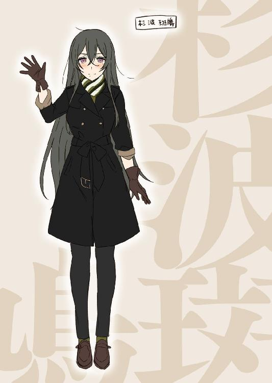

| 対魔導学園35試験小隊 8.白銀争乱〈ファンタジア文庫電子応援店限定版〉<対魔導学園35試験小隊> (富士見ファンタジア文庫) | |
| 柳実 冬貴 | |
| (2014) | |
対魔導学園35試験小隊
８．白銀争乱
〈ファンタジア文庫電子応援店限定版〉
柳実冬貴

富士見ファンタジア文庫
本作品の全部または一部を無断で複製、転載、配信、送信したり、ホームページ上に転載することを禁止します。また、本作品の内容を無断で改変、改ざん等を行うことも禁止します。
本作品購入時にご承諾いただいた規約により、有償・無償にかかわらず本作品を第三者に譲渡することはできません。
本作品を示すサムネイルなどのイメージ画像は、再ダウンロード時に予告なく変更される場合があります。
本作品は縦書きでレイアウトされています。
また、ご覧になるリーディングシステムにより、表示の差が認められることがあります。
口絵・本文イラスト 切符
プロローグ
エリザベーテがミスティルテインの契約者により殺害された数日後、魔導学園ヨーロッパシェルターでは、照明の抑えられた議事堂にてイーストサイドとウエストサイドによる緊急会談が行われていた。
「全てイーストサイドに責任がある！ ミスティルテイン、及びその契約者の監視はあなた方に一任されていたことは言い逃れできない事実だ！ どう落とし前をつけるおつもりか!?」
激昂しながら対面に座るマザーグースへ怒りをぶつけているのは、ウエストサイド幹部の一人だった。
西側の幹部は総勢二〇名。ほぼ全員がマザーグースを睨みつけている。
一方、イーストサイドの幹部はマザーグースとオロチだけだ。他のシェルターならばともかくとして、ここヨーロッパシェルターのイーストサイドは弱小だ。その上一連の騒動で、東の立場はさらに危うい状態へと追い込まれていた。
だというのにマザーは落ち着き払った涼しい顔で座り、オロチは机の上に足を投げ出したまま耳の穴をほじっている。
その態度が西側の連中の怒りを煽った。
「本件を内々で処理しようとこちら側が配慮しているのになんという態度か！ 多忙な我らがわざわざ時間を作ってまで集まっているのだぞ......！」
そうだそうだと言わんばかりに、ウェストサイドの幹部達が煽り立てる。
にわかに騒がしくなってきたところで、オロチが足の踵で思い切り机を打ちつけた。
諸刃流の師範としてだけでなく、吸血鬼の細胞を体内に移植しているオロチの踵落としは、容易く木製の机を叩き割った。
オロチは冷たい瞳で目の前の有象無象を見つめた。
「内々に処理してぇのはそっちだろうが......エリザベーテの私兵乱用、独断専行による外側への侵略行為。立場が危ういのはてめぇらの方じゃねぇのか？」
「......貴様......！」
「そもそもあのババアがミスティルテインを襲わなければこんなことにはならなかった」
「......証拠はまだ出ていない！ 知った風な口を利くな！」
「コロセウム建設現場の爆心地を調査すりゃすぐに魔力属性が判明する。古代属性保持者ってのは難儀だな、犯罪を行えば一発で属性がバレて容疑者に上がっちまうんだからよ。まして『全能』とくりゃ、世界中のどこ探したってエリザ一人しかいねぇ」
幹部連中が押し黙る中、オロチは口元に弧を描く。
「隠蔽に躍起になってるみてぇだが、無駄だぜ。すでに爆心地の土壌サンプルは採取させてもらった。検査結果が出ればてめぇらに勝ち目は無い」
「............っ」
「エリザ一人に責任をなすりつけようったってそうはいかん。仮にもウェストの幹部であるてめぇらが、計画を知らなかったとは言わせねぇぞ。エリザが死ぬとは考えちゃいなかったんだろう？ 残念だったな、『神殺し』の方が一枚上手だったようだ」
こつこつと笑うオロチに、立ち上がって怒鳴っていた幹部は奥歯を嚙んだ。
「......貴様ら、よもやこうなることが最初から......！」
今回の騒動でのイースト側の対処はあまりに迅速すぎた。予め何が起こるかを予期していたかのように、ウェストサイドの先々で既に動いていたのだ。
実のところ、エリザの行動を知っていた幹部は少なく、知っている者の中には彼女の蛮行を止めようとする者もいた。だからといってエリザが引き起こした一連の蛮行が露見してしまえば、幹部達も言い逃れはできない。オロチの言う通り、知らなかったでは済ませられない事態なのだ。
嘲るように笑みを浮かべるオロチを見て、幹部達は思い知る。
これは脅迫だ。オロチとマザーグースは魔導学園の全権を握るために、初めからエリザの暴走を利用しようとしていたに違いない。
「......ご安心ください。あなた方ウェストサイドの失態を元老院に報告しようとは思っていません。エリザベーテの死は、反体制派による暗殺として処理させていただきます」
黙っていたマザーが静かに目を開く。
「その代わり、あなた方は今後一切、我々の活動に口を挟まないでいただきます。固く口を噤んだまま、事が収まるまで動かないでいてほしいのです」
責任を負いたくないのであれば、黙って端で大人しくしていろ。
マザーの要求は至極単純なものだった。
「大人しくしていろだと......！ 貴様らの目的は何だ!? マザーグース......『東の白き魔女』......！ 貴様はいったい何者なのだ!?」
絶叫するように怒りを露わにする幹部を、マザーグースは細めた瞼の間から、暗くも美しい瞳で見つめた。人ならざる強大な存在を前にした時に、足がすくんで動けなくなるような重圧が幹部達を襲う。
ウェストサイドは前々から、このマザーグースという魔女の過去についてかぎまわっていた。いつどこで生まれ、いかにして育ち、どのような経緯でここまでの地位に登り詰めたのか。それを探ろうと躍起になっていた。
だが、彼女に関する情報はほとんど出てこなかった。わかるのは魔女狩り戦争中のどさくさにまぎれて突然姿を現し、エリザベーテやオロチ、ホーンテッドと共に審問会と戦っていたという事実だけだ。
それ以外は何もわからない。正体不明の存在が、幻想教団の中核に居座っていることの不気味さ。明かり一つない闇の中から、獣にじっとこちらを見つめられているような恐怖が、ウェストサイドの人間達にいつものし掛かっていた。
マザーグースという魔女は、全てが謎に包まれている。
「我らの目的は、再び起ころうとしている魔女と人類の戦争を止めることです。そこに噓はありません」
マザーグースを包み込んでいた闇が濃くなり、赤い瞳が人魂のような輝きを放ちながら、揺らめく。
「ですが、戦争をしないとは言っていません。我らの敵はあなた方が無能者と呼んでいる人々ではないのです」
マザーが立ち上がると同時に、オロチも刀に手を添えながら腰を上げた。
幹部達の問いかけるような視線に、マザーは答える。
「我々の戦争相手は──鳳颯月、ただ一人です」
それだけ言い残すと、まるで闇に溶けるように、マザーとオロチは議事堂の席から姿を消した。
ウェストサイドに対するマザーグースによる脅迫が行われた三日後の、対魔導学園理事長室。
「──和平会談？」
鳳颯月は椅子の背もたれに深く体重を預けながら、受話器に向けて疑問を投げかけた。
通話相手はマザーグースである。
《はい。純血の徒によるボーダーライン侵攻作戦は、一部の者の独断で行われたものなのです。我々魔女達の総意の上で執行されたものだと思わないでいただきたい。その誤解を解くためにも、どうか一度直接会ってお話がしたのです》
「......それは正式な手続きのもとに行われ、公表されても構わないものですか？」
棒読みのような口調で、颯月は淡々と問いかける。
《......いえ、この会談については内密にしていただきます》
マザーの答えを聞いて、颯月は大笑いした。
「なかなかいい根性しているじゃないか！ 綺麗事を毒のように吐きながら自分達の要求を押しつけようとしてくるイーストサイド幹部の役がだいぶ板についてきたんじゃないか、グングニル。それとも女神様と言い換えた方がいいのか？」
颯月が問うと、マザーは少し間を置いて、静かに答える。
《......お好きなように》
その一言に、怒りがこもっていたのを颯月は聞き逃さなかった。
机を指でコツコツと叩きながら、含みのある笑みを浮かべる。
「私の前で猫を被っても仕方が無いだろう。久方ぶりにそちらからコンタクトを取ってきたから何事かと思ったが......和平ときたか。そんなくだらない噓で塗りたくらずに、『ぶっ殺してやるから一人で出てこい』とはっきり言えばいいものを」
《私は少なくとも、あなたと違ってこの世界に順応しています。不器用な私なりに、この世界を愛している。だからこそ、あなたと争わない道を探しているのではありませんか》
颯月は目を細め、マザーの言葉を鼻で笑った。
「順応しているだと？ 元凶が笑わせてくれる。この世界の混沌とした有様は、全て君達が我々に戦争を仕掛けてきたせいだということを忘れたか？」
《以前の世界のことより、私は今の世界のお話をしているのですよ。私はあなたからこの世界を守りたい、それだけです》
「............」
《あなたは、この世界を破壊したいだけでしょう。魔導を滅ぼすということはそういうことです》
刺すような鋭さを持ったマザーグースの言葉を、颯月はやれやれと首を振って軽くあしらった。
「まあ、いい。私も君達とは一度会ってじっくり話をしておきたかった。その茶番、のってあげるよ。日時と場所はそちらが指定してくれたまえ」
《では、明日の午後三時、場所は......私達が最後に相まみえた場所、でよろしいですか？》
「......あそこか......いい趣味してるな、お前も」
笑ってから、颯月は思い出したように指をパチンと弾いた。
「──そうだ、オロチ君に代わってくれるかい？ どうせ横でこの話を聞いているんだろう？」
颯月の要求にマザーは黙り込んだ。
しばらくして、
《............何の用だ、くそったれが》
至極不機嫌かつ、殺意に充ち満ちた声が聞こえてきた。
颯月は嬉しそうな笑顔を作った。
「やあ、この前は挨拶もろくにできなくて申し訳ない。意外と元気そうで安心したよ。きかん坊のジャリ餓鬼だった君があんなに大人っぽく成長していたとは思わなかった。髭なんか生やしちゃって、貫禄が出ていて正直驚いたよ」
《要件だけさっさと話せ》
苛立つオロチに、颯月は顔のパーツを三日月のように歪ませる。
「言ったろう？ あの子......草薙タケル君は必ずこっちに戻ってくるって」
《何を勝ち誇ってるのか知らねぇが、んなもんはこっちも了承済みだ》
「そうなのかい？ 私はてっきり君が、タケル君に自分と同じ思いをしてほしくないから、内側で匿い続けると思っていたのだが」
自分と同じ思い。颯月はこの言葉を挑発のつもりでオロチへ贈った。
だがオロチは、力強くその挑発をはね除けた。
《──クサナギを舐めるなよ。あいつは俺様の血を引いている。せいぜい寝首を搔かれないように気をつけるこったな。草薙の一族は、てめぇに利用されるだけで終わったりしねぇ》
「そこの女に利用されている君が言っても説得力は無いな。オロチ君は、マザーグースの思惑がわかっていてそちらに荷担しているのかい？ 彼女に協力するということは、この世界に対する裏切りだ。世界を在るべき姿に戻そうとしている私の方が、幾分マシだとは思わないか？」
黙り込んだオロチに対して、颯月はにっこりと微笑む。
「今からでも遅くはない。君はこちら側につくべき──」
《──俺はてめぇを殺して、ミコトが戻ってきてくれりゃそれでいい》
オロチの拒絶を聞いても、颯月は動じない。微笑みをそのままに、薄目を開けるだけだ。
「その言葉を聞いたら......きっと草薙君は君の敵になると思うが？」
《構いやしねぇ。あいつが俺様の行く手を阻むなら、技の全てをぶつけ合うだけだ》
微笑みを苦笑に変え、颯月は嘆息する。
「君は──もしかして草薙君に自分を止めてほしいとか思っていたりするのかな？」
不意に、通話が切れた。
受話器のスピーカーからは無機質な電子音が響くだけだ。
颯月は口元に手を当てて笑い声を堪えた。まるで弱い者虐めをして笑い転げる子供のようだった。いっひっひと、喉と腹をひくつかせながら椅子の背もたれを揺り動かす。
そんな彼の姿に、入口付近で壁に背を預けていた一人の少年が呆れた顔をしていた。
「会長......いくらなんでも笑いすぎ。やってることは大人のゲスさ全開なのに、リアクションが近所の悪ガキそのものっすよ」
少年は両手を上げながら壁から背を離し、ガムをくちゃくちゃと咀嚼しながらゆっくりと颯月の元へやってくる。
背は低く、見た目も中学生かと見間違うほど若々しい。色素の薄い茶色の髪と中性的な顔立ちも相まって、対魔導学園の学生であると言われたほうがしっくりくる。
彼は歴としたエグゼの隊員であり、しかも副隊長。歳も二十歳を越えている。
名はマグノリア・スカーレット。
どう考えても男の名前ではない。つまり彼ではなく彼女。少年ではなく、正確には少女でもなく、歴とした成人女性だ。
「これを笑わずにいられるものか......！ 子供だった当時に比べて切り捨てることを学んだようだが、相変わらず挑発にはほとほと弱いと見える。ぷっ、くふふ、図星を指されたからって電話切っちゃったよあの男！ 聞いていたかマグ！」
「はいはいわかってますよ聞いてましたよ。ったく、何がそんなに面白いんだよこのおっさん......」
「マグ、君はもう少し他人が自分の言葉で狼狽えた時の快感というものを理解したほうがいい。手の平の上でコロコロ転がっていたことに気づいて青ざめた顔のダンゴムシにガッツポーズを決めてやるのは、もはや私の趣味なのだよ」
「なんすかそのたとえ......わかってたけど、ほんとウンコ野郎だな......」
目を線にしながら、マグノリアはガムで風船を作ってみせた。
風船が割れた音と同時に、颯月が笑うのを止める。
肘掛けに頰杖をつきながら、颯月は表情を消した。
「で、反体制派の実態は摑めたのかい？」
問われて、マグノリアは肩をすくめた。
「それが手を焼いてるんすよ。審問会内部にもスパイが紛れ込んでいたんですがね......確定している大野木彼方は行方不明で足取りはまだ摑めてないっす。連中の推定トップである星白流も灰色都市の戦場で目撃されたのを最後に見失ってます。それと鐵隼人は......白っすね。これ見よがしに潔白でしたよ」
「だろうね」
颯月の確信していたと言わんばかりの笑みに、マグノリアは不服そうに舌打ちをした。
「でもまあ、怪しい連中の脳みそを片っ端からばらしたんで、成果はありましたよ。ほとんどの連中は冤罪になっちまいましたけど、数人モノホンを見つけました。本拠地の場所は、捕らえた連中の中に知ってる奴がいませんでしたけどね」
「......こうなることを見越して本拠地を教えていなかったのか。興味深い、規模はどれくらいだ？」
好奇心に瞳を輝かせながら、颯月はマグノリアへ身を乗り出す。
「正直、ここまで不明瞭な集団が存在すんのか？ ってのが素直な感想っすね。人数は不明、たぶん星白ですら把握し切れてないんじゃないっすかね。連中、異端審問会の反体制派だけじゃないんすよ。幻想教団、倫理委員会、ウェストサイドイーストサイド、公認宗教団体、非公認宗教団体、魔導犯罪組織諸々......海外はどうかわかんねぇっすけど、たぶんどの組織にも数人は紛れ込んでるっつーか、所属する組織に反目している連中が危うい協力関係にあるだけの集団っす。実態が摑めないのも無理ないっすよ、これは」
お手上げだと言わんばかりに両手を挙げるマグノリアに、颯月は目を見開いた。
「その実態すら摑めない組織を、あの赤毛の女の子がまとめ上げているというのか？」
「彼女がトップなら、そうなりますね。本拠地なんてあるのか疑問っすけど」
「あるに決まっているさ」
切り裂くような一言に、マグノリアは口を噤んだ。ギラついた颯月の瞳に宿る感情は怖れでも怒りでもなく、歓喜だった。
「恐らく反体制派の正式なメンバーはそう多くはないだろう。むしろかなり少ないはずだ。各組織の方針に反目しているだけの連中は、ただ単に利用しているだけにすぎない」
「連中の目的は？」
「彼らは『見えない内戦』を世界中の組織に同時に勃発させるつもりでいるのさ。既存の組織を内側から瓦解させて、最終的には審問会や幻想教団に代わる組織の構築を目指す......もしくはその両組織を内側から乗っ取ろうって魂胆かもね」
「......革命軍って奴っすか。でもそういうのが本格的に動くのって、両軍が疲弊した終戦間際か終戦直後が一番効率的なんじゃないっすか？ 審問会も幻想教団も、まだ体力的には全然余裕っていうか、戦争始まったばっかでしょ？」
マグノリアの疑問に颯月は目を細め、顎に手を当てながらほくそ笑んだ。
「......奴ら、この戦争が終わってからでは何もかも遅いということを知っているのさ」
颯月は楽しそうに椅子を回転させて、窓の外の風景を眺める。
「正直、あの少女がここまでやるとは思わなかったよ。生徒会を乗っ取った時点でなかなかやる子だとは思っていたが、まさかこんなに面白い人材だったとはね」
「あえて泳がせていたわけじゃないので？」
「私の誤算だ。見誤っていただけさ。子供が背伸びをして大人に反抗することはよくあることだから......」
嬉しそうに顔を綻ばせて、大きく息を吸う。
「しかしあの子は私と同じタイプだったか......想定外のイレギュラーとは、面白いな。この戦争にも歯ごたえが出てきた」
颯月はマグノリアに背を向けたまま、前髪を搔き上げた。
「幻想教団は戦力以外は脅威ではない。我々が最優先で対処する相手は反体制派のような連中だ。保有する情報量は幻想教団より上の可能性がある」
「どうします？」
マグノリアから命令を要求されて、颯月が指をパチンと鳴らす。
「──君はエグゼを率いて三五試験小隊を追え。星白流は必ず彼らのそばにいるはずだ」
「捕縛後の星白の処遇は？」
「捕縛なんかしなくていい。全力で潰せ。それが同類への礼儀というものだ」
「リョーカイっす。いいね、会長がオレらに下す命令、いつもシンプルで好きっすよ」
命令されると、マグノリアは踵を返して理事長室を出て行った。
残された颯月は眼下の学園風景を眺めつつ、感慨に耽った。
鳳颯月が異端審問会を牛耳るようになってからどれだけの時間が経過したのかは、本人以外に知る者はいない。
異端審問と呼ばれるシステムが確立された時代は、中世まで遡る。
元々は異教徒を淘汰するための宗教間の弾圧でしかなかった。発端はカトリック教会と記録にあるが、今となってはそのカトリックですら『魔導』と決めつけられ、法で禁じられた概念となっている。現代で審問会に公認されている宗教など、弱者を体よく利用しているだけの偽物でしかなかった。
そうなるように仕向けたのは全てこの男だ。数多くの戦争の最中、まるで寄生虫のように審問会を内側から食い荒らし、乗っ取ったのである。
彼の目的を知る者は少ない。彼の正体を知る者も、数えるほどしかいない。
年齢すら定かではない男が、世界最大組織のトップに君臨していることに疑問を抱いている者は、あまりに少なかった。
自らが築き上げた偉業と言って差し支えない目の前の光景に、颯月は酔いしれるでも高笑いするでもなく、ただ深く深くため息を吐いた。
「ここまでくるのに何年使ったか。思いの外、時間がかかってしまった」
視線を上へ移し、晴れ渡った空を見上げる。
視界を埋め尽くす青に安らぎを得て、颯月は曇りのない微笑みを浮かべた。
そして一言、
「......世界を壊すには、いい日和だ」
小春日和の空を眺めるように、幸福な気持ちでそう零した。
第一章 北へ
第五研究所を抜け、地下道を通って地上への脱出を試みた三五小隊は、二〇キロ近くの道のりを経てようやく外への出口へ辿り着いた。
タケルは橋下の地下道入口のドアを開けて、外の様子を確認。
いやに静かだった。銃声や砲声は遥か遠くだ。
人の気配も無い。
「......よし、行けそうだ」
タケルは一旦ドアを閉めて、仲間の様子を確認。
桜花と斑鳩はまだ眠っている。その他の面子も満身創痍、泥と砂だらけだった。
マリとうさぎは表情も固く、これから先に何が待っているのか、不安でしょうがないという様子が手に取るようにわかった。
笑えるような状況じゃなかったが、タケルはあえて笑ってみせた。
「みんな、ひでぇ恰好だな」
タケルが笑うと、釣られるようにマリとうさぎも笑った。カナリアはさっきからずっと不服そうな顔をしているが、ちゃんと斑鳩を背に負ぶっている。
続いてタケルは生徒会長、星白流に顔を向ける。
流はタケルに頷いてみせて、皆に今後のことについて話し始めた。
「これからうちらは反体制派の本拠地に向かう。東北の方に入口があるから、そこまで移動しなくちゃならないんだ」
「東北って......かなり距離あるわよ？ 大丈夫なの？」
マリが不安げに問うと、流はいつもののほほんとした顔で笑った。
「だ、だだだ、だだ大丈夫」
「「「「おい！」」」」
表情とはかけ離れた不安を煽る震え声に、全員がツッコミを入れた。
「冗談冗談～。ちゃんと近くに車も用意してあるんだよ。高速は検問が多いしＥＴＣとかカメラが不安だけど、一般道なら抜け道を知ってる。ま、気楽に行こうよ、気楽に～」
「......なんでそんなに楽天的でいられるんですの？」
うさぎが尋ねると、流は薄目を開けたまま腰に手を当てていやらしく笑った。
「重く考えたって仕方ないからね。君らも状況を楽しんだ方がいいよ。逃避行だよ～？ ワクワクするじゃん。修学旅行みたいなもんだと思いなさいな」
緊張感の欠片も無い流の図太さを、タケルは誰かに似ていると感じた。
なんかこう、頭の中に猫のように笑う白髪の男が......。
信用していないわけではないが、こういうタイプの人間はどうにも苦手だった。
「草薙君」
不意に、流はドアノブに手をかけながらタケルを呼んだ。
ドアの隙間から漏れる外の光が逆光のように流を照らしている。
流がゆっくりと、タケルに手を差し伸べる。
彼女の表情を見て、タケルは考えを改めた。
似てなんかいなかった。この人は、あの男とは違う。
そう思わせるほどに、その時の流の表情は、タケルに安堵をもたらした。
「私はこれから約束を守ってくれた君に、その恩を返さなければならない。だから行こう──反撃開始だよ」
何故ならば彼女は、人を利用することだけしか考えていないあの男とは違う、人間味に溢れた顔をしていたからだ。
タケルは、迷わず彼女の手を取った。
だが、六時間後。
「......むむむ」
車のハンドルの上に両手を置いて、地図と睨めっこをしながら、星白流は唸っていた。道路の端に止めた流の車は、道行く乗用車達に追い越されていく。
流はこの体勢のまま、すでに三〇分近く思案を続けていた。
助手席に座っていたタケルは、不安そうにずっと流の横顔を見つめていたが、彼女がパタンと地図を畳んだのを見て、ごくりと喉を鳴らした。
流は真横のタケルにニコッと微笑んだ。
「──ごめん、迷っちゃったぜ！」
「うぉい！」
さんざん待たされた挙げ句の流の結論に、タケルは思いきりツッコミを入れた。
流はタハハと笑いながら、めんごめんごと両手を合わせてタケルと後部座席に座る雑魚小隊のメンバーに謝罪した。
「い、いや～、だってほら、カーナビとか携帯使ったらこっちの位置が審問会にバレちゃう可能性高いし～......うち、現代っ子だから地図なんてちゃんと読んだことなくてさ～」
「日頃の訓練で地図は読み慣れてるって言ってたじゃないですか！」
タケルが切羽詰まった様子で問い詰めると、流は口を尖らせた。
「そんなこと言うなら草薙君読んでよ～。助手席座ったんだから地図を読むのは君の仕事でしょ～」
「剣術以外になんにもできねぇって、俺最初に言いましたよね!? なのにここ座れって言ったの生徒会長じゃないですか！」
「あはは、威張って言うことじゃなぁいぞ☆」
「っ......～～～すっげぇムカつく......！」
拳を握りしめながら、タケルはがんばって怒りを堪えた。
やっぱり苦手だ、この人。
流が運転している車は八人乗りのワゴンだった。運転席に流、助手席にタケル、後部座席一列目に桜花、マリ。二列目にカナリア、うさぎ、斑鳩の順で座っている。
全員、制服ではなく私服姿だった。三五小隊は指名手配中なので、対魔導学園や魔導学園の制服を着ているわけにはいかなかったのである。
タケルはダウンジャケットにジーンズ、桜花はハイネックのセーターとスカートにブーツを履いている。マリはダッフルコートに色違いの帽子とマフラー。うさぎは白いプリーツコートに白いスカート。斑鳩は黒いＴコートと黒いジーンズ。カナリアは動きやすいという理由でジャージを着ており、耳を隠すために耳当てをしていた。
そして流は革ジャンにダメージの入ったジーンズに、レンズの大きいサングラスをしていた。
恐ろしく似合っていない上に不審すぎる格好だ。タケルが引きつった顔で見ていると、流はグラサンを頭の上にのっけてキリッと顔を引き締めた。
「変装っていったらグラサンだよ」
「もうなんか、不釣り合いすぎてギャグになってます」
流がタケルの率直な感想に「えー！」とショックを受けていると、
「あの......生徒会長、運転代わりましょうか？」
後部座席の桜花が身体を乗り出して、タケルと流の間に入ってくる。
目を覚ましてから気が抜けたような桜花だったが、不穏な空気を察したのか自分から名乗り出ていた。
桜花の表情はいつもの凜々しいものではなく、どこかぼんやりしていた。
人生の目標にしていた復讐を果たして、まだ時間が経っていないのだから無理もない。
「ダメだよ桜花ちゃんっ。エロ本と一緒で一八歳未満は運転しちゃいけないんだぞぅ」
「一応、審問官特権で運転免許は取得済みです」
「でもずっと緊張しっぱなしで疲れてるんだから、もっと休んでおきな～。それに子供が車運転してたら怪しさ全開だしね～」
一番子供っぽい外見のあんたが言っても全く説得力がない、とタケルは思った。
しかし、前者には一理ある。
「無理すんな。背中だってまだ痛むんだろ？ 霊銀の傷が治っても、痛みが引くのは時間がかかるはずだ」
「それは......大丈夫だ。吸血鬼化を解除した後は霊銀のダメージは抑えられる。ヴラドが直してくれたから平気だ。休息も十分にもらったし、これ以上だらけると逆にまいってしまう。運転していた方が気が紛れると思うのだ」
桜花は寝癖で乱れた髪を片手で整えながら、そう言った。
寝起きの桜花というのはなかなかレアだ。髪を直す仕草が妙に色っぽくて、タケルはドキッとした。
「？ どうした？」
「い、いや......」
たまらず視線を逸らしてしまう。
『一緒がいい......半分じゃ嫌だ。全部、タケルと一緒がいい』
あんなことを言われて、その要求に応えた手前、妙に意識してしまっている自分がいた。
よこしまな気持ちを抑え込もうとしていると、突然ドスッと鳩尾に肘が入った。
軽いものではあったが、タケルは短く唸った。
視線を腹部に下げると、そこには黒い布を被った何かが膝の上に鎮座している。
車に乗った時からずっと膝の上にいたそれは、もぞもぞと動きながら、
「すみません。つい、条件反射で」
ぼそりと言った。
ラピスである。
膝の上に座っている理由は、彼女がこの場所を指定したからだった。
ラピスは今、魔力を封じるための布、黒いローブを頭から被った状態だった。審問会にラピスの魔力を悟られないためである。ラピスは神狩り化を発動した時点で審問会からの制御を強制解除された状態にあるのだが、魔力の情報は登録されているため、察知される可能性が高いのだ。
同じ理由で、ヴラドも現在は魔導遺産封印用のボックスに収められた状態だった。
ラピスと違ってヴラドは颯月の管理下にあるため、完全封印である。流の話では制御を解除する方法はあるとのことだった。どのような方法でそんなことを可能とするかは定かではないが、今は信じる他なかった。
「な、なんだよいきなり......痛いぞ」
「申し訳ありません。エラーです。私にも何故このような行動に走ったか理解できません」
そっけなく言って、ラピスはぷいっと窓の外を向いてしまった。
魔導学園での一件以来、ラピスの行動には妙な点が多くなった。その妙な行動の理由を問うと、ラピスは必ず「エラーです」と口にする。そういえば、『全部一緒がいい』の桜花とのやりとりの時も、ラピスから黒いオーラを感じていた。
もしかして相棒として嫉妬されている？
と思ったが、ラピスに限ってそれは無いはずだった。彼女は魔導遺産としてタケルを独占したがるが、事対人関係に関しては無関心なのだ。
「いじけてんのか？ 何だよ、言わないとわかんないぞ」
苦笑しながら顎で頭をぐりぐりとしてやる。
「......私にもわからないと言いました。頭をぐりぐりしないでください」
ラピスの顔を覗き込むと、無表情のままぷくーっと頰を膨らましていた。
前言撤回だ。やはりいじけている。
タケルが苦笑を浮かべていると、後部座席からうなり声のようなものが聞こえてきた。
「う～～～～、う～～～う～～～～！」
桜花の隣に座っていたマリだった。
マリはタケルの座席の後ろに張りついて、妬ましいと言わんばかりの視線を三人へ向けていた。
「なんであたしの知らないところで三人の仲が進展してるわけ？ なんでずっと一緒にいたあたしは置いてけぼりなわけ？ あたしのフラグは？ ねぇねぇなんで！ なんであたしとのフラグが立たないのタケル！」
「ぐぉ！ てめっ、後ろから首を絞めるんじゃねぇっ」
「脱出する時に何があったのか問いただすって言ったわよねぇ!? 言いなさいよ何があったのよあんた達はーッ！」
「この非常時に何言ってんだおま──やめ、死ぬ、死ぬぅ！」
後ろからがくんがくんと揺らされながら首を絞められて、タケルの顔がどんどん青くなる。ラピスはそっぽを向いたままで、桜花はぼんやりしたまま苦しむタケルを見ている。
後部座席三列目がやけに静かだったが、車内は見事なカオスっぷりだった。
「草薙くんモテモテだね～。おねいさんもラブコメ入れてほしいな～。参戦しちゃおっかな～！」
「いいからあんたは......さっさと、運転......再開し......ろ......！」
のほほんと観戦している流にツッコミを入れつつ、タケルは撃沈。結局運転は桜花がすることになり、車が発進したのはそれから一〇分後のことだった。
さらに一時間後、運転を代わった桜花のおかげで旅路はスムーズに進み始めていた。
が、最後列のカナリア、うさぎ、斑鳩達はかれこれ数十分黙りっぱなしだった。
カナリアはずっと不機嫌そうに窓に肘をつきながら外を見ている。
斑鳩も斑鳩で、たまにカナリアの方を見たりはしているが、話しかけようとはしなかった。
そして、
「......うぅ......」
この状況で一番辛いのは間違い無くうさぎだった。
気まずい。気まずすぎる。
うさぎも二人の事情を知っているだけに話しかけることができない。
斑鳩が目を覚ましたのは、地下道を出てすぐだった。
『......懐かしい、匂いがする』
目覚めるなり、斑鳩はカナリアの髪に顔を埋めてそんなことを言った。
驚いたカナリアは咄嗟に手を放し、斑鳩を地面に落としてしまった。
尻餅をついたまま、斑鳩はカナリアをきょとんと見上げていた。
カナリアは肩を怒らせて何かを怒鳴ろうとしたが、突然立ち上がって頰に手を当ててきた斑鳩に言葉を詰まらせてしまった。
「............」
うさぎは、あんな表情をした斑鳩を初めて見た。
まるで亡くした宝物を見つけたような......失っていた自分の感情を取り戻したような。
斑鳩はそんな表情で一筋の涙を流していた。
そしてもう二度と手放さないように、優しくカナリアの身体を抱き寄せた。
言葉は無かった。ただ黙って、優しくカナリアを包み込んでいた。
もちろん、カナリアがそのままでいることはなく、すぐに斑鳩を突き飛ばしてしまった。
以降、カナリアは斑鳩を無視し続けている。
（──どどどどうすればっ！）
この重たい親子関係を取り持つのは自分には荷が重すぎる。
（だいたいなんでこの席順なんですの!? なんでわざわざわたくしを間に挟むんですの!? 席順決めたあの生徒会長を心底恨みますっ！ この二人のクッションになるにはわたくしにはぷにぷに感が足りませんわよ！ 席替えを提案するべきですわっ。この席には空気の読めない鳳あたりを配置すべきです。こういう気まずい空間では空気を読まない人間が逆に効果的なのです！）
桜花がすでに運転席に移動していることに気づいて、うさぎは「ぬな～」と涙目になった。助けを求めるように助手席のタケルへ目をやる。
膝の上にラピスがちょこんと座っているのが見えた。
怒りが湧いた。
（うぅぅぅぅぅぅ！ あそこがいい！ わたくしも草薙の膝の上がいいです！ なんであの子だけ特別扱いなんですの!? 草薙も草薙ですわっ、どうして素直に膝の上を譲っているんですのっ。どうしてわたくしじゃないんですのっ。鼻の下伸ばしてデレデレしちゃって！ すけこまし！ あんなやせっぽちな子じゃなくて、絶対わたくしの方が抱き心地がいいに決まって──）
「カナリア」
横の斑鳩が言葉を発したことで、うさぎの嫉妬まみれの思考が氷のように凍てついた。
「話したいことがたくさんあるのだけれど......ごめんなさい、うまく言葉にできないわ」
控えめに、冷静な声で斑鳩は言った。
カナリアは窓の外を見たまま、忌々しげに顔を顰めた。
「カナはお前と話すことなんか無い。そのまま黙ってろ」
「そうもいかないわ。私は私なりにあなたに会うために、今まで──」
「会う必要なんか無かった」
「......ならどうして、草薙についてきたの？」
「うるさいっ、お前関係ない」
「関係あるわ。だって私はあなたの──」
目を閉じて、斑鳩が慎重に言葉を選んで伝えるべきことを伝えようとする。
だが、その前にカナリアが髪を逆立てて、重く太い声でこう言った。
「母親ぶるな......！」
その言葉には、会話を終わらせるには十分すぎる重みがあった。
再び後部座席に淀んだ空気が立ちこめる。
うさぎは緊張で肩をびくつかせながらも、カナリアを見て、次に斑鳩の顔を窺った。
斑鳩は目を細めて、小さくため息を吐きながら、カナリアと同じように窓の外に視線を移していた。
相変わらず飄々としている。
うさぎには斑鳩の気持ちはわからなかった。うさぎは母親になどなったことがない。この歳で母親になってしまった斑鳩の気持ちは、到底計り知れない。
いつものように動じた様子を見せない斑鳩にため息を吐きたくなる。こんな時くらい少しは動揺や狼狽を表情に出したらどうなのだ？
そう思いながら再び沈黙に耐えようとした時、うさぎは見てしまった。
シートに置かれた斑鳩の手が、細かく震えていたのだ。
（............）
うさぎはタケルの次に斑鳩を知っている。
いつも大人びていて、つかみ所のない斑鳩だけれど、彼女だって傷つかないわけではないのだ。
うさぎの知る斑鳩は、実のところうさぎ以上に不器用だ。斑鳩は悲しみや寂しさという感情を外に出すのが苦手だ。それが幼少期の環境のせいなのかはわからないが、とにかく斑鳩は哀の感情を表情に出さない。
故に気づけるのは、付き合いの長い人間だけなのだ。うさぎは斑鳩の震える指先を見つめることで、自分がこの席に配置された意味をようやく理解した。
なるほど。この役目ができるのは、この場では自分しかいない。
うさぎは迷わず、斑鳩の震える手を握った。
「............」
うさぎは黙ってぎゅっと斑鳩の手を握りしめる。
大丈夫、の言葉はいらない。だって、大丈夫ではないのだから。
故に、うさぎは黙って斑鳩の手を握るのだ。
「うさぎ」
斑鳩は外を見たまま、誰にも聞こえないくらい小さな声で言う。
「..........................................ありがと」
うさぎは口を一文字に結び、ふんすと鼻息を鳴らして、一度だけ強く頷いた。
斑鳩がうさぎに肩を寄せて、寄りかかる。
ここは目的地に到着するまで、黙って斑鳩の手を握り続けよう。
騒がしい前列の喧騒を眺めながら、うさぎは一人誓うのだった。
「......うか」
「............」
「桜花、聞こえてるか？」
「!? タケル？ どうかしたか？」
上の空で運転をしていた桜花が呼びかけに答えるのに、一分ほどかかった。
ようやく二列目の席のマリと流が大人しくなったため、ぼんやりとしている桜花を気にしてタケルが話しかけたのだが、何度呼んでも桜花は反応しなかった。
「十回近く呼んでも気づかなかったぞ」
「そうなのか？ すまない、運転に集中していた。バイクはよく乗るのだが、車は久しぶりでな」
心配無いことをアピールする桜花だったが、タケルの目はごまかせなかった。
「やっぱり疲れてるんじゃないのか？ 運転代わってもらった方がいいんじゃ......」
「平気だと言っただろう？ それとも私の運転は荒っぽいか？ 酔うだろうか？」
「そんなことねぇけど......地下道を出てから、ずっと何かに悩んでるみたいだったから......さ」
復讐を果たしたのだから目的を見失っても仕方が無いと思うが、それだけではない気がしていた。
予感が的中したのか、桜花は深く息を吐いて目を細めた。
「悩んでいるわけでも、落ち込んでいるわけでもないのだ。ただ、終わった気がしないだけだ」
「......ラフメーカーのことが、か？」
確認するようにタケルが言うと、桜花が小さく頷く。
「私には......終わっていないという確信がある」
「どういうことだ？」
「ラフメーカー......ミムラス・ヴァレンシュタインは私に言った。『審問会から逃がしてもらった』と。ラフメーカーは私の父、峰城和眞に一度逮捕されていた。だがその九年近く後、移送中に脱獄して父諸共私の家族を殺した。よくよく考えれば妙だ......ラフメーカーはＡ級危険指定、移送の際には十分過ぎるほど警戒されていたはずなのだ」
Ａ級危険指定となれば、鉄の処女への入棺が確定している。そんな危険な犯罪者の脱獄を許すなど、本来ならば絶対にあり得ないことだった。
それに、ラフメーカーの言動には妙な点が一つある。
「......逃がしてもらったってことは、協力者がいた......？」
「そうなるだろうな。しかし、私も彼女の脱獄について血眼になって情報を漁ったが、詳細は記録されていなかった」
桜花は言葉を一度切って、鋭く目を細める。
「気になるのは彼女の脱獄の際に、審問会に誰一人として犠牲者が出ていないことだ。殺人を生き甲斐にしていたＡ級危険指定だぞ。戦った私にはわかる......更生前のあの女が脱獄の際に誰も殺さないなどあり得ん」
「......それって」
ギチリと、桜花がハンドルを強く握る。
「私は、審問会が彼女を逃がしたのだと思っている。戦場に父と知り合いだった人がいて......その人から、私の父が審問会にとって厄介者だったと聞いた。だからラフメーカーを使って、審問会が私の父と家族を殺した可能性が高い」
桜花の話を聞いて、タケルは息を吞んだ。
そんなことができる人間に心当たりは一人しかない。
あの男ならば、情報を隠蔽するためにそのぐらいのことはやってのけるだろう。
「確証は無い。いずれ調べる必要があるだろう」
桜花の言葉を聞いて、タケルに迷いは無かった。
「俺も手伝う。もしそれが本当なら、絶対に許せねぇし」
「助かる......でも、この一件は全てが終わるまで後回しだ」
意外な一言に、タケルは驚いた。
桜花は困惑しているタケルに苦笑を向けた。
「もう私の個人的な復讐は終わったのだ。お前と一緒に終わらせることができた。もうこれ以上は憎しみで行動したりはしたくない」
「......でも」
「今後私は三五試験小隊の一員として脅威に立ち向かうつもりだ。仲間や、お前の妹を助けるために行動したい」
「............」
「私の復讐はもう終わったんだよ、タケル」
そう言う桜花の表情は晴れやかではなかった。
虚しさと、罪を背負った者の顔をしていた。
けれど、確かに安堵はあった。肩の荷が下りたのは本当だろう。その安堵が自分が桜花に与えてやれたものだとするならば、少しは誇らしく思える。
彼女の重荷を半分背負えたのだと、確認できる。
「......そっか」
タケルは薄く微笑んで、前を向く。
「私のことより、今はタケルだ。小隊メンバーの中で一番気が気じゃないのは、実のところお前だろう？」
「............」
「皆を不安にさせないために明るく振る舞ってはいるが、キセキのことで気を病んでいるのが、私にはわかる」
「......まあ、気に病んでねぇって言えば噓になっちまうな」
本当なら、今すぐにでもキセキのところへ駆けつけて、救ってやりたい。
キセキの居場所はすでに判明していた。流の話では、アルケミストの第一研究所で実験対象として捕らえられているらしい。そこでキセキがどんな扱いを受けているかはわからない。だが、きっと想像を絶する苦しみの渦中にいるのは間違いなかった。
アルケミスト第一研究所は、審問会と結託して要塞並の警備が展開されているはずだ。第五研究所の比ではない。第一研究所に奇襲をしかけるということは、審問会本部を襲うのとたいして変わらなかった。
今の人数では、何も出来ずに全滅させられてしまう。一旦反体制派の本拠地へ向かい、戦力を整えてから向かう必要があった。
「お前の隊長としての気遣いは立派だ。憎しみに囚われて仲間を危険にさらしてしまった私には到底たどり着けない気高さだと思う」
「でも」と付け加えて、桜花は少し恥ずかしそうに頰を染める。
「......よ、弱音くらい、吐いてもいいんだぞ。その......全部一緒がいいって言ったら、タケルは応えてくれたわけだし......私だってお前のために何かしたい」
そんな態度をとられると、タケルまで照れくさくなってしまう。
「なんか、前にも牢屋で似たような話したよな。もうずいぶんと昔のことのように──」
誤魔化すように思い出を語ろうとした時、ふと胸元の服を引っ張られるような感触がした。
膝の上を見れば、ラピスがタケルの服を摑んだまま外を見ていた。
珍しく目を見開いて、ガラス玉のような瞳に風景を映している。
「どうした、ラピス？」
問いかけても、ラピスはすぐに反応しなかった。
遠くを眺めながら白い息を吐きつつ、もう一度タケルの服をぎゅっと摑んだ。
「...........................雪です」
曇天の空からはらはらと地上に舞い降る白い結晶。
田畑や木々は雪化粧に白く染まっていた。
「うお、ほんとだ。もう北部なのか......いきなり景色が変わるもんだな」
ラピスの真横に顔を寄せながら、共に外の風景を楽しむ。
二月と言ってもまだ冬は終わっていない。国という概念が無くなった今も、列島は都道府県の行政区画の名残をそのままに、旧東京、旧神奈川という呼び方で地域分けされている。今いるのは丁度旧群馬の北部だろう。かつては三国山脈を越えて新潟に入ると雪景色に変わったらしいのだが、魔女狩り戦争の戦場となったこの辺りは、戦闘の余波で山脈のいくつかが吹き飛んで無くなってしまっていた。そのため日本海からの雪雲が、せき止めていた山を越えてこの辺りまで広がっているのだ。
「ラピスは雪を見るのは初めてか？」
「......はい、たぶん。でも、よくわかりません。何故か似た風景を前に見たことがある気がします」
見たことがあっても不思議は無かった。前契約者の草薙ミコトと共に戦場を渡り歩いていたラピスは、この辺りに来たことがあったのかもしれない。
どんな感情を抱いているのであれ、ラピスは雪景色に魅入っていた。
「雪......好きか？」
タケルの問いに、ラピスは目を細めながらこう言った。
「...............わかりません。エラーです」
か細い声と共に、服を摑む手に力がこもる。
その仕草はどことなく、怖い夢を見た後の子供のようでもあった。
後部座席二列目で、流はポテトチップスを頰張りながら後ろと前の会話を聞きつつ満足そうにニンマリしていた。
まるで前後列で繰り広げられている会話が自分の思惑通りに進んでいて、それを喜んでいるようだった。
「......前と後ろでどいつもこいつもイチャイチャしやがって」
横で脚を組みながらやさぐれた様子で愚痴をこぼすマリに、流はポテチを差し出す。
マリは無造作にポテチを摑み上げて、口へ放り込んでボリボリと齧った。
「あんたとまともにしゃべるの初めてよね。ぶしつけでなんだけど、人が自分の思い通りに動くのを見るのがそんなに楽しい？」
マリは流を見ずに言った。
流は指についたポテチの塩を舐めながら、きょとんとして目をしばたたかせた。
マリは前後列に聞こえないように流に顔を寄せて、小さな声で続ける。
「この車の席順、どうやれば仲間同士がフォローし合えるか考えられてるわよね？」
「お、鋭いね～。その通りだよ。草薙君と桜花ちゃんはお互いにストレートな性格だけど、分かり合ってるから波長が合う。杉波ちゃんとカナリアちゃんの仲は他人がどうこうできる問題じゃないけど、うさぎちゃんならそばにいるだけで杉波ちゃんを支えてあげられる器量がある」
「......何それ、あたしハブ？」
「いやいや、君はこの小隊で一番空気読めるでしょ？ 恋敵の桜花ちゃんが草薙君に急接近するような今の状況でも、会話の内容察して口を挟まずに黙っててあげている。女ってなにげに嫉妬深い生き物だからなかなかできるこっちゃないよ～」
ぽんぽんと肩なんぞ叩かれて、マリは舌打ちをした。
「あんたからは審問会の会長と似た匂いがするのよね。チェス盤で人を転がして遊んでいるような悪趣味な人間と同じ匂い」
「わぉ、予想通りストレートな子だね」
流は大げさなリアクションをしながらも楽しげだった。
「あの白髪オバケに似てるかどうかは知らないけど、確かにうちは人が思い通りに動くことに対して嬉しさを覚えるよ。なおかつ、うちの思惑でいい方向に事が運んでくれるとさらに嬉しい」
「............」
「うちは生まれつき頭だか精神に欠陥があってね。家族が死んだり、友人が死んだりしても悲しいと感じられない。生徒会のメンバーが全滅した時も、残念というか、もったいないな～とは思えるんだけど、悲しみはどうあっても生まれてくんなかった」
あっけらかんと、世間話でもするみたいに流は言った。
マリにとっては初耳だった。意外そうに流の横顔を見ると、確かに彼女は笑っていて、自分の欠陥について負い目など一切感じていないようだった。
「でも、自分以外の人が苦しんでいたり悲しんでいたりするのがわからないわけじゃないんだ。共感ができないだけなの」
周りが皆絶望している中で、自分だけが幸福な状態でいられてしまう。
周りが絶望している理由は理解できても、同じ気持ちにはなってあげられない。
想像することしかできなかったが、それはきっととてつもない孤独なのではないかと、マリは思った。
「うちは他人の悲しみとか苦しみに共感することができないから、共感を得るためにはそういう負の感情で満たされちゃってる人達を幸せにするしかないんだ。この世界はうちにとっては共感できないもので溢れてるから、そうやって幸せだと感じてくれる相手を増やさないと、ひとりぼっちになっちゃう。寂しいって気持ちはわかんないけど、同じ気持ちになれる相手がいてくれた方が面白い」
言わんとしていることは、マリにもなんとなくわかった。
「そうやって他人に幸せになってほしいってがんばってるうちに、なんかそれが面白くなっちゃってさ。他人が自分の思惑通りに動いて、笑顔になってくれるのが楽しくて仕方なくなっちゃってね。もしかして生き甲斐なのかなって思って続けてたら、気づいたらこんな立場の人間になってた」
笑う流を見て、マリは目を細めた。
「じゃあ何？ あんたがあたしらを助けようとしてくれてるのは、全部自己満足だっていうの？」
「んー、うちには反体制派のトップって立場があるから全部が全部自己満足ってわけじゃないけど、三分の一くらいはそうかな」
「............反体制派の目的って何？」
「それは本拠地にたどり着けてから説明するよ～」
やんわりと、流はマリとの話を切った。
（............いけ好かないわ）
星白流という人間は、善意や大義があって三五小隊を助けたり、反体制派のトップになったわけではないらしい。
自己満足。全ては己の欲を満たすため......みんなが幸せ、ハッピーな世界を作るために革命を起こすらしい。
そんなわけがあるか、とマリは鼻で笑う。
他人との共感を得るためだけに、エゴで動いている？ それが本当であったとしても、彼女が反体制派に与している理由にはならない。反体制派は決して穏やかな組織ではない。血なまぐさいことをしてでも世界を変えようとする連中だ。
そして一番の問題は、反体制派の目的が見えてこないことだった。
審問会は魔導を駆逐し、人が安心して暮らせる世界を。
幻想教団は魔導を広め、魔女達が平等な自由を得るための世界を。
反体制派は？
いったいこの女は、反体制派で何を目指している？
「おっやつ～おっやつ～♪ さ～んじ～のおっやつ～はな～んじゃ～らほいっ♪」
流本人はのほほんとしながら、リュックサックの中の菓子を漁っている。
「ほいっ、マリちゃんの分」
「............」
「大丈夫だよ～。毒なんか入ってないからさ～♪」
流はチョコレートをマリに手渡す。疑り深いマリに対して薄目なんぞ開けたりしているが、それすらもわざとらしい。
マリはいぶかしみながらも、その板チョコを受け取ってさっそく齧った。
パキンといういい音がした。
「君がうちらの目的を知りたがるのは当然のことだと思うよ。実のところ、小隊メンバーの中で君は一番用心深くて世間を知ってる」
「擦れてるって言いたいわけね。ま、その通りですけど」
「いやいや、小隊には君みたいな子がいなきゃダメだよ。でもだからこそ、うちらの組織とか、この世界については本拠地についてから話したいんだ」
頑なに真実を打ち明けない流の姿勢に、マリは眉をひそめる。
「──たぶん、突拍子もなさすぎて実感が湧かないことだらけだから」
流は窓の外の雪を眺めながら、ぽつりとそう零した。
＊＊＊
「──やっは♪ これはこれはお二方、どちらへお出かけですか？」
ヨーロッパシェルター、魔導学園イーストサイド。和平会談へ向かうために転送魔法装置を利用しようとしていたマザーとオロチのもとへ、ホーンテッドが薄闇の中からぬっと現れた。
この男は、いつも唐突に現れては状況をかき乱していく。
マザーもオロチもいまさら驚いたりはしない。ただ、オロチはホーンテッドが出現する寸前にすでに刀の柄を握っていた。
ホーンテッドは明るい笑顔を振りまきながら、靴音を響かせて二人のそばへやってくる。
「......何の用だ変態」
「あなたを呼んだ覚えはありません。消えてくださいませんか、空気が汚れます」
二人からのつれない言葉に、ホーンテッドは大げさに肩をすくめた。
「出し抜けにぞんざいな扱いをされるのも、もう慣れてしまって全然興奮しなくなっちゃったんですがね。仮にも僕はイーストサイドに鞍替えした身なんですから、もうちょっとこう仲間意識とかそういうのがあってもいいんじゃないですかねぇ。ほら、一応僕ら、前大戦の戦友でしょ？」
口を尖らせてもじもじしているホーンテッドに、オロチが心底鬱陶しそうな顔をする。
「鞍替えだぁ......？ 元々誰にも従うつもりなんかねぇだろうが。つーかよ、おめぇがそばにいると全部台無しにされんのが目に見えてんだよ。魔女狩り戦争の時もそうだった。頼む、うぜぇからこっちくんな」
シッシッと手で追い払ってくるオロチに、不服そうに口を尖らせるホーンテッド。気心知れた仲のようなやりとりだが、両者とも目が笑っていないあたり、相容れぬ仲であることは間違いなかった。
「さすが付き合いが長いだけあって僕のことがよくわかっていらっしゃる。確かに僕はイーストサイドなんて糞喰らえだと思っていますし、マザーやあなたの偽善っぷりを胸くそが悪すぎて逆に愛らしくすら感じています。あなた方が僕の味方になるなんてことになれば鳥肌が止まらないでしょうね」
「おうおう、そいつはどうも」
「だがしかし、だがしかし！ だがしかし!? 今回ばかりは僕がご一緒した方が幾分マシな結果になると思いますよ。僕はあなた方の味方ではありませんが、鳳颯月の敵であることは間違いありませんからね」
チッチッチッと指を揺らして、ムカツク顔でそんなことを言ってくる。
「あの男が求めているものは破滅でしょう？ それは僕が求めている絶望とは相容れないんですよ。全部壊しちゃったら絶望も無くなってしまう。いいですか幸福があるからこそ絶望が際立つのです幸福が無い世界なんて絶望させてもつまらない！ 絶望が日常になったら絶望に価値が無くなってしまう！ そのバランスを崩そうとするあの男は間違いなく僕の障害だ敵というより障害物だ邪魔なんだうん──和平会談に行くんですよね？ 僕もご一緒します。むしろ僕がいなくちゃ始まらないイベントですよね？」
ホーンテッドは熱弁を振るったかと思えば、ニコッと微笑みを浮かべながら最後に「一緒に連れてけ」と締め括った。
胡散臭い。実に胡散臭い。
しかしホーンテッドの言葉が噓ではないことが、二人にははっきりとわかってしまう。
だが正直「だからってお前を連れて行く理由にはならねぇよ」といったところである。
オロチは目を線のように細くしながら、転送装置を起動させた。魔力がチャージされていく音が響く中、スサササーッとすり足でホーンテッドが転送装置に滑り込み、二人の間に割って入った。
満足そうに笑うホーンテッドを横目で見ながら、オロチが盛大にため息を吐く。
「うぜ......うぜぇ......うぜー。殺してぇ。グングニル、こいつ殺していいかね？」
「構いませんが、無駄に消耗するだけでしょう。この男が極端に死にづらく、戦うとなれば世界一面倒くさい存在であることは宿主も知っているはずです。何より、最優先で駆除すべき対象は彼ではなく別にいます。それがわかっているのなら、どうぞお好きに」
「あ、手伝ってくれないのね......」
「ええ。お断りします」
心底嫌そうな顔をするオロチと、無表情で目を閉じ続けるマザー。
ホーンテッドはおおげさに両手を広げ、馴れ馴れしく二人の肩に手を回した。
「いや～懐かしいですねっ。一五〇年前を思い出しますねっ。若かったあの頃、一人の女性を巡って争う二人の男！ 切ない三角関係！ 甘酸っぱい青春時代が蘇るようだっ！」
「おめぇはあの頃から歳食ってねぇし、俺様達はそんな関係じゃねぇだろうがッ！」
「宿主、相手をするだけ疲れるだけですよ。無視をするのが一番効果的です。まったく......何故ナハトはこのような男を選んだのでしょうね......いまだに理解に苦しみます」
身体が発光し始め、魔力が放出された瞬間、三人は忽然とその場から姿を消した。
第二章 Ａ級危険指定（推定）違法民宿『藤の宿』
旧群馬を越えて旧新潟に入り、ひたすら北を目指していた三五小隊だったが、予想外の降雪量に悪戦苦闘していた。
なるべく人気の無い道路を選んで走っていたのはいいが、マイナーな道は消雪パイプなどの除雪機能が行き届いておらず、スタッドレスタイヤとチェーンだけではなかなか進まない。
このままでは車がスタックしてしまう。桜花がいったんどこかに身を隠して雪が止むのを待とうと提案すると、流は「いい隠れ場所を知っている」と皆に告げた。
流に従い、地図を辿ってその場所へ向かった。
場所は人里離れた山奥。民家こそ点在しているが、恐ろしく過疎っていた。
たどり着いた先に待ち受けていたのは、古すぎて朽ち果てそうなレベルの民家だった。
よく見ると民家の玄関にすごく地味な看板がある。
『藤の宿』──温泉あります。
車から降りた流は「交渉してくる！」と言って、そそくさと民家の中に入っていった。待っている間、しんしんと雪が降る中、雑魚小隊メンバーは口を半開きにしながら民家を見上げていた。
「これ、どう見ても民宿ってやつよね」
「民宿だな」
「戦前の資料でこういうの......見たことありますわ」
「シーズン中だけれど、スキー場も無いのにこんな場所にあるのはすごく不自然ね」
「......ボロいぞ」
それぞれ不安そうな顔をしつつ感想を述べていく。
「まさかとは思うが、ここで一晩明かすと言い出すわけではないだろうな......」
桜花が顔を引きつらせたと同時に、民家から流がルンルンな足取りで出てきた。
そして、皆に向かってにぱーっと笑いながら両腕で大きな丸を作った。
「おっけーだってさ～！ 泊まれるってよー！」
桜花は無言でずんずんと雪の中を歩いて、流の肩を揺らした。
「アホですかあなたはッ！」
「えー!? なんでー!?」
「この非常時に民宿なんかに泊まってどうするのです!? 足がつく可能性を考慮していないのですか!? 我々は逃亡者なのですよ!?」
桜花の正論すぎる物言いに、流は口を尖らせて両手の指先をつんつんと合わせた。
そして上目遣いで身体をもじもじさせながら、
「だって、寒いじゃん？ この雪で車の中での野宿は辛いし......温泉、入りたいじゃん？」
「旅行に来たわけじゃありません！ 最初から我々は一泊するつもりなんてさらさらありませんでしたよ！ 逃げているのですから徹夜で本拠地に向かうのは当たり前でしょうに！ 審問会の追っ手がすぐそこまで近づいているかもしれないのですよ!?」
「大丈夫だよ～。この雪じゃろくに捜索もできないだろうし、ここの民宿、うちはよく知ってるんだ～」
流が事情を話し始める。
「うちが生徒会長になりたての頃に、ポイントを稼ぐために魔導遺産の情報を得てここまできたことがあるんだよ。ここの温泉の効能があまりに効き過ぎるって噂があってさ。病気とか怪我とか体調不良なんかがスッと治っちゃうの。不思議でしょ～？」
世間話でもするように、流は続ける。
「そんで調査したら案の定！ 源泉に魔導遺産が設置されててね～！ 本来なら魔導遺産を押収して宿の女将を逮捕するところだったんだけど......」
人差し指を立てて、流はのほほんと笑った。
「すごくいい温泉だったし、特に実害があるわけでもなかったし、魔導遺産を設置したのは七代くらい前のご先祖様だって女将は言ってたし、寂れた寒村からささやかな楽しみを奪うのは忍びなかったし」
「......それで？」
「それで、うちが来たらここを無料で使用させろって条件で見逃してあげたの～」
──桜花が再び流の肩をがくがくと揺らした。
「そういうのを汚職っていうんですよ！」
「あはは、桜花ちゃん、うちは正規の異端審問官じゃないし、今は歴とした犯罪者なんだぞぅ。ついでに君もそうだからいまさら細かいこと言いっこなしだよぅ」
「仮にも対魔導学園の生徒会長だった人がすることではないでしょう!?」
問題児といえども本職の魔女狩りをしていた桜花には、流の行いをへーそうですかで済ませることなどできるわけがなかった。
しかし激怒しているのは桜花だけで、他のメンバーはそうでもなかった。
寒そうに自分の身体を抱きながら、ぞろぞろと民宿玄関への階段を上り始める。
「もう寒いしどうでもいいや。疲れてるのは事実だしね、温泉温泉♪」
「このままでは雪だるまになってしまいますしね。あ、武器とかはどうするんですの？」
「もう車に放置でいいんじゃないかしら。足が冷えちゃってたまんないわ」
「いい匂いする......マリ、ここ、ご飯出るのか？ ご飯食べれる？」
そろいも揃って吞気な小隊メンバーに、桜花は狼狽する。
「お、おいお前達！ こんな状況なのにいつものノリでどうする!? 今はこんなことしてる場合では──！」
慌てて引き留めようとするが、皆はさっさと玄関に入っていってしまう。
桜花の肩に、タケルが手を置く。
「どうせこれ以上は雪が止まねぇと進めないし、ここでゆっくりさせてもらおうぜ」
「タ、タケルまで......しかしだな......」
「俺のために急いでくれるのは嬉しいけど、みんな疲れてる。桜花も、ここ一月くらいきちんと眠ってないんだろう？ 目の下、ちょっとだけ隈ができてるぞ」
気遣うタケルの言葉に、桜花は誤魔化すように目元を擦った。
タケルはぽんぽんと彼女の肩を叩く。
「今日ぐらいは温泉浸かってさ、うまいもん食って英気を養おうぜ」
「......タケルが、そういうなら」
桜花は頭をもしゃもしゃと搔きながら、皆の後を追うように玄関へ向かう。
「............」
皆の背中を見送りながら静かにうつむき、タケルは深く深く息を吸った。
そして、何かに耐えるように強く拳を握る。
怒りでも、苛立ちでもない。
腹の奥から這い上がってくるような焦燥感。
今この瞬間もキセキが苦しんでいるという事実が、いやが上にもタケルを急かす。
「草薙君は立派だね～」
不意に背後から流が声をかけてきた。
振り向くと同時に、突然流が背伸びをしてタケルの頭を撫でてきた。
不意打ちすぎて目を見張ってしまう。人の頭を撫でることは多かったが、撫でられたことはほとんど無かった。というか、初めてかもしれない。
流はニコニコしながら頭から手を放し、優しい瞳をタケルへ向けた。
なんだかすごく照れくさくて、タケルは挙動不審に視線を彷徨わせた。
「桜花ちゃんにはああ言ってたけど、一番休息が必要なのは君なんだから、無理しちゃダメだよ」
「だ、大丈夫ですよ。俺、魔導学園じゃずっと寝てたし。一番体力余ってますから」
流は首を横に振った。
「体力じゃなくて、心の問題だよ。妹ちゃんのことが気がかりなんだよね？」
「......それはそうですけど、今は焦ってもしょうがないってことはわかってますから」
「草薙君」
流が笑顔を止めて、真剣な表情でじっとタケルを見つめた。
タケルは緊張して直立してしまったが、流はすぐにまた表情を崩した。
「君は誰かに頼ることはするけれど、それだけじゃ全然足りないよ。君はもっと、人に甘えることを覚えた方がいいと思うんだ。そんなんじゃ、いずれ壊れちゃうよ」
「......甘える？」
頼るのと何が違うのかと、タケルは疑問に思う。
戸惑っていると、流は苦笑してため息を吐いた。
「もう、しょうがないな......この役目は桜花ちゃんか杉波ちゃんに期待してたんだけど、あの子らはあの子らで大変だし、仕方ないか～。いいかい草薙君、甘えるっていうのはね──」
「!? ちょっ」
「──こういうことを言うんだよ」
突然、流がタケルの頭を両手で包み込んで、自分の胸に引き寄せた。
流の胸はふんわりとした甘い香りがした。
かすかな膨らみを頰に感じつつ、タケルは硬直してしまう。
「あは、胸が無いのは勘弁な～」
「せ、生徒会長っ!?」
「いいから～。黙っておねいさんの胸に抱かれてなさいよ～」
言いながら、流は優しくタケルの頭を撫でた。
タケルは動くことができずに、されるがままになってしまう。
「君はよくやってるよ。よしよし......いい子だね......がんばったね。辛かったね。大丈夫、もう肩ひじを張ることないんだよ」
「............」
「君との約束は絶対に守るから。簡単じゃないけど、君が持ち帰ってくれた手段のおかげで、きちんとキセキちゃんを助けられる」
「............」
「ちゃんと準備もしてある......君は安心していいんだよ」
耳元で甘い声で囁かれて、タケルは恥ずかしさでいっぱいになった。
でも、不思議と悪い気はしなかった。頭を撫でる小さな手が心地いい。
思えば、背中を押してもらうことはあったけれど、包み込んでもらったことはあっただろうか？ 慰められたことはあっただろうか？
ずっと気を張り続けていたせいか、タケルの瞳から涙が零れた。
流は変わらず朗らかに笑っている。
「うちなんかでも慰められちゃうくらいに、君はまいってたのさ。わかったら、今日はゆっくり休むんだよ。君はずっとがんばってきたんだから、それくらい神様だって許してくれる。もしも神様が許さなくても、うちが許しちゃう」
時間にしても一分程度だっただろうが、それだけでタケルの背負っていた心の重圧が十分すぎるほどに消えていく。
心地よすぎて目を閉じそうになったところで、タケルは慌てて流から離れた。
「あっ、の......！ す、すみません取り乱しちまって！」
涙の滲んだ目を拭いながら、タケルは頭を下げる。
流は片手をぷらぷら振って、にんまりと笑った。
「おやすいご用さ～。それにしても、甘えん坊になった草薙君って破壊力あるね～。うちの母性本能がきゅんきゅんしたよ～」
「いや......その......っ」
「デコチューくらいしちゃっても桜花ちゃん達に怒られないかな～とか、血迷いそうになっちゃったぜぃ」
両頰に手を当てながら、やんやんと身体を捩らせる。
甘えん坊と言われて、タケルが今までにないくらいに赤面した。前々から年上タイプに弱いのは自覚していたが、まさか一歳上の少女の抱擁でここまで取り乱すとはタケル自身も思わなかった。流の外見は小学生並に幼いため、なおさら恥ずかしい。
タケルがそわそわしているのを見て、流はニヤつきながら、
「もしかしてうちに惚れちゃった？」
「は!?」
「そうか～。草薙君は大人の色香に弱いのか～。こいつはうちも草薙争奪戦に参戦しちゃうべきかな～？」
ぐふふといやらしく口元に手を当てながら笑う流は、すでにいつもの調子に戻っていた。
本当に実体が摑めない人だった。
流がタケルをからかい始め、タケルもいつもの調子でツッコミを返そうとした時、
「──宿主」
民宿の入口で、黒いフードを被ったラピスがタケルを呼んだ。
ラピスの顔はフードの陰になって見えない。
「......風邪を引きます。早く中へ入りましょう」
「わ、悪い。待っててくれたのか」
雪を踏みしめながら慌ててラピスに駆け寄る。
そばに行くと、ラピスは軽くタケルのジャケットの袖を摑んだ。
「どうした？」
「............いえ」
間を置いて、ラピスが曖昧に否定する。
ラピスは服の袖を摑みながら、しばらく立ち止まっていた。しかしすぐに前へ向き直り、タケルの袖を引っ張りながら民宿の玄関へと入っていく。
微かな違和感を覚えたが、タケルは特に気にせず民宿の玄関の戸を開けた。
タケルとラピスが民宿へ入っていく時、流はじっとラピスの姿を見つめていた。
ラピスはタケルの服を引っ張り、自分へ引き寄せるように歩いている。
「............」
タケルは気づかなかったであろうが、流は気づいていた。
タケルと歩き始める直前に、黒いフードの中からラピスが自分を睨んでいたことに。
流は身体に薄く降り積もった雪を手で払ってから、白い息で両手を温めた。
「......やっぱり、ちょっとあの子は危ういなぁ」
どうしたものかと呟いて、流もタケル達の後を追うように民宿の中へ入っていった。
部屋を案内されたのは入ってすぐだった。女将の丁寧な接客もさることながら、ボロい外観からは想像できないほどに中は小綺麗だった。
そうはいっても民宿は民宿。シーズンオフの時は民家として機能しているため、旅館と比べれば狭いし、アットホームな雰囲気だ。
逆にそれがタケルの心を落ち着かせてくれた。
洗練された旅館よりも、タケルはこっちの方が好きだった。
「......でもこれはダメだろう」
タケルは案内された部屋を見て、顔を引きつらせた。別に部屋が汚いとか、いかがわしい空気に包まれているとか、そういうことではない。
古式ゆかしい和室だ。古めかしいテレビと、黄ばんでしまっている掛け軸、そして中央にこたつが置かれている。実にアットホームで落ち着いた部屋である。
問題は用意された部屋が一つしかないというこの状況だった。
男女七歳にして同衾せずという言葉があるように、一つ屋根の下で七人の少女と一晩を共にするのは、男として非常にまずい。
「生徒会長、どうして二つ部屋を用意してもらわなかったんすか......」
「ダメだよ草薙君っ。うちらは今逃亡中の身なんだから、寝込みを襲われた時のためにみんな一緒じゃないと危ないでしょ！」
「それ言ったら逃亡中なのに民宿に泊まるのがそもそもどうかと思うんですけど!?」
「大丈夫だよ～。ここの女将さんは、うちらのことを審問会にバラしたりは絶対にしないから。そんなことしたら民宿の経営を続けられなくなっちゃうしね～」
結構、ご老人に人気で繁盛してるらしかった。こんなご時世でこんな立地でも、ご近所さんにとっては癒しの重要拠点として重宝されているので、民宿の女将だけでなく村ぐるみでかくまってくれる可能性だってある。
（──だったらなおのこと、部屋二つ用意してもらえよ......！）
タケルは心の中でツッコミを入れた。
「うちのメンバーはほとんど女の子なんすよ......！ 俺が言うのも変な話ですが、もう少しそのへんを考慮してくれると......」
タケルが言いかけた時、マリがもじもじしつつ手を挙げた。
「あたしは別に......気にしないけど？」
口ではそう言いつつも、マリはタケルの顔を横目でちらちらと見ている。
「わ、わたくしも......だだ、大丈夫ですわよ。ただ、着替えの時は......外に出ていてくださいましね」
うさぎもほわほわの手袋で顔を覆いながら、恥ずかしそうに同衾を受け入れていた。
「いいわね。望むところよ。みんなで乱こ──」
下ネタを言いかけた斑鳩の頭を、マリとうさぎが民宿スリッパでぶっ叩く。
「私も気にしないぞ。生徒会長の言う通り、皆一緒の方が安全だ」
「どうでもいい」
桜花は真面目に、カナリアは無関心に、それぞれタケルの同室を許していた。
タケル以外のメンバーはぞろぞろと畳の部屋へ上がっていく。
「おお、結構ちゃんとしているのだな。趣があっていい感じではないか......って、違う違う......感心している場合ではない......盗聴器の類が無いか調べさせてもらわねば......！」
「急須と茶葉がありますので、後でみなさんにお茶を入れてさしあげますわ。あっ、お茶菓子が置いてあります。らくがん？ 戦前に作られていた和菓子の再現でしょうか......嬉しいですわね」
荷物を畳の上に置いて、桜花とうさぎが部屋を物色し始める。
マリと斑鳩も古めかしいテレビの前に荷物を置くと、部屋を見回した。
「へぇ～こたつがあるのは嬉しいわね～......って、どういうこと!? このテレビ、お金入れないと見れないわよ!? リモコンも無いわ！」
「リモコンじゃなくて、テレビについてるボタンを押すの。普通の番組ならお金を入れなくても見れるわ。お金を入れると見れるのはこういう番組」
斑鳩が小銭を投入口に入れる。卑猥な映像が画面いっぱいに映し出された。
「きゃーきゃーきゃー！ なんでエッチな映像がテレビで流れてるのよ!? うわっ、えぐっ......そ、そんなとこに入れるの......!?」
「保健体育のお勉強に最適ね。ってこのテレビ、一丁前にデジタル放送対応だわ。アンティークの皮を被った最新テレビなの？ 戦前の再現なの？ 侮れないわね民宿」
「......それよりご飯まだか？ 腹が減ったぞ。うさぎ、何か作れないのか？」
ぎゃーぎゃーとテレビで騒ぐ斑鳩とマリの横で、カナリアの口にうさぎが和菓子を放り込み、自分も頰張る。
「......粉っぽいけどうまい」
「ほんと、おいしいですわ。この味は紅茶よりも緑茶の方が合いそうですわね～」
落雁を嗜む二人の後ろでは、桜花が神妙な顔で掛け軸と睨み合っている。
「この掛け軸、あからさまに怪しい......やはりな！ タケル見てくれ、この部屋に泊まるのはまずい！ 掛け軸の裏にお札が貼ってあるぞ！ 盗聴用の呪符に違いない！」
「............」
脱力したせいで、タケルの肩の服がずり落ちる。
民宿の和室が速効でいつもの小隊室みたいなカオスな空気になってしまっていた。
「なんだよ......気にしてたの、俺だけかよ」
「うふふ、乙女チック♪」
流がつんつんと腕を突いてからかってくる。
荷物の確認を始めたうさぎとマリもタケルに苦笑していた。
「そんなに重く考えることないじゃん？ 一緒の布団で寝るわけでもないし、裸見られたりするわけじゃないんだからさ。前にも全員でタケルの家に泊まったことあったじゃん」
「そ、そうですわよ。このぐらいのこと、小隊室にいる時と変わらないですわ。着替えの時だけ外にいてくれるのなら、わたくしは......」
言いながらバッグから服を取り出したうさぎだったが、それがブラだったことで慌てて鞄にしまい直した。
そこで、流が何か思い出したように両手を叩いた。
「そうだった～、裸って言葉で、一つ言い忘れてたことを思い出したよ」
皆の視線が流に集まる。流は人差し指を立てた。
「温泉なんだけど、女将さんが気を利かせて貸し切りにしてくれたんだよね」
「なるほど。湯浴み中は無防備ですからね。配慮に感謝します」
桜花が頷きながら言うと、流はちょっとだけ言い辛そうに苦笑いをした。
「ただ～、貸し切れる時間は一時間しかなくてね～」
「一時間だけでも助かります。湯船につかれるだけでもありがたいですから」
「うん～、でも、混浴なんだよね～」
明るく、何気なく放たれた流の言葉。
一瞬流しそうになったが、全員硬直した。
「今から一時間だけ混浴にしてもらって、女湯の方をうちらが使って～、男湯の方はお客さんのために通常運営なの」
「「「「「............」」」」」
「だぁいじょうぶ！ タオル巻いたまま湯船に浸かっていいって女将さんから許可もらってるから！ みんな一緒の方が安全だしさ♪ 裸の付き合い裸の付き合い♪」
流は、すでにタオルと着替えを両手に持っていた。
温泉に浸かれるのは今から一時間。皆に選択肢など無かった。
温泉、と一言で言ってもいろいろとある。
成分は酸性からアルカリ性、硫黄や銅鉄を含むものや、中には放射能を含んでいるものも存在する。色も異なり、青や赤、乳白色や黒など様々だ。
入浴が認可されているものは人体に良質な効能を与えると言われているが、個人差があり、迷信とまではいかないまでもあまり根拠の無いものだ。
だが、中には明らかに人体に影響を与えている温泉も存在し、審問会が調査に乗り出すことも近年では少なくなかった。魔導遺産を源泉に設置することで魔法効能を浸かった人間に与えている違法旅館だけでなく、吸魔鉱石の鉱脈が近くにあるために自然現象として源泉に影響を与えてしまっている所もある。たとえそれが人体に有益なものであっても、審問会は取り締まり、営業を中止させなければならない。
そういった違法旅館はいろいろと工夫して、バレないように魔力放出量を抑えたりするものなのだが......。
「......絶対に隠す気無いだろ？」
タケルは目の前の温泉を見て呆れた声で呟いた。
温泉自体はよくある露天風呂型のものだ。色は乳白色に緑色が微かに混じったもの。
だが光っている。
明らかに発光している。
湯船から立ち上る湯気ですらキラキラと輝いて、まるで小さな蛍のようだった。自然発生した魔力の粒子は目で見えるほど濃度が高いものは希である。
これは明らかに人為的に魔導遺産を設置している。
「完全にＲＰＧの回復の泉だ、これ......」
ゲームなんて嗜好品を買う余裕は無かったが、月に一回食べに行く激安ラーメンの店で毎週漫画を読んでいたので、同じものを見たことがあった。
これを報告せずに隠蔽した流に呆れていると、背後で引き戸が開く音がした。
「うわ、すごい魔力濃度......この粒子の感じは『癒』属性かしら。それにしても結構立派な温泉なのね」
「でしょ～、一時期秘境の温泉探しにはまっててさ～」
「......生徒会長、まさか魔導遺産の調査にここを訪れたというのは噓で、趣味で来ていたわけじゃないですよね？」
「わぁ......ほんとに光ってますわ」
「完全にアウトね。懲役数年レベル。薬師担当がいないわけだし、ちょっと汲んで持って行きましょう。救急キットの代わりになりそう」
「......何故みんな一緒に風呂に入る必要ある......湯に浸かる習慣なんて、内側じゃなかった」
背後からぞろぞろと女子群がやってくる。
一見ハーレム状態ではあるのだが、女子数名の中に男一人というのは何気に辛いものがあったりする。まして裸の付き合いとなればなおさら辛い。恐る恐る振り返ると、そこにはタオルを巻いた女子六人の姿があった。
少しホッとする。目のやり場に困るのは事実だが、隠れるところはしっかりと隠れているし、湯気が濃いためそこまで動揺する状況でもなかった。
（......よくよく考えれば混浴なんて結構あるし、気にしすぎるのも逆にムッツリスケベだと思われてしまうか）
ムッツリスケベに関しては時既に遅しであることを自覚していないタケルであった。
「あれ～、草薙君が前屈みになってない～」
「あら本当。面白くないわね」
流と斑鳩が残念そうにタケルを見つめる。
「お前ら俺をなんだと思ってやがるっ......！」
「「ムッツリスケベ？」」
「!? ム、ムッツリじゃねぇよ！ ムッツリじゃねぇ！ こ、混浴程度で欲情するほど俺の精神は柔くねぇぞ！」
タケルはムキになって二回も訂正を入れた。
「あらそう？ うさぎ、刺激が足りないってさ」
「......はぃ？」
湯船を覗き込みながらわくわくしていたうさぎの背後に近寄り、斑鳩が突然タオルを剝ぎ取った。
はらりとバスタオルが宙を舞い、うさぎが一糸まとわぬ姿になる。うさぎはぽかんとしながら斑鳩とタケルの顔を見て、最後に自分の身体に視線を落とした。
顔を真っ赤にして胸を隠そうとするうさぎだったが、
「ひゃわぁ!?」
「はいＧＯ！」
斑鳩に背中を押されて、タケルの方へつんのめってしまう。
慌てて支えてやろうとタケルは前に出たが、ぬめりを帯びた床に足を取られて、うさぎともみ合ったまま温泉に飛び込んでしまった。
タケルは仰向けの状態で湯に突っ込んだため、鼻に思い切り温水が入り込んだ。
「馬鹿やろっ、あぶねぇだろ──が!?」
湯から顔を出して目を開けると──顔面に濡れそぼったやたらと大きい二つの膨らみが張り付いた。どけようと両手で摑んでしまったが、ソレが何であるかわかった直後、慌てて手を離す。
タケルの手から離れたソレは、風船のようにお湯の中で浮力を失わずに浮いていた。
湯気があってもこれだけ至近距離だと丸見えだ。
「あぅぅ......目にお湯が入りましたわ......」
涙目になりながら目を擦るうさぎ。
その仕草と濡れた髪、濡れた胸のコンボはさすがのタケルも魅入ってしまった。なんというか、顔と体軀が幼いのも相まって絶妙な背徳感があった。斑鳩が常日頃から言っていたロリ巨乳の魅力というものを、この時タケルは不覚にも理解してしまった。
妹のように接していて意識したことはあまりなかったが、こうして見ると実に......。
「............──ハッ!?」
こちらを見ながら「むっつりむっつり」と呪詛のように連呼する斑鳩の顔を見て、タケルはしまったと思う。
平静を装いつつ、目を開けられないうさぎを気遣ってやる。
「だ、大丈夫かうさぎ、立てるか？」
お湯の中から立ち上がり、うさぎに手を貸そうとする。
が、その時、目を擦っていたうさぎが、視線を下げたまま瞼を開いてしまった。
視線の先にあるものは、丁度タケルの股だった。湯殿に飛び込んだ拍子に、腰に巻いていたタオルはどこかへいってしまっていた。
「............はぅぁぁぁ......」
うさぎは顔を真っ赤にして、両手で顔を覆い隠しつつ、指の隙間からしっかりとソレを捕捉してしまっていた。さらには再び泣き出す始末。
「うさぎ!? どっか打ったのか!?」
自分の姿に気づいていないタケルは、本気でうさぎを心配し、そばに寄る。
タケルのアレがさらに至近距離に迫ったことで、うさぎはそのまま仰向けにお湯の中に倒れて気を失ってしまった。脳しんとうを起こしてしまったのかと焦るタケルだったが、そこでようやく皆の視線に気づく。
皆、横一列に並びながら、湯殿からタケルの股間を凝視している。
「やだ......タ、タケル......そ、それってもしかして」
「タ、タケル......お、おま、な、ななな、な、な、なんてものを......！」
「......？ なんだあれ、デカいぞ」
「わ～、ご立派なんだねぇ......御利益御利益」
「私は知っていたわ。前に気絶してた時に観察したことあるから」
赤面しつつも凝視するマリと、唇を戦慄かせて指差す桜花。
アレがなんなのかわかっていないながらも率直な感想を述べるカナリアに、何故かタケルのソレを見て拝んでいる流、飄々としつつもじーっと見つめてくる斑鳩。
そこでようやく、タケルは自分の股間を見た。
見る見る内に顔が赤くなり、慌てて湯船に身体を沈ませる。
「いや違う、これは......その......！」
おどおどするタケルを前にして、マリと斑鳩の表情が怒りに染まっていく。
「へぇ～～～～......反応するってことはやっぱりうさぎちゃんみたいなロリ巨乳が一番お好みなんだぁ。ていうか女だからって仲間に欲情してんじゃないわよタケルぅ......？」
「男の生理現象だから仕方が無いとはいえ......時と場合と仲間の目を気にせず欲情するとは......貴様、仮にも武道の心得がある者だろう......？ 心技体がなっとらん、私が叩き直してやろう......！」
指の骨をバキバキと鳴らしながら、怒りのオーラを発する二人に、タケルは顔を青くする。煩悩はもはやしおしおだった。
タケルがなんとか言い訳しようとした──その時。
桜花とマリとカナリアの後ろで影が動いたかと思えば、四人のタオルがうさぎ同様にはらりと宙を舞った。
「隙ありぃ！」
背後に回り込んだ流だった。
「ちょっ──！」
「うぇ──!?」
「──おい!?」
「あらいやだ」
戦慄する三人、いつも通りな役一名。
いろんな意味でいろんなところが戦慄するタケル。
そして、流は自分のタオルも剝ぎ取って素っ裸状態になると、
「あははー！ どーん！」
四人の背中を押して、自分もタケルのいる温泉に向けて飛び込んだ。迫り来る五人に戦きながらも、タケルはしっかりと全員の裸体を目に焼き付けてしまった。
ああ、絶対、この後理不尽に殴られるんだろうな。
そんなことを思いながら、タケルは女体に押し潰されて再び湯船に沈むのだった。
五分後、湯殿の騒ぎはようやく落ち着き、タケルは肩までどっぷりと湯に浸かった。
「あ～......これは......しみるなぁ」
じじくさく言いながら、タケルは気持ちよさげに息を吐く。
桜花達は身体を洗っている。湯気であまりよく見えないが、女子のお風呂風景というのはなかなか見れるものではない。
眼福である。
うさぎと流は身体を洗うことを嫌がるカナリアを押さえ付けて、無理矢理あかすりでゴシゴシしていた。
その反対側の鏡面の前では、桜花とマリが並んで座っている。
静かなわけでもないのに、意識してしまったせいか二人の会話をタケルの聴覚が拾ってしまう。
「鳳桜花、シャンプー貸しなさいよ」
「あ、待て、勝手に取るなっ。私はお前と違って髪が長いのだ......もう少し待ってくれ」
マリが急かすと、桜花が一生懸命髪を泡立てさせようとする。
その姿をマリはじっと見つめた。
「......？ 何だ、気持ち悪いぞ。あんまり見るな」
「や、あんたの髪、綺麗だなって思って」
「？ お前が私を誉めるなんて珍しいではないか。なおさら気持ちが悪いぞ」
「キモいキモい言うんじゃないわよ。あたしはいいものはいいって素直に言う主義なの。あんたと違ってね～」
言いながら、マリは桜花からシャンプーをかっさらう。
桜花は不服そうにしながらも、再び自分の髪を洗った。
「......この髪を誉められるのは、たとえお前でも悪い気はしない。子供の頃はこの色のせいでからかわれたものだが、今はとても気に入っている」
「生まれつきなんだ？ 確かにいい色だと思うわ、夕焼けみたいでさ」
「たぶん、母親譲りだと思う。私は本当の母のことをよく知らないのだが、なんとなくそう思うのだ」
「............」
「......この色は、きっと私を守ろうとしてくれた母のものだ」
ラフメーカーとの戦いで自分の過去について知ることができたと、桜花は言っていた。
詳しいことはタケルも知らないが、魔女だった、とだけ桜花から聞いている。
桜花は指で頰を搔いて、苦笑しているようだった。
「本当は、守ろうとしてくれていたかどうかさえもわからないのだがな。私がそう思いたいだけかもしれない。誰の子かもわからぬ娘を......産みたいとは思わなかったろう」
マリは「ふぅん」と言って、ちゃっちゃと髪を泡立てた。
「あたしもさ、本当のお父さんとお母さん、知らないんだよね。養護施設で育ったって言ったっしょ？」
「......そういえば、そうだったな」
「どんな人だったか知る由も無いけど、あたしはただ『ありがとう』って思うことにしてるよ。もしかしたら両親はとんでもないクズだったかもしれないし、望んであたしを産んだわけじゃないかもしんないけど、今あたしがここにいるのは親のおかげだし。『産んでくれてありがとう』......あたしは、それだけでいいと思ってる」
「............」
「だからさ。あんたも今生きていることに喜びを少しでも感じるなら、『ありがとう』だけでいいんじゃない？」
言いながら、マリはシャワーで髪を洗い流した。
「......そうか。そうだな......」
桜花は一度だけ、撫でるように自分の髪に触れた。
「この髪、復讐を果たした暁に切ろうと思っていたのだが......やはりやめることにした。私が母の子だと証明できるものは、もうこの身体と髪しか残されていないから」
「そ。あたしも切らない方がいいと思う。理由はどうあれ、切るなんてもったいないしね」
さばさばとした口調で言いながら、マリは身体を洗い始めた。
桜花は挙動不審に横目でチラチラとマリを見ていた。
何か言おうとしているが、なかなか口にできないといった感じだ。
「............その......感謝する。お前がこの髪を誉めてくれたこと、嬉しく思う」
ようやく素直に桜花が言うと、マリは身体を洗う手をピタッと止めた。
妙な沈黙が二人の間に流れている。どぎまぎする桜花と、動かないマリ。
マリは、身体の動きを止めたまま、ぼそりと言う。
「そういえばあんたさ、いつの間にかあたしのこと『貴様』って呼ばなくなったよね」
「......そ、そうか？ 別に意識していたわけではないのだが......まあ、いまさらお前のことを貴様呼ばわりする必要もあるまい。不本意とはいえ、共闘するような関係にはあるのだ」
「............」
「......な、仲間を貴様呼ばわりするのは、よくないのは事実だし」
仲間、と心底恥ずかしそうに言って、桜花はうつむいた。
マリはそんな桜花を横目で見ながら、目を細める。
「それってさ、なんていうか......その......」
「～～っ」
「──気持ちが悪いわね」
予想外の一言に、桜花は勢いよく顔を上げ、タケルは湯船の中でズルッと身体を滑らせた。
「なんだとっ!?」
「だってそうじゃん。いきなり素直になっちゃって、不気味なんですけど～？ あ～気持ち悪い気持ち悪い。は～チョロいチョロい。あたしにそーゆー趣味ないんですけどー」
「っ、ああそうだったなぁ、貴様はそういうやつだった！ くそっ、シャンプー返せ燃料タンク！」
「ちょっ、あんたいつまでもそのあだ名引きずってんじゃないわよ！ まだシャンプー使うの！ ついでにリンスもよこしなさいよ！」
「貴様の頭など石鹼で十分だ！ 私の髪は貴様と違ってデリケートなのだっ、リンスは渡さん！」
「自分の髪質棚に上げてんじゃないわよあんパン女！」
せっかくよさげな雰囲気だったのに、一瞬にしていつもの二人に戻ってしまっていた。タケルは苦笑いを浮かべつつも、あの二人はあれでいいのかもしれないと思うのだった。
「あの二人、実際はかなり仲がいいわよね」
「うぉびっくりした！......なんだ杉波、お前も湯船に浸かってたのか」
いつの間にか真横で桜花とマリを観察していた斑鳩に、タケルは身体を仰け反らせながら驚いた。
斑鳩は胸元にタオルを当てただけの状態で湯船に浸かっていた。
またもや目のやり場に困る。
「ああやって、ストレートに言い合える相手がいることを、少し羨ましく思うわ」
「そうか？ お前にはうさぎがいるじゃねぇか」
俺も、と言いかけたけれど、恥ずかしいのでやめておく。
斑鳩は、桜花とマリを憂いを孕んだ瞳で見つめ続けている。
「............私はあの二人ほど素直にも、ストレートにもなれないわ」
ため息を吐くように、斑鳩は言った。
普段斑鳩はストレートに物を言うのだが、それは自分の『考え』であって、『心情』ではない。
「いつからかしらね。正直に気持ちを伝えることが、少し怖いと感じるようになってしまったのは......」
きっと第五研究所での一件からだろうと、タケルは思った。
伊砂との邂逅を経て経験した失意。後悔。斑鳩の中の何かをかき乱したのは、きっとそれらの感情だ。かつて姉妹を置いて研究所から逃げ出し、過去から目を背ける生き方をしていた斑鳩にとって、過去の清算のために行動を起こした矢先に訪れた喪失は、絶望するには十分過ぎた。
感情で動くことを恐ろしいと思うようになってしまうのは無理からぬ話だった。
斑鳩はタケルに顔を向けて、わずかに顔を近づけてきた。
「ちゃんとお礼を言っていなかったわね」
「？」
「......カナリアを連れ帰ってくれて、本当にありがとう」
そんなことか、とタケルは思った。礼なんていらないと言おうとしたが、目の前に斑鳩の顔がさらに近づいてきたことで、言葉が詰まった。
斑鳩は目を閉じて、唇をタケルの唇へ寄せてくる。
「......いやちょちょちょ......何、なんすか？」
「何って、お礼のキスよ」
きょとんとしながら真顔でキスとか言ってくる。
「や、礼とかいいんだってほんと！ 俺が勝手にやっただけだし！」
「......そう。キスじゃなきゃ何がいいの？ 今なら何でもしてあげるわよ。胸がいい？」
斑鳩が水面に浮く大きな胸を両手で持ち上げて、もみもみしている。
「それとも口でしてあげましょうか？ 本番はちょっと......皆の目があるから後でになってしまうのだけれど」
「杉波さん杉波さん！ なんでいちいち性的なサービスなんでしょうか！ ありがとうだけで十分ですよ!?」
思わず敬語になってしまう。斑鳩が冗談でやっているようには見えなかったからだ。
「それじゃ私の気が済まないわ。草薙は、私が全てを捧げてもいいと思えるだけのことをしてくれたのよ。私にできることなんて、このぐらいしか思いつかないの」
斑鳩の顔は真剣そのものだった。それこそ無礙に断ることに気が引けてしまうくらいだ。
やっていることは下品なのに、誠実かつ切実なのだ。
（......もしかしてこいつ、単に感謝のしかたがわからないだけなんじゃねぇか？）
このぐらいしか思いつかないという言葉から察するに、そんな気がしてならない。忘れていたが、この少女もまた非常に不器用なのだ。
冷静になってタケルがどうしようかと考えていると、洗い場の方で騒ぎがあった。
桶が転がる音が響き、がらりと引き戸が開かれる音がする。
「こらぁ！ カナリアさん！ まだ髪の毛をちゃんと洗っていませんわよ！」
「～～～っ、もう洗ういい！ 肌ひりひりする！」
素っ裸でびしょぬれのまま、カナリアは湯殿から出て行く。
「............ふん」
出て行く時に一度だけ横を向いて、斑鳩を睨んでいった。
ぴしゃりと扉が閉まり、うさぎのため息と流の笑い声が聞こえてくる。
「............」
遠目にカナリアの姿を見ていた斑鳩は口元までお湯に身体を沈ませて、ぶくぶくと泡を吹いた。
そして、どうしたらいいのかわからないとでも言いたげに目を伏せている。
こんなに困っていて、可愛げのある斑鳩なんて初めて見た。
斑鳩にこんな顔をさせられるのは、きっとカナリアだけだろう。
タケルは何気なく、ぶくぶくと泡を立てている斑鳩の頭に手をぽんと置いた。
「素直になるのが怖いってのはよくわかる。言葉を選んで、相手を傷つけないように話すのは頭のいい奴にしかできないから、俺には無理だ。だから俺はストレートに言っちまってるだけ。逆にお前は傍若無人で何考えてるかわかんないように見えて、実のところ言葉を選んでるタイプだよな」
「............」
「でも、ストレートにしか生きられない俺なりに、直球勝負じゃないとダメだなって思うことがある。キセキを殺すか殺さないかを選択しようとしていた時がそうだった」
斑鳩が泡を吹くのをやめて、視線だけをタケルに向ける。
「あの時俺にできたことは、キセキを抱きしめることだけで、言葉で伝えてやれるほどの余裕はなかったけど......あれが俺の本音だった」
キセキに刃を突き立てていた時のことを思い出しながら、タケルは空から降る雪が湯に触れて溶けていくのを眺めていた。
「キセキを愛してる。だけど俺は生きていたい。仲間と......キセキと一緒にいたい。それが俺のストレートな気持ちだ」
「............」
「あのままキセキを殺していたら......自分に正直になれていなかったら、俺はきっと死んでも死にきれなかっただろうな」
タケルは斑鳩の頭から手をどけて、もう一度肩まで沈んだ。
逆に斑鳩は肩までを湯から出して、空を見上げた。
「......草薙の妹は、たぶんとんでもなく怒ってるわよ」
「ああ。でも、今はもう救ってやってから謝るしかない」
「......草薙の妹は、たぶん傷ついて、今も苦しんでいるわよ」
「その通りだ。だからこそ、その苦しみ以上の幸せを与えてみせる」
斑鳩が空から視線を外して、タケルをまっすぐに見つめる。
「どうしてそんなに強いの？」
強い。そう言われて、タケルは思わず苦笑した。
「違う......わがままで、馬鹿なだけだ」
「............」
「そんで......後悔したくないだけだ」
タケルは口元まで湯に浸かって、ぶくぶくと泡を吹く。
斑鳩はタケルの言葉を聞いて、腰を上げて立ち上がった。
「後悔したくない............そうね。その通りだわ」
裸体を隠しもしなかったため、タケルは慌てて目を逸らした。
「私も後悔は嫌よ。手遅れになるのは、もう二度と嫌」
きっと伊砂のことを思い出しているのだろう。
斑鳩がざぶざぶと歩きながら、湯船から出る。
カナリアと話をしに行くと決めたのだろう。
だからこそ言葉を贈らず、黙ってその背中にエールを送った。
「ところで、草薙」
縁に足をかけた時に、斑鳩が不意に首だけをこちらへ向けた。
そして、口元に手を持っていき、何かを握るような形を作る。
「本当に口でしてあげなくていいの？」
「いいからもう早く行けよっ」
目を線にしながらシッシッと手を振ると、斑鳩は口を「３」みたいな形にして湯殿から出て行った。
相変わらず洗い場は騒がしかったが、独占状態の温泉を満喫する。
空からは変わらず雪が降り注いでおり、最高の温泉日和だった。
誰も見ていないことを確認してから、こっそりと鼻の下を伸ばす。
至福である。前にも皆で温泉に来たことはあったが、こんなにゆっくりしたのは久しぶりだった。身体中傷だらけだったし、掃魔刀を酷使したせいで筋肉も限界に近かったのだが、この温泉のおかげかすっかり治ってしまっていた。
ご機嫌だった。タケルは鼻歌を口ずさみながら、温泉を楽しんだ。
「♪ ババンババンバン──」
「宿主」
「──ばん!?」
突然横から声をかけられて、タケルは声を裏返した。
いつの間にか、湯船にラピスが立っていた。タオルすら持っていない。完全に全裸だ。ラピスは子供そのものな体型をしているが、魔導学園で肌に触れた時のことを思い出すと、気が気ではなくなってしまう。
ラピスはざぶざぶと湯を搔き分けて、タケルの目の前までやってきた。
「お、お前も風呂、入りにきたのかっ？」
みんなで温泉へ向かう時に一緒に行くかと尋ねたが、行かないと答えたので置いてきたのだが......。
「錆びたりとかは......しないか、あは、あはは......」
「............」
タケルが的外れなことを言って動揺を誤魔化そうとしていると、ラピスがくるりと背を向けた。小さくて可愛らしいお尻に目がいってしまうが、そのお尻はすぐに湯に沈んだ。
つまりタケルの目の前、というか下半身の上に腰を下ろしたのである。
タケルは思わず、うひゃぁと声を上げそうになった。
「さ、さすがに風呂で膝の上に座るのは勘弁してくれ......」
「何故ですか？」
「や......お互い裸だし、まずいだろ」
「......嫌なのですね。わかりました」
タケルの言葉を拒絶として受け取ったのか、ラピスは大人しくタケルから離れた。
そして、端っこで小さくなって膝を抱えてしまう。さらには、さっきの斑鳩のように口から空気を吐いてお湯をぶくぶくと泡立て始めた。
まるで魔導学園でいじけていたラピスそのものだ。しかし、あの時は剣として、魔導遺産としていじけていたのであって、今回とは理由が違うように思える。
（もしかして、置いていかれていじけてんのか......？）
剣としても、人としてもそばにいてほしいと願ったのはタケルの方なのだが......なんだというのだろう、このこそばゆい感じは......。
「......ラ、ラピス、嫌ってわけじゃないから、そんなに遠くにいかなくていいんだって」
「ブクブクブクブクブク......」
無表情なまま泡を吹くラピス。
仕方なくタケルの方からラピスに近づき、横に並んで一緒に湯に浸かった。
「まったく、いじけるくらいなら最初から行かないなんて言わなきゃよかったんだぞ......素直じゃねぇな、お前も」
「............」
苦笑しながら言うと、ラピスが横目でチラリとタケルを見た。
そして、不意を突くような形で、タケルの左腕を摑み、自分の方へ寄せた。
「......ラピス？」
ラピスのべたべたっぷりを、タケルは少し不思議に感じる。普段からわりとひっついてくることはあったが、ここまで過剰なのは珍しい。
魔導学園を離れてからほぼずっとこんな状態だ。
（それだけ大切に思われているってことか？）
ラピスはタケルの疑問に答えるように、ブクブクと泡を吹く。
よく聞き取れなかったが、「エラーです」と口にしたのだろうと、タケルは思った。
温泉から出たカナリアは、髪も拭かずに部屋まで帰ってきた。
「............」
カナリアはムスッとした顔で部屋を眺めている。
「............カナは、こんなところで何をしているんだ」
自問しながら、下唇を嚙む。
カナリアは、タケルについてきたことを後悔し始めていた。
別に三五小隊のことが嫌いなわけではない。ただ、彼らの少し気の抜けたような雰囲気は、今のカナリアにとって焦燥感を煽るだけだった。
今すぐにでも、アルケミスト社に乗り込んで何もかも壊してやりたい。
その気持ちは、どうしても抑えられそうになかった。
ならば何故、タケルの言葉に従ってこんなところまでついてきてしまったのだろう。
どうしてあんな、何も知らない男の言葉になど心を動かされてしまったのか......。
どうして、母を見捨てて逃げた女なんかと、話をしようなどと思ってしまったのか......。
いまさら素直になんてなれやしない。あの女を前にするだけで、冷静でいられなくなってしまう。感情が先に立って、怒りが湧いてきてしまう。
自分だって、話がしたくないわけじゃないのに......。
「......もういいっ」
カナリアは頭を振って、迷いを捨て去った。
気を落ち着かせるために、ポケットから棒付きキャンディーを取り出して、口にくわえる。甘みのない強烈なミントの香りが鼻孔を通り抜けると、少しだけ気持ちが和らいだ。
スリッパを脱ぎ捨て、畳の上を歩く。
無防備に壁に立てかけられていた魔剣、『レーヴァテイン』を手に摑む。
カナリアは両手剣の形をしたそれを鞘から抜いて、赤い刀身を見つめた。
「............大丈夫。一人でだって、やってやる」
意志を固めるように、カナリアは目を細めた。
レーヴァテインはミスティルテインと同じ神器だが、魔女狩り戦争で半壊し、そのほとんどの性能を失ってしまっていた。
他の神器と同じく、この剣は人の魂では扱えない代物だ。ハーフウッドエルフであり、魂の質がエルフに近かったカナリアには、この剣を扱えるだけの素質があった。
オロチ曰く、破壊力だけならばレーヴァテインはミスティルテイン以上らしい。
しかし、《神狩り化》と呼ばれる神殺しの力は失われている上に、《英雄化》すら満足に行えない状態にある。レーヴァテインの人格、魂は今もなお宿っているとマザーグースは言っていたが、カナリアにその声は聞こえなかった。魔導遺産と使い手の魂の連結ができなければ、本来の力の半分も行使できないのだ。
いまだ、カナリアはレーヴァテインに認められてすらいない。
不完全な剣と、不完全な使い手では、アルケミストに乗り込んだところで殺されるのがオチだ。そんなこと、カナリアだって百も承知だった。
「......おい、なんかいえ、レーヴァテイン」
苛立ちと共に、物言わぬ剣へ問いかける。
レーヴァテインは応えない。ただの鉄の塊にしか見えない。
──この未熟者め。
カナリアにとってその赤い刀身は、そう言っているように見えた。
「......くそっ」
八つ当たりするるように鞘にレーヴァテインを収め、カナリアは踵を返す。
しかし入口のドアへ向かおうとした時、そこに一番鉢合わせしたくない人間が立ちはだかっていた。
斑鳩だ。濡れた黒髪と、肌に張り付いた浴衣。ろくに身体を拭かずに急いで走ってきたのだろう。息が上がって胸が上下していた。
カナリアの視線が一気に鋭くなった。
「どけ、邪魔だ」
「......どこへ行くつもり？」
「かんけーない。もうここに用ない。お前らと一緒にいても不毛。カナは一人で行く」
カナリアの突き放すような言葉に、斑鳩は目を伏せた。
両手の握った拳が震えていた。
「......お腹、空いているんでしょう？ この後食事が出るから、食べてからでも遅くはないわ。みんなでご飯、楽しいわよ」
「いらない。時間もったいない。邪魔」
カナリアは問答無用で斑鳩の横を通り過ぎようとする。
すれ違おうとした時、突然斑鳩がカナリアの手を摑んだ。
カナリアは顔をしかめて斑鳩を睨んだが、すぐに驚いて目を見張ってしまう。
手を摑んできた斑鳩の表情が、まるで縋ってくるような切実なものだったからだ。
「......待って......行かないで。行ってはダメよ」
「は、放せっ。なんでお前に、指図されなきゃいけないっ」
「指図じゃないわ......お願いしてるの......私はあなたに話したいことが」
「っ......！」
手を放そうとしない斑鳩へ向けて、カナリアが剣を抜く。
切っ先を斑鳩ののど元に押し当てて、歯を食いしばった。
「いまさら何のつもりだッ！ ママを見捨てて逃げたお前と話すことなんか無い！」
「......カナリア」
「っ、名前呼ぶな！ この名前はママがつけてくれたんだ！ お前なんかに呼ばれたくない！」
カナリアは怒鳴り声を上げた。冷静に拒絶の意志を示せばそれでよかったのに、感情が溢れて口調があらぶってしまった。
いつもこうだ。魔導学園にいた頃だって、気性が荒すぎて友達もろくにできなかった。口べただし、人の心なんて理解できないのだ。
カナリアは斑鳩ののど元から剣を引いてさっさと外へ出て行こうとした。
斑鳩が、レーヴァテインの刀身を両手で摑んだ。
「!?」
驚いて目を見張る。そのまま勢いに任せて剣を引こうものなら、斑鳩の指は簡単に落ちてしまうだろう。案の定、斑鳩の手からは皮膚が裂けて血が滴っていた。
「......このまま指を切り落としても、私の首を突き刺しても構わないわ。それであんたが話を聞いてくれるなら、安いものよ」
「ふざけるな......っ」
「ふざけてなんかないわ。このままあんたを行かせてしまったら、私は伊砂に顔向けできない。あんたを行かせるくらいなら、ここで死んだ方がマシよ」
斑鳩の真っ直ぐな視線に、カナリアは瞳を揺らす。
「......お前......卑怯だ......」
「そうね。私もそう思う。でも、もしあんたが私のことを殺したくないと思ってくれるなら......少しだけ、私の話に付き合ってほしいの」
「............」
「......お願い」
刀身を斑鳩の血が伝い、カナリアの手元まで流れてくる。
斑鳩の血が触れそうになった瞬間、カナリアは手から力を抜いた。
五分後。斑鳩はカナリアをこたつに座らせて、タオルで頭を拭いていた。
カナリアは黙っていたが、羞恥心と屈辱感で口をへの字にしながらぷるぷる震えていた。
「これ......何の真似......っ」
「このままじゃ風邪を引いてしまうでしょう？」
「話するだけ違うのかっ、こんなのカナは聞いてないっ」
「動かないで、すぐに済むから」
宥められて、カナリアは不服そうにしつつも黙ってされるがままになった。
斑鳩は少しだけ微笑んで、タオルで丁寧にカナリアの髪を拭く。手の傷は採取してきた温泉の湯をかけたらすぐに治った。
こうしてカナリアの髪に触れていられる状況が、斑鳩自身も不思議でならなかった。
アルケミストに処分されたものだとばかり思っていたし、伊砂がカナリアを生かすために暗躍していたのも意外だった。
もう、五年も前の話だ。カナリアは自分の名前を伊砂がつけたものだと思っているようだが、本当は斑鳩がつけた名前だ。
もちろん斑鳩はそんな野暮なことは伝えたりしない。母親ぶるなというカナリアの言葉は本当にその通りで......斑鳩も、カナリアの母親は伊砂ただ一人だと思っている。いまさらカナリアの母親になれるとは思っていないし、母親になろうにも斑鳩には母親というものがどういうものかわからなかった。
ただ、自分の過ちのせいで生まれてしまったこの子を、無為に死なせることだけはできなかった。
「大きくなったわね。まだ五年ほどしか経っていないはずだけれど」
「......きゅーそくせーちょー。時間かけて育ったわけ違う」
カナリアはそっぽを向きながら、不満そうにぼそりと言った。
急速成長。クローンや幻想生物を実験に使うために、肉体の成長を薬品と魔導遺産で早める処置のことをいう。
人間に施した場合は対象への負担が凄まじく、寿命は数年で尽きてしまうが、エルフの場合は例外だ。エルフの寿命はおよそ一千年近くあるからだ。
だからといって、この処置を今の斑鳩が肯定できるわけではない。
胸の奥がズキンと痛んだ。
「......五歳には、とても見えないわ」
「知識は装置使って植えつけられた。子供と思うな。カナ、勉強得意。お前なんかより頭いい」
身体の成長と知識の植えつけは可能だが、装置を使っても精神年齢を育てることはできない。言動からしても、カナリアの精神が五歳児のままであることは明白だ。
普通の子供であれば、まだ幼稚園生だ。
「ごめんなさい」
「......何に謝ってる」
「あなたがアルケミストで実験動物のように扱われたのは全て私のせいよ」
自責の念からか、声は微かに震えていた。
自分でも驚くほど余裕が無かった。謝るという行為をしたことがほとんどないというのもあるが、長年カナリアのことで自分を責め続けてきたため、本人を前にしての謝罪は緊張を伴った。
「......別に実験動物みたいに扱われたことない」
「......え？」
「カナは処分される前に、ママが守ってくれた。他の研究員になんかされたこと、一度もない」
初めて知る事実だった。前々から、処分が予定されていたことが覆ったのを不思議には思っていたが、まさか伊砂自らがカナリアを守ろうとしていたとは。
伊砂とカナリアの関係がどのようなものだったのかすら、斑鳩には想像できない。
斑鳩には得難い絆が、二人にはあるような気がした。
「......お前、カナに会ってどうするつもりだったんだ？」
斑鳩はカナリアの問いかけに、すぐには答えられなかった。
十分に間を置いてから、目を閉じる。
「贖罪だと思うわ。こんな私でも、あなたを生み出してしまった責任は感じている。私は命を弄んだ......自覚は無かったけれど、その事実は否定できない」
言葉の途中で、カナリアが拳を握る音がした。肩は怒りに震えている。
贖罪と口にすれば、カナリアが怒ることぐらい斑鳩には予測できていた。でも、それ以外に言葉にしようがなかった。
母親としての愛情を持っているなどとは口が裂けても言えない。母親が何かも知らず、お腹を痛めて産んだわけでもなく、血が繫がっているわけでもない娘を自分の子だと思えるわけがなかった。愛などと、そんな安っぽい言葉で濁らせてしまっていいわけがない。
贖罪と責任と後悔。斑鳩のカナリアに対する感情は、それだけなのだ。
それだけのはずなのだ。
「あなたと伊砂を置いて逃げたというのも本当のことよ。私が逃げたせいで、伊砂は苦しみを味わうことになった。伊砂が死んだのも私のせい」
「............」
「伊砂が最後に残した存在はあなただけなの......だから、あの子が守ろうとしたあなたを、私に守らせてほしい。あなたは私のことが嫌いなままでいい。憎いままでいい。だから......そばにいることだけは、許可してほしい」
なんて不器用な言葉だろうと、自分でも思った。
たとえカナリアでなくとも、こんな自分勝手なことを言われたら怒りが湧く。
緊張とは縁遠い人間だと思っていたのに、まさか土壇場でこんなにも口べたになってしまうとは......。
いつの間にか、カナリアは握っていた拳を解き、下を向いていた。
「お前、自分のこと母親だとでも思ってるのか？」
「............いいえ。あなたの母親は伊砂よ。私はただ、生まれてくるあなたを利用するために、産む手伝いをしただけ」
斑鳩はカナリアの髪からタオルを離し、耐えるように握りしめた。
「噓つくな。カナは知ってる。ママから聞かされてた。カナはお前と二人で作ったって」
「......それは」
「でも、カナのママはママだけだ。お前のことが母親だなんて......絶対に、死んでも思わない。カナはお前のこと、絶対に許さない」
これだけ拒絶されても、斑鳩は本当のことを口にできなかった。
アルケミストから逃げる寸前に、伊砂のこともカナリアのことも助けようとした。伊砂は斑鳩を拒絶し、カナリアは手遅れだった。
でも、二人に背を向けて逃げたのは事実なのだ。
拒絶されても、無理矢理手を引いて逃げればよかったのだ。カナリアが手遅れだったとわかる判断材料は、床に落ちていたあめ玉だけだった。遺体を確認してからでも遅くはなかったのだ。
救おうとしたのは事実でも、救おうとする想いと決心はまるで足りていなかった。
カナリアはこたつから立ち上がり、部屋の出口へ向けて歩き始める。
レーヴァテインは、壁際に置いたままだった。
「......近くにいたければ勝手にしろ。その代わり、カナの邪魔だけはするな。カナはもう、お前のことなんかどうでもいい。勝手に生きて勝手に死ね」
突き放すような言い方でも、斑鳩は嬉しかった。
安堵して、意識せずとも自然に表情が緩んだ。
「それでいいわ。ありがとうね」
言葉を返さず、カナリアは足早に出口へ向かう。
斑鳩はカナリアの背を見つめながら、迷いつつも声をかける。
「あなたの名前」
「............」
「カナリアっていう名前はね......絵本からとったものだって、伊砂から聞いたわ。人間に憧れて、人になった鳥の名前なの」
「............だから何だ」
「カナリアは籠の中の鳥で有名だけれど、絵本の中の少女は、人としての人生と、幸せを手に入れたわ。伊砂はきっと、あなたに絵本の中のカナリアみたいに、普通の人間のように幸せになってほしかったんだと思う」
「............」
「私からあなたにしてやれることは何も無かったけれど......伊砂は、あなたのことをちゃんと想っていたのね」
カナリアはドアノブに手をかけ、勢いよく扉を開いて出て行ってしまう。
残された斑鳩は、宙に伸ばした手を下げて、うな垂れる。
片手で顔を覆い隠し、ため息を吐く。
「何が幸せになってほしいよ。ふざけるんじゃないわよ。噓ついてるんじゃないわよ」
自分の言葉を恥じるように、斑鳩は顔を隠す。
斑鳩は、最後に噓を二つ吐いた。
一つは、カナリアという名前をつけたのは、伊砂ではなく自分だということ。
そしてもう一つは、幸せになってほしいという想いなど込められていなかったということだった。
「罪悪感しか無かったくせに......名前なんか、咄嗟に思いついただけじゃない......馬鹿」
自分を責めるように、斑鳩は下唇を強く嚙む。名前をつけたのが自分だということを、カナリアが知らずにいてくれることを願うばかりだった。
もし知られてしまったら、偽善者すぎる自分を殺したくなってしまうから。
第三章 和平会談
「なら、関越の方では目撃されてないってことっすね？」
パーキングエリアの駐車場で、三五試験小隊の捜索にやってきたマグノリアは、ココアを片手に携帯を耳に当てていた。
通話相手は関越道の検問を指揮しているエグゼの部下である。
《はい。旧福島の全高速も同様です》
「一般道の検問は？」
《一応各所に設けていますが、さすがに手が回っていません。戦時下にあるわけですから......いかんせん人手不足で......エグゼの捜索部隊からの情報も、いまだ。雪の影響でこちらもろくに動けませんし》
「ま、しょうがないっすね。量産型の『ギロチン』は、今のところ探査にはとことん向いてないレリックイーターだし」
マグノリアが肩をすくめて言った。
《......あの、ところで副隊長、何故連中が北部へ向かっていることがわかるのですか？》
「............」
《北部は前大戦の傷跡が色濃く、聖域も点在しています。そのため審問会の施設が多いですし、南部の方が身を隠すには最適なはずですが......》
「ねぇ君、いつオレが質問していいって言った？」
いきなり声の重圧が増したことで、電話の向こうのエグゼ隊員は息を吞んだ。
「お前らをエグゼに入隊させたのは、『ギロチン』の契約者が必要だっただけだ。実力もねぇクソみたいな連中が調子に乗るな。オレはお前らみたいな便乗野郎が一番嫌いなんすよ」
《っ......も、申し訳──》
部下の謝罪を聞き終える前に、マグノリアは通話を終了した。
携帯を適当に車の中に放り込む。
「あーさみーちくしょー。ちょっと安請け合いしすぎたかな～、こういう仕事は鐵みたいな奴が適任なんすよ......オレの仕事じゃなかったよね」
マグノリアはガタガタ震えながら足踏みしつつ、ココアを啜る。
そこへ、ふらふらとした足取りで一人の女性と、巨人のような体軀の巨漢がパーキングの方からやってきた。
やたらと髪が長く、前髪で完全に顔が隠れた女は、両手にソフトクリームを持っている。
「......マグさん......言われた通り......甘い物......買ってきましたよ......」
ぼそぼそっと、雪の降る音にすら搔き消されそうなほどに小さな声で女は言った。
その横で巨漢は黙って立っている。
マグノリアはココアをボンネットの上に置き、身体を手で摩りながら女の方を見た。
「遅いっすよ──ってなんで紫芋ソフトクリームだよ！」
「......ソフトクリーム......甘いですよ......冷たくて......美味しいです......しかも地域限定......ふふ、ふふふふふ」
「季節考えよう季節！ あと別にそこ笑うとこじゃない！」
どれだけツッコミを入れようとも、女はぐいっとソフトクリームをマグノリアに押しつけてくる。仕方なく受け取り、ガタガタ震えながらソフトクリームを頰張るしかなかった。
「......くそっ、厄日だ。豪も腹ごしらえは済んだんすか？」
「............」
巨漢の方が、じろりとマグノリアに目を向ける。
一言も言葉を口にせず、頷きもしなかったが、付き合いの長いマグノリアは肯定と受け取った。
この二人は、マグノリア同様にエグゼの隊員だった。
幽霊のような風体の女は鳳陽炎、巨漢の方に姓は無く、豪とだけ呼ばれている。
「......ところで......子供達は......ちゃんと見つかったんですか......？」
「んにゃ、どいつもこいつも役立たずっすよ。まあでも、整備された道はたいがい検問があるし、マイナーな道を通ってるならこの雪じゃまだそう遠くへは行ってないっすね」
マグノリアがアイスを食べつつ言うと、何故か陽炎もカタカタと震え始めた。
「そん......な............じゃ、じゃあ......子供達の居場所は......まだ見当がついて......いないんですか？」
「まあでも大丈夫っすよ。すぐにわか──」
「どうしよう──どうしようどうしようどうしようどうしようどうしようどうしようどうしようどうしようどうしよう......！」
突然陽炎が動揺を露わにして、前髪に隠れた顔を両手で覆った。
陽炎の異変に気づき、マグノリアはげんなりした顔をする。
「ダメですそんな......このままでは......颯月様に、き、嫌われてしまう......早く子供達を見つけて......や、八つ裂きにしないと......叱られてしまう......！」
「......任務は捕縛であって八つ裂きにすることじゃないんすけど」
「こ、こ、こ、今度こそ、陽炎はできる妻なんだって......颯月様に誉めてもらおうとお、おおお思ってたのに......このままじゃ......！」
「だから大丈夫っつってんすよ！ 何その無理矢理な強迫観念！ 鬱!? 鬱なの!?」
陽炎は前髪の中でバリバリと爪を嚙んでいた。指先に血が滲んで、手が真っ赤に染まっている。マグノリアは陽炎の狂気じみた行動にため息を吐いた。
「......あーもう、わかったっすわかったっす。まだなるべく侵食は抑えておきたかったんすけど......妹ちゃんに聞いてみるっすよ」
言いながら、マグノリアはエグゼの制服の上部ボタンを外し、胸元を晒した。
胸の膨らみがある付近に、痛々しい傷跡が残っている。まるで拷問を受けたような痕跡だ。胸元だけでなく、彼女は身体中がこのような状態にある。
その傷跡の残る胸の中央に、赤黒い腫瘍のようなものがあった。
腫瘍には、切れ目が入っている。でき物のように見えるその腫瘍には、人間の瞼がついていた。その奥に眼球が潜んでいることが一目でわかる。
マグノリアは腫瘍に爪の先を当てて、軽く引っ搔いた。
「......さあ百鬼夜行、君の愛するお兄ちゃんの居場所をオレに教えておくれ」
言霊を吐き出すと、腫瘍の引っ搔いた部分から血が溢れた。
同時に、固く閉じられていた腫瘍の瞼がゆっくりと開かれる。
赤い瞳孔の眼球は、外の風景を目にすると、怯えたように振盪した。
そして剝き出しになった眼球が一気に充血し、血の涙を流す。
「──ぐっ......！」
マグノリアが雪の上に膝をつき、苦しみに嘔吐く。胸元の腫瘍が、彼女の身体を侵食するかのように血管を浮かび上がらせて広がり始めていた。
「が......はっ......！」
マグノリアの身体が枯れ木が折れるような悲鳴を上げる。
マグノリアが痛みに耐えながら目を閉じると、丁度額の部分が隆起して、骨が突き出した。
あるはずの無い箇所に生えたその骨は──角だ。
赤い赤い、鬼を思わせる角だった。
「......いい子だ......！ オーケぇ......オーケー。そこまででいい、それ以上はダメっすよ......！ さぁて可愛い可愛い妹ちゃん──っ、お兄ちゃんは、どこっすか？」
マグノリアは手に雪を握りしめながら、自分の中に移植されたナニカに命令する。
瞬間、マグノリアの視界が真っ赤に染まり、どこかへ飛んだ。
視界が疾走する。見えるはずのない光景が、高速で視界に流れ始めた。
まるで地面スレスレを飛ぶ燕の目線のようだった。高速で空を飛ぶ視界は色や光ではなく、匂いと熱で識別していることがマグノリアにはわかる。
地を這うような視界は高速で民家を越えて、寂れた道へ。
そして一軒の民宿の一室へ。室内に八人の体温と匂いを感知。
その中の一人、少年のシルエットを見た刹那──突然マグノリアの身体を侵食していた腫瘍が触手を生やして暴れ始めた。
「くっ──陽炎！ 第一研究所に連絡！ 今すぐ杉波朱雀に夢の効力を上げさせろ！」
叫ぶマグノリアに従って、陽炎はもの凄い早さで携帯を操作し、アルケミスト第一研究所に繫いだ。
命令された通りに陽炎が概要を伝えた直後、マグノリアの身体を蝕んでいた腫瘍の活動が停止。どっと息を吐くように、マグノリアの身体が元に戻った。
「......はぁ......はぁ......は、はは、とんだじゃじゃ馬だこりゃ......お兄ちゃんの匂いを察知した瞬間......発情しやがったっすよ」
「......それで......居場所はわかったんですか......？」
「ちっとはオレの心配もしてよ......まあ、わかったけどさ」
立ち上がって胸のボタンをはめ直しながら、マグノリアはふぅと息を吐いた。
「やっぱりマイナーな道を通って北に向かってたっす。奴ら、吞気に民宿なんか泊まりやがってたっすよ。敵の本拠地を発見するために、少し泳がせようかね......」
マグノリアは部下の二人に車に乗るように指示して、後部座席に腰を下ろした。
運転席には豪、助手席には陽炎が着席する。
「いやーそれにしても......とんでもねぇ妹っすよこいつは......キセキちゃんだっけ？ 兄貴に対して愛憎渦巻きすぎ」
背もたれに全体重を預けて、胸元の腫瘍付近に視線を落としながら、嘲るように笑う。
「あれはもう兄妹愛っていうよりは明らかに......くはっ！ 気持ち悪いなぁ本当に！ 鬼って生き物は近親相姦に抵抗ないんすかねぇ！」
マグノリアが心底楽しそうに笑う。
雪は止む気配がなく、視界の不良具合は度し難い。
それでも、マグノリアには進むべき道が見えていた。
彼女の中に宿った、異端の力によって──。
＊＊＊
旧静岡北部、かつて日本一の標高を誇っていた富士の山が聳え立ち、観光名所として賑わっていた街は、今はもう無い。
聖域が近いこともあり、この辺りは人が住むことを禁じられている。
旧東京最南部の灰色都市と同じように廃墟が並んでいるが、灰色都市と違うのはほぼ全ての家屋が実際に灰に塗れていることだ。
現在の富士山は山頂から中腹までが吹き飛び、本来の三分の一程度の標高しか無かった。魔女狩り戦争で一時劣勢となり、近畿地方と東海地方の約半分を敵軍に占領された審問会が苦肉の策として人為的に山を噴火させたせいだった。この作戦により火山灰が近県に降り注ぎ、混乱に乗じて審問会は福井と名古屋を奪還。戦争が終結するまで火山灰は降り続けたと言われている。
「日本で一番の激戦区だった場所を選ぶとは、二人も意外と悪趣味だな」
毛皮でできた厚手の白いコートを身に纏い、颯月は吹き飛んだ富士山を眺めながらそう呟いた。
「この風景は見ていると切なくなるね......荒んでいて......救いがなくて......不毛で......」
足下の灰を手で掬い、風に晒して流す。
灰は風に流されて、宙を舞う。
「......酷いことするなぁ、本当に」
「──この風景を作ったのはあなたでしょう」
灰を踏みしめる音がして、颯月は声の方を向いた。
雪のように白い女と、着物姿の盲目の男が幽霊のように立っている。
マザーグースとオロチだった。二人の他には誰もいない。護衛の兵士すら連れずに、幻想教団の幹部がのこのことやってきていた。
「誤解してもらっちゃこまる。君達がエルフを嗾けなければ、我々もこのような手段に及ばずに済んだのだよ？」
「詭弁です。ダークエルフの女王を戦場へ投入することは、初めから予定されていませんでした。我々は彼女を保護していただけに過ぎません。彼女を暴走させたのはあなた方だ」
「あれを保護だと思っていたのはお前だけだよ、グングニル。私が嗾けずとも、いずれ上の連中はエルフを使っていたさ」
マザーグースと颯月は見つめ合い、互いの主張をぶつけ合わせる。
しかし、すぐに引いたのは颯月の方だった。
「なぁんてね。お前の前で猫を被っても仕方が無い。そうだとも。この世界を破滅寸前まで導いたのはこの私だ」
両手を広げ、悪魔のようにぎらついた顔でそう言い放つ。
マザーもオロチも動揺したりはしない。
颯月との因縁は今に始まったことではないからだ。
数百年の時を経てもなお続いている。
「で？ そんな破滅の権化たるこの私に和平会談を持ちかけてきた君達の神経は賞賛に値するが......意味があるとは思えないな。本当に私を説得するために、こんな終わってしまった土地に呼び出したというのかね？」
灰色の空の下、颯月は笑う。
猫のように口を裂けさせて、楽しそうに、愉快そうに笑うのだ。
マザーは唇だけを動かして、颯月の疑問に答える。
「和平会談というのは語弊がありますね。和平交渉、と言った方が正しいかもしれません」
「お、ちょっとニュアンスを変えてきたぞ」
「そもそも、元から我々はこの戦争に意義を見いだしていません。というよりは、興味がありません。人と魔女、さして変わりの無い種族同士が殺し合ったところで、何も生まれないのが目に見えているからです。我々が戦争の対象とする存在は一つだけ......あなたです」
ゆっくりと指先を颯月へと向けて、マザーは淡々と言ってのけた。
「これは人類と魔女の戦争ではない。我々と、あなただけの戦争です。この世界の住人を巻き込む必要はありません」
「......つまりこういうことかね？ 戦争を煽るのをやめて、この場で我々だけでさっさと殺し合って決着をつけようってことかい？ おやおや電話で話していた時に私が行った挑発は、実のところ的を射ていたわけか」
まいったねぇ、と嘲笑う颯月。
マザーが冷静に努めている横では、オロチが刀の柄に手をかけようとしていた。
マザーはオロチの殺意を片手で止めて、再び颯月に向き直った。
「今ここで、というわけではありません。ひとまずこちらの内政を落ち着かせてからとなるでしょう。現在、内側の世界では『純血の徒』の独断で行われた侵攻作戦のせいで、本格的な外側への侵攻を行う算段をしているところです。戦争に火がついてしまった以上、もはや引くに引けない状況になってしまいました。あなた方の領土に魔女達が総力を挙げて侵攻するのは時間の問題でしょう」
「いいじゃないか。望むところさ。素敵じゃないか。それこそがこの世界の有様だ」
人間同士の争いを賛美するように、颯月はこの戦争を肯定する。
逆にマザーは否定する。人と人とが争う必要性は無い、と。
人ならざる異端同士の戦争に留めるべきだ、と。
「......ここからが交渉になります。あなたがこちらとの一騎打ちを了承してくれるのであれば、我々は戦争を止めるために内側の全軍侵攻を阻止させていただきます」
「一騎打ち......男らしい響きだね、オロチ君の趣味かな？ 一応聞くが、どうやって阻止する？」
「無論、力尽くで」
澄み渡った声で淡々と、マザーは言った。
颯月が嬉しそうに目を見開く。
「とても愉快だ......この世界を愛していると豪語しておきながら、邪魔なものは同胞であろうと力尽くでねじ伏せる。そうだ......それがお前達の本性、そして私達の本性だ」
「ええ。私は今も昔も、最小限の犠牲は厭いません。それは私の宿主も同様です」
「はははっ！ ずいぶんと無機物に毒されたなぁオロチ君......草薙君とは大違いだ」
耳障りな颯月の声に、オロチは閉じていた瞼を開けた。
彼の瞳に宿るのは颯月の言葉への怒りではなく、肯定だった。
最愛の姉、ミコトの剣に抉られて白く濁った眼球は、その場の風景ではなくまるで過去を見つめているようだった。
「......確かにタケルは俺様とは違う。俺様みてぇに優先度の低いもんを片っ端から切り捨てるようなやり方ではなく、自分の腕の中に抱えきれないものすらも救うやり方を選んだ。俺様は......俺は、あいつを誇りに思う」
オロチは今一度瞼を閉じて、殺意を らせた。
らせた。
だがオロチは握っていた刀を抜き放ったかと思えば、あろうことか地面に投げ捨てた。
決死の覚悟で決闘に挑む侍が、鞘を捨てて挑むかのように。
「あいつとミスティルテインなら、俺にできなかったことすらやってのけてくれる。あいつは神狩り化したとしても、てめぇの傀儡にはならねぇよ」
「もしかして、彼とラピスの絆を深くさせたのは君かい？」
オロチは頷きもせず、黙って颯月と対峙している。
颯月もしばらく黙っていたが、やがて片手で顔を覆いながら笑い始めた。
「オロチ君、それは致命的な誤算だよ。君の思惑は完全に裏目に出ている。君達の目的を考慮するならば、黄昏仕様とその主の関係は、君とグングニルのような利害の一致が理想。剣としてではなく、人としてアレと絆を深めたのであれば──逆効果だ」
「承知の上だ」
「君のおかげで今や草薙君は誰よりも神狩りに近い存在になってしまった。君は彼に道を示したのではなく、袋小路へ追い込んだということを自覚しているのかね？」
颯月が問うと、オロチは鼻で笑って返した。
「馬鹿野郎。行く先が袋小路でも、ぶち破って道を作るのがクサナギの流儀だ。俺にはできなかったが、あいつにはできる。その可能性に期待しちゃ悪いってのか？」
その口角を吊り上げる仕草は、颯月と同じ邪悪なものだった。
颯月は目を細め、足下で足搔く蟻を見つめるようにオロチを見た。
「悪くはない......が、酷い大人になってしまったものだ。まるで鏡を見ているようだよ」
「てめぇと一緒にすんじゃねぇ。俺様の邪悪には少なくとも愛はある」
「世界を破滅に導く行いに愛があると？ 彼が敵として立ちはだかる運命になっても、それで構わないと言うのかね？」
「はっ、てめぇの思い通りになるよりは一億万倍マシってもんだ。弟子と対決、ドラマチックでいいじゃねぇか、師匠冥利に尽きるってもんだ」
「............」
「真面目な話、俺様はマザーと違って世界の行く末なんざわりとどうでもいいんだ。俺様の目的はてめぇに伝えたはずだぜ」
オロチの告白に、マザーは少しだけ眉間に皺を寄せた。
颯月は曇天に高笑いを上げ、顔を覆った指の隙間から三日月のように細くした目を向ける。
「話を戻そう......和平交渉についてだが、丁重にお断りさせてもらうよ。私は君達ほど戦いが得意ではないし、野蛮なことは好きではないのでね」
「............」
「今回の件に限っては先に手を出したのは魔女だ。純血の徒は内側の世界で公認されている組織であり、ウエストサイドでは純血の徒であることが一つのポテンシャルになっている。そんな連中がテロじみたちょっかいをこちらに仕掛けてきた。前時代的だが、他国による侵略行為と同じだ」
「............」
「もう戦争は止められない。人類はすでに魔女の国の存在に気づいている。むしろこれを止めるのは理不尽ではないか？ 奪われたら奪い返す。石を投げられたら投げ返す。それが世界の理だ。それが人の理だ」
颯月が顔から手を離し、両手を大きく横へ広げる。
「頼むから......私の趣味を邪魔しないでくれたまえ」
いつも穏やかかつ冷淡だったマザーの顔が、真に歪む。
正当な憎しみと、怒りが籠もる。
「あなたは......戦争が趣味だとでも言うのですか」
「そうとも。戦争は趣味だ。そして破滅は私の存在意義だ」
交渉は今、完全に決裂した。
相反しているのは、最初からわかりきっていた。
それでもあえて和平交渉を実行したのは、マザーなりのこの世界への礼儀だった。
颯月さえ消すことができれば、戦争も、魔女と人間の確執も、全て帳消しにできる。
「......承知致しました。では、今始めることにしましょう。我々の戦争を。私はあなたを殺して、世界を変える」
「初めからそうしていればよかったのだよ」
緊迫する空気の中、オロチが一歩前へ出た。
片手を前へ掲げ、拳を握る。白く濁った目を見開き、オロチは深く息を吐いた。
そして、
「我は軍勢。我は波。我は万物。我は滅び。そして我こそは──」
握った拳を天へ掲げると、横に控えていたマザーの身体が純白の粒子と化した。
同時に足下に白く巨大な魔法陣が展開。粒子がオロチの身体を包み込み、極限まで輝きを高めていく。
オロチの見えない瞳は、しっかりと颯月の姿を凝視したまま、やがて粒子に包まれた。
「──激怒せし神の化身なり」
光りが止み、異形と化したオロチの姿が露わになる。
何者にも到達できない孤高の白金を思わせる装甲は、装甲を覆い隠す黒いマントの下にあってなお、光り輝いていた。頭部も完全に装甲に覆われ、甲冑のようにオロチの肌を包み込んでいる。
ミスティルテインの《神狩り化》を行ったタケルと、非常によく似た姿だった。
天に掲げた拳には、眩く輝く大ぶりの剣。
その剣こそまさしく、神器『グングニル』。
北欧神話世界の統一神が使用していたとされる、神威の具現だった。
「剣か......まったくもって不完全なようだが、よく人の身で扱えているね。ミスティルテインやレーヴァテインと違って、ソイツは格段にお高いはずなのだが」
「............」
「......たとえ鬼の魂を持つ君でも、扱えるのはせいぜい三回くらいだろう？ しかも扱えるだけで、本来の一〇パーセントの力も発揮できないはず」
「だからなんだってんだ。俺様にとってはコイツが折れないでいてくれりゃそれでいい。てめぇを殺すのなんざ──一回で十分だ」
オロチが剣を構えると、颯月がパチンと指を弾いた。
同時に、彼の周辺の空間が歪み、魔力の粒子を発しながら何十人という人影が出現する。鉄のような無骨な色をした装甲で身体を纏う人々。両手には剣のような形をした銃を装備しており、その銃身の中央には魔力の塊が歪な光を放っている。
量産型レリックイーター、『ギロチン』
数にして五〇名。全員、翼のような装甲板を広げて飛行している。
人工的に創り出された魔導遺産......その内包する魔力の異様さに、マザーが息を吞んだ。
《......この魔力......あなたは、まさか......！》
「察しがいいな。そう、このレリックイーターの動力源は我々が今まで捕らえた魔女を再利用しているんだ。エコだろう？ 一つのレリックイーターにつき五〇人分の魔力と、術式構築のために一〇人分の脳神経が直結している。血の通った生きたレリックイーターというわけさ」
《............っ、あなたは──そこまでこの世界が憎いというのですか！》
マザーが激情を露わにした瞬間、五〇名のエグゼ隊員が一斉にオロチに攻撃を仕掛けた。
全員接近戦闘ではなく、遠距離からの銃撃。空中で飛行しながら魔法陣を展開し、一斉に濃縮された魔力を放出する。
漆黒の小さな光球が発射されて、オロチに迫る。
《魔力濃度が異常です！ 回避を！》
マザーの指示通り、オロチが地を蹴って回避する。
光球は直撃せず、五〇発全てが地面に着弾した。
だがその威力は、オロチ達の想像を超えていた。
「────！」
背後。着弾した地面から凄まじいエネルギーが迫るのをオロチは感じ取った。
掃魔刀を発動させて肩越しから背後を警戒すると、すでに漆黒の魔力が押し寄せていた。
回避など不可能。
オロチの身体は一瞬で漆黒の魔力に飲み込まれた。
魔力の爆発。五〇発もの光球がもたらした恐るべき破壊。
《属性崩壊》
この魔法は様々な属性の魔力を寄せ集めることで、『混沌』属性と呼ばれる魔力を生み出し、専用の術式を用いて発動する。『全能』属性を有するエリザベーテが得意とした魔法だった。
オロチがいた場所から半径五〇メートル以内にあるものは、一瞬で全て消失した。
颯月はギロチンを装備した部下に防護結界を展開させながら、魔法に飲み込まれたオロチの姿をしかと見届けていた。
ギロチンは固有性能を持たない代わりに、動力源となっている魔女の魔法を使用できる。これは単純に、一人で魔女五〇人分の戦力となると考えていい。
「......あとは頼んだよ。これ以上ここにいると、私も巻き込まれかねないからね」
「ハッ。しかし、あの威力ならばすでに決着はついているかと」
防護魔法を展開していた部下の一人が、踵を返して歩き出した颯月の横に連れ添いながらそんなことを言ってくる。
颯月は横目で部下の顔を見てから、無表情なままぼそりと言う。
「......この程度であの二人がくたばるわけがないだろうに」
「え？」
今も《属性崩壊》の余波が周囲を包み込む中、部下は呆けた顔を背後へ向けた。
そこで、信じられないものを見た。
稲光がり、『混沌』属性の魔力が吹き荒れている中心部に、爛々と輝く二つの目が光っていたのだ。
ぞくりと、部下の背筋を冷たいものが走る。
そして次の瞬間、
「草薙諸刃流師範、草薙大蛇──参る」
《属性崩壊》の余波が一気に吹き飛んだ。
まるで爆風で霧を晴らすかのような衝撃に、部下は声を失う。
中心に立つオロチは、白金色の稲妻を纏いながら、剣を振り切っていた。
爆風ではなく、剣圧。今のグングニルにはミスティルテインのような固有魔法どころか、固有性能すら発動していない。ただの折れない剣だ。
オロチは《属性崩壊》を、あろうことか剣圧だけで吹き飛ばしたのである。
その姿たるや、まるで獣のようだ。
顔を覆う装甲が猛獣の口のように裂けている。剣の構え方も剣術の心得があるとは思えないほどにデタラメで、狂犬が刃をくわえているだけのように見えた。
その姿に、最初の神々しい騎士のような風格は無い。
怒れる暴力の化身と呼ぶに相応しい──バケモノだ。
ギロチンに身を包んだエグゼ隊員達が、再び一斉に《属性崩壊》を放つ。
だが放たれるよりも先に、オロチが息を吸う間も無く眼前に迫り、斬撃が一人を屠っていた。
──見えない。追いつけない。防げない。
ドラグーンの数倍以上の装甲強度を持つギロチンであろうと、オロチは豆腐でも切るかのように容易く両断してしまう。
両断......違う。
あまりの速度で、両断した直後に斬られた者の身体が衝撃で弾け飛んでしまっている。斬撃のはずなのに、切断面が即座に爆発するという異様な光景。
その光景を実現させている原因は、速すぎるからだった。
「何が起こって──」
ペキリと頭蓋骨が砕ける音が響いた。
狼狽した隊員の頭部をオロチが摑み、地面に叩きつけたのだ。それすらも速すぎて目視できない。その場にいた者にとっては、空中で飛行していたはずの隊員が地面にワープして脳漿をぶちまけたようにしか見えなかった。
「だ、弾幕を張れ！ 狙う必要はない！ 近寄らせるな！」
残り四八名のエグゼ達が《属性崩壊》を連射する。これだけ連射すれば、地上は原型を留めないほどに崩壊してしまうだろう。
だがオロチは《属性崩壊》を剣の峰で弾き返し、そのまま隊員に直撃させた。
発射された半数以上の《属性崩壊》が空中で炸裂し、隊員を屠る。
ギロチンには魔法特有の出の遅さは無い。五〇人の魔女の魔力と一〇人分の術式構築速度が、《属性崩壊》の連射を実現させているからだ。
その上脳内処理速度を上げる魔法を使用し、反射神経は常人の一〇倍以上。
それでも──オロチには当たらない。見えない。
まるで巨人と蟻が戦っているようだった。
「君も戻って戦闘に加わりたまえ。あの程度の数では一分ともたない」
「......なっ」
「せっかくレリックイーターを預けたのだから、見合った働きをしてくれないと、ね？」
ニコニコしながら、颯月がぽんっと肩を叩いて、さっさと歩いて行ってしまう。
冗談だろ？ とでも言いたげな顔で、部下は顔を引きつらせた。
戦場はまるで地獄の釜だ。罪人を弄ぶ鬼が暴れている。エグゼの隊員達は悲鳴すら上げられず、ただ鬼に食われるしかない。
あんなところへ飛び込めと言うのか？
颯月を守っていた隊員は、啞然としながらその地獄を眺めることしかできない。
一歩後ずさり、隊員は戦場から背を向けて逃げだそうとした。
「──わりぃな。あんたらに恨みはねぇんだが、戦争になっちまった以上、手心を加えてやるつもりはねぇんだわ」
背後で声がした。今まで地獄を生み出していた張本人が、何故か後ろにいた。
隊員は振り向けない。
振り向いたって無駄なことが、もうわかってしまっているから。
「どういう形かはしらねぇが、死後の世界ってのは確認されているらしい。恨み言なら、そこへ行った後で聞いてやる」
「......っ......！」
「だから今は──羽虫のように死んでくれ」
隊員は目を閉じた。一秒だけ、自分の人生を振り返る時間を残してくれたのは、きっとオロチの慈悲だったのだろう。
幸い、隊員に痛みは無かった。
「隠れているエグゼも全員突撃。ドラグーンと重装戦車も全機突撃。攻撃ヘリも適当に掃射開始。爆撃機も到着し次第全弾投下。少しでも時間を稼いでくれたまえ」
悠々と、颯月はオロチがいた場所から離れて行く。
遠くで響く爆撃のような音をＢＧＭに、颯月は指揮棒を振るうような動作をしながら歩いていた。
だが、すぐに興が削がれたと言わんばかりに首を横に振る。
「不甲斐ないな......オロチ君は戦力的には幻想教団最強と言っていいし、魔女狩り戦争の時から比べてかなり強くなってるから仕方ないのだけれど、もうちょっと若い連中にもがんばってほしいものだ。昔は兵器なんかに頼らなくても反則的な強さの敵に通用した人間がいっぱいいたのだがねぇ」
颯月は魔女狩り戦争を思い出しながら、現代の審問官達に失望する。
魔女狩り戦争は、初期の頃は人類側の劣勢だった。圧倒的な魔女の力を前に、現代に比べてまだ銃器のレベルが低かった頃の審問会は、見る見る内に領土を奪われていった。
それでも踏みとどまれていたのは、何かに秀でた天才が多くいたからだ。
当時の日本が開発した画期的な戦闘機と、常軌を逸した操縦技術を持つパイロット。魔法使い二〇〇〇名の大軍を相手に、通常装備のたったの二〇〇名で立ち向かい、勝利した亡国のコマンド部隊。フィンランドの天賦の才を持ったスナイパーと、その親友。現代でも十分に通用する初期型ドラグーンを考案、開発した天才技術者。幻想生物の合成に成功し、合成獣部隊を実戦に投入させた杉波の始祖、トリスメギストス。
彼らのような存在がいたおかげで、不可視災害が発生するまで人類は持ちこたえられていたと言っても差し支えは無い。
敵軍のダークエルフの投入。レーヴァテインと草薙オロチ。ミスティルテインと草薙ミコト。この大打撃となる存在がいてもなお人類側が勝利できたのは、数が多かったから。当時でも、魔女の人口は普通の人間の一〇〇分の一に満たなかった。世界中を巻き込んだ大災害で生き残れるのは、ゴキブリのような繁殖力の高い生き物なのである。
「あれから一五〇年......やはり人間は戦争をしないとダメだな。平和ボケした今の人類じゃ、当時の魔女達に蹂躙されて終わってしまう」
上から目線でやれやれと両手を挙げていると、
「あなたは心の底からゲス野郎のようですねぇ」
──風が嘶く音がした。
颯月は表情を消し、手を前へ差し出す。
刹那、レリックイーター、『インノケンティウス』が出現。颯月はマスケット銃型のインノケンティウスをバトンのように回して、自分の目の前に迫る刃の切っ先を受け止めた。
凄まじい金属音が響き、衝撃派が地面を震わせる。
颯月は、奇襲を仕掛けてきた男の顔を静かに見つめる。
暴力的なまでに輝かしい金色の髪。軽薄そうな顔とはギャップが激しい、黒々とした神父服。そして、レイピアのような形をした異形の剣。
剣の切っ先をインノケンティウスの銃身で受け止めた状態で、颯月は首を傾げた。
「......確か、模擬戦トーナメントで襲ってきた人だね？」
「ホーンテッドと申します。あなたのことは一五〇年前から存じ上げていましたがこうして直接対面するのは初めてでしたね。いや実に......想像通りの方のようだ。滲み出るゲス野郎の香りで鼻が曲がりそうです」
颯月は退屈そうに鼻を鳴らし、ホーンテッドは目を細めて冷たい視線を颯月にぶつける。
二人とも、いつものように笑ってなどいなかった。
「......君のことはよく知らないが、君にそれを言われると酷く呆れてしまうのは何故だろうか」
「お互いに悪性の人間だからではないですか？ しかし、同族嫌悪ではないですね。僕はあなたの存在が理解できませんので」
「ふぅむ。私は君のことに全くこれっぽっちも興味が無い......何か用なのかい？ 私は急いでいるのだが」
ギリギリと押し合いながら、両者の視線が交錯する。
颯月は冷ややかだが、ホーンテッドの視線には明確な殺意が込められていた。
「オロチさんとマザーグースからは、あなたのことは伺っています。一五〇年前の魔女狩り戦争は僕も参加していたのですが、さほど目立つ存在ではなかったのであなたが知らないのも無理はないでしょう。あの頃は、僕もあなたに興味が無かったですし」
「ほう。うん。そのまま興味が無いままでいてほしいのだが」
「そうもいきません──今この時をもって、あなたは僕にとって邪魔な存在になった」
ギチリと、ホーンテッドの剣に力が籠もる。颯月は微動だにせず、石像のように固まったままホーンテッドの剣圧を受け止めている。
「あなたは戦争が好きなのですね」
「まあ、そうだね」
「僕も好きです。戦争はいい。希望と絶望が混在し、その両方が気楽に味わえる」
颯月を睨んだまま、ホーンテッドは眉間に皺を寄せた。
怒りに充ち満ちたその形相は、狂人と呼ぶには人間味がありすぎた。
「──だが、破滅はダメだ。全てを壊しては意味がない。絶望と希望を諸共に消し去ってしまうことを望んでいるあなたは、僕にとって邪魔な存在でしかない」
「......そろそろ腕が痛くなってきた......自分語りならば他所でやってくれないか？」
「わかってもらおうとは思っていませんよ。人のもたらす感情など理解できないあなたは、実に哀れで滑稽で──つまらない存在だ」
「............で？」
「僕のパラダイスを奪おうとするあなたの命、ここで頂戴させていただきます」
ホーンテッドが颯月の銃を剣で弾き、一旦後方へ飛び退いて距離を取った。
音も無く地面に着地すると、ホーンテッドはすぐさま愛剣『ダーインスレイヴ』を胸の前で握りしめる。眼前に刀身を寄せ、まるで騎士が誓いを立てるように目を閉じた。
対して颯月はインノケンティウスの撃鉄を起こし、けだるそうな動きで銃口をホーンテッドへ向ける。
互いが互いに魔法陣を展開し、戦いが始まろうとした──その時。
何かが、空気を激震させた。
「「!?」」
耳鳴りのような音が響いたかと思えば、世界から音が消える。
声も、風の音も、息づかいすらも聞こえなくなる。
何事かとホーンテッドと颯月が視線をオロチ達が戦っている方向へ移す。
何かくる。
二人の予感は、全く同じものだった。
ギロチンを装備したエグゼ隊員五〇名を屠ったオロチは、新たに現れた増援を前にしてグングニルの形状を刀に変形させた。
そしてそのまま刀身を鞘に収め、腰を低く沈ませる。
「......颯月はどこだ」
《北北西、直線距離で五〇〇メートルです。ホーンテッドと相対しているようですね》
マザーが言うと、オロチは装甲の中で口角を歪ませた。
「ありがてぇ......あの変態に感謝する日がくるとは思わなかったぜ」
《いかがいたしますか？》
指示を求めてくるマザーに、オロチは告げる。
「射程距離内だ──お前は付与を発動させろ。アレをやるぞ」
《......しかし、私の付与では、あなたの身体が──》
「一秒もいらん。そのくらいならなんとかなんだろう」
《............》
「タイミングは任せたぜ。ずらすなよ」
マザーの了承を待たずして、オロチは刀の柄を握った。
そして──
「草薙諸刃流......秘奥義」
深く息を吐いて、全身の身体を強張らせる。
掃魔刀により脳内処理速度を加速させ、反射神経と身体能力を限界まで引き上げる。
人としての限界に到達してもなお、オロチは掃魔刀を解除しない。
吸血鬼の身体を持つ彼にとっては、まだ上がある。まだ速く動ける。
イメージするのは音。自らの存在を、音速の領域へ到達させる。音の速さで動けば人の身では到底耐えられないが、吸血鬼の身体ならば辛うじて可能だ。
だが、まだだ。
次にイメージするのは──光だった。
ひたすらに夢想する。人類がいまだに到達できないでいる領域へ手を伸ばす。
決して届かない。それでもひたすらに手を伸ばす。
身体が自壊しても構わない。もっと、もっと速く。
オロチの身体はバキバキと音を立てて、身体中の血管から血が吹き出ていた。グングニルの強化を施してもなお、その領域へ届くには強度が足りなかった。
構わない。先へ、先へ。前へ、前へ。
眩いばかりで手の届かない──あの領域へ。
届け、届け、届け、届け、届け届け届け届け届け届け届け届け届け届け届け届け届け届け届け届け届け届け届け届け届け届け届け届け届け届け届け届け届け届け届け届け！
──届け！
物理が崩壊する。粒子が弾ける。世界が、停止する。
オロチの伸ばした手の指先は微かに──光に触れた。
見開かれた彼の盲目には、夢想された光が、確かに見えていた。
そして──
「────アマノハバキリ」
音と時の消えた世界で、オロチは言霊と共に、前へ足を踏み出した。
世界は止まっている。
時が、止まっている。
ターゲットは目の前に迫っていたドラグーン。
オロチは、円を描くように鞘から刀を抜き放ち、ドラグーンの脳天から地面へ向けて刃を斬り下ろした。
そして、地面に刀身が激突した瞬間、オロチは掃魔刀を解除。
その瞬間──オロチ以外のあらゆる存在が、消し飛んだ。
ホーンテッドは、光が溢れるのを確かに見た。
オロチがいた場所から、凄まじい衝撃波がこちらへ向かってやってくる。
さすがのホーンテッドも苦笑いを浮かべるしかない。
「やりやがりましたね、あの人間核兵器──」
言葉を言い終える寸前に、ホーンテッドの身体が衝撃波に吞まれてかき消える。
そして、颯月も、
「だから急いでるって言ったのにな」
無防備な状態で衝撃波に晒された。
──爆心地より半径二〇キロ。
その場にあった物は全て吹き飛んだ。
草薙諸刃流・秘奥義──アマノハバキリ。
オロチが考案した、光速に近い速度で行われる肉体駆動。
掃魔刀の限界を超え、肉体の限界を超え、質量の限界を超えて、究極の存在へと到達する。
その状態から放たれる一撃は、物質に触れただけで核兵器級の威力を誇った。
この一撃を耐えうる存在は、恐らくはどこにもいない。
第四章 ハイウェイバトル
民宿を出て、雑魚小隊は再び北を目指していた。
雪の調子は相変わらずだ。むしろ昨日より酷くなってきている。よりによってこんな時に、ここ一〇年間の降雪量最高記録更新である。
道の両サイドに積み上がった雪の壁は三メートル近くに達していた。
分岐路で車を停車して、桜花は助手席のタケルと一緒に地図を睨んでいる。
予定していたルートへは、積雪のため通行止めの看板が立っている。
「まずいな......予備のルートも全部通行止めだ」
「この雪ならば仕方がない......もう少しなのだが......」
桜花は後部座席で菓子を頰張る流に顔を向けた。
「どうします？ かなり遠いですが、迂回路の候補に当たってみますか？」
桜花が提案すると、流はう～んと深く考え込んだ。
「いや、迂回するのはやめておこうかな～。さすがにそろそろ追っ手が怖いから、あんまり悠長にしていられないよ」
「......やはり民宿が響いたのでは？」
「ぶ～、みんなの体力も回復したし、リラックスできたんだからいいじゃないか～」
ぷくーっと頰に空気を貯めて身体を捩らせる流に、桜花はじと目を送る。
「では、やはり高速でしょうか......検問があるかもしれませんので、かなり危険ですが」
「そだね。でも、審問会でもさすがに全部の道路に検問を設けることは不可能だから、高速道路でも穴はたくさんある」
「......それしかなさそうですね」
「あ、杉波ちゃん、ちょっと頼みがあるんだけど、いいかな？」
不意に流は斑鳩を呼んだ。
うさぎの乳をこねくり回していた斑鳩は、きょとんとした顔を流へ向けた。
三〇分後、雑魚小隊を乗せた車は、無事高速道路へ乗りつけていた。
道の整備された道路は、雪の薄い膜があるだけでスムーズに進むことができる。一般道との違いは歴然だった。
「......今のところ検問は見当たらないわ。一〇キロ先までは大丈夫」
タケルと席を替わった斑鳩が、助手席で桜花に報告する。
彼女の頭にはヘルメット型のインターフェースが装着されていた。
インターフェースの内側の画面には、ここから一〇キロ先の道路が映し出されていた。映像は上空からである。戦場でうさぎをサポートしていたセントリーボットで、斑鳩が道の偵察を行っているのだ。
運転している桜花はほっとしたのか、胸を撫で下ろした。
「さすがだ杉波。カーナビや生徒会長よりも圧倒的に信頼できる」
「ふぇ～、さりげなくバカにされた～」
後部座席で菓子を頰張っている流のことは無視し、桜花は斑鳩の指示に従う。
「このまま行ければ目的地まで一時間ほどで到着する。みんな、防寒具と登山具を準備しておけ」
「待って......ちょっと変だわ」
斑鳩の不穏な言葉に、桜花は眉根を寄せた。
「どうした？」
「雪のせいの可能性もあるけれど、それにしたって他の車が見当たらないのよ。高速に入って五分ほど経つのに、まだ一台も見かけていないわ。除雪車の一台くらいいてもおかしくはないのだけれど......」
斑鳩が心配そうに顎に手を当てたのを見て、桜花も目を鋭く細める。
後部座席にいた流も、座席から身体を起こして運転席にひょっこりと顔を出した。
「ごめん、ちょっち地図貸してくれるかな」
桜花はダッシュボードから地図を取り出して流に手渡す。
流は膝の上に地図を広げ、胸ポケットから取り出したマジックペンのキャップを口で外し、忙しなく地図にペン先を走らせる。
横にいたマリが地図を覗き込む。流の書き込むスピードが笑ってしまうくらい速くて、マリは地図と流をかわりばんこに見つめていた。流は珍しく真剣そのもので、完全に作業に集中している。
「......何してんの？」
「ん......ここにくるまでに通行止めだった道にチェックを入れてるんだよん」
へ～、と呟いて、マリは地図上に増えていく点をぼんやりと眺めた。
最初こそぼんやりとしていたマリだったが、流が何を心配しているのかがすぐにわかり、表情を強張らせた。
「......こ、これって！」
「やっぱりか～......」
流はペンを仕舞い、皆に見えるように地図を広げた。
桜花と斑鳩を除く全員が、地図を見る。
地図上の点は、明らかに......。
「──高速道路に誘導された。たぶん、敵は先回りしてたんだと思う。罠だね」
「さ、先回りって、わたくし達の目的地がバレたってことですの!?」
うさぎが顔を青くして口元に手を当てる。
「それは考えにくい。敵がうちらの本拠地の場所をわかってるとは思えないし、こうもピンポイントで道を閉鎖できるわけがないから、たぶんつけられていたんだと思う」
「つけられた......反体制派の本拠地へ案内させるため？」
マリの推測に、流は頷いた。
「ど、どうしてバレちゃったんですの？ 検問には一度も接触していませんし、電子機器の類も使用していません......」
「どういう方法でかはちょっとわからない。可能性はいろいろ考えられるけど、このまま目的地に向かうわけにはいかなくなっちゃった。ひとまず敵をやり過ごさないとね。一度高速を下りて──」
「──いえ、それももう手遅れかと」
流の言葉を遮って、バックミラーを睨みつけながら桜花が言った。
皆が一斉に、後方を見やる。
道は直線。カーブも傾斜も存在しない。
遥か遠方に、小さな三つの点が見えた。
「──審問会の軍用車か！」
タケルが窓を開けて、外に顔を出しながら叫んだ。
追われていることに気づいてから数秒しか経っていないのに、車間距離は見る見る内に縮まっていく。
「......全員戦える準備をしとけ！ 桜花、なんとか振り切れるか!?」
「やってみる！」
タケルの命令に従い、桜花はアクセルを踏み込んだ。
エンジンが唸りを上げ、急加速。タイヤにチェーンを巻いているため、車内の震動はかなり激しくなった。
「タケル、追っ手の車種はわかるか？」
「え、えーと......青い、ジープ？ よ、四駆なのはわかる！」
「もっと具体的に言わんか！」
「わ、悪い、俺、車あんま詳しくなくて......」
「──TeRX-2000、アルケミスト社製ね。カーブに強いから、なるべく直線で引き離しなさい」
セントリーボットで上空を監視していた斑鳩がタケルに代わって車種を述べた。
「馬力は互角だね。この車も、偽装してるけど最新の軍用モデルを改良したやつだから、図体でかくてもすばしっこいよっ。防弾ガラスだしねっ」
何故か自慢気にふふんと胸を張る流。
斑鳩は冷静に状況を見極めて、桜花に指示を下す。
「雪にはこっちの方が強いわ。とにかくアクセル全開、カーブは私が告知するから心配しないで」
斑鳩の指示に従い、桜花はギアを上げてさらにアクセルを踏み込む。
加速によるＧで、マリとうさぎが悲鳴を上げる。
「ぎゃー！ 雪上のカーチェイスなんて漫画の中だけにしなさいよ～！」
「わわわ、わたくしジェットコースターとか苦手なんですのよー！」
泣きべそを搔きながら抱きつく二人を他所に、桜花はぐんぐんスピードを上げる。
バックミラーで追っ手を確認すると、詰められていた車間距離が再び開き始めた。
「三〇〇メートル先で右にカーブよ。なんとか行けそうね」
「このまま引き離して、一旦高速を下りるぞ。車を隠して、徒歩での移動も考慮せねば......ん!?」
早々に今後のプランを考える桜花だったが、バックミラーから見える後方車両が、一瞬煌めいたのを見逃さなかった。
車体から青色の粒子と魔法陣が一瞬見えた。
直後──追っ手の車が尋常ではない加速を発揮。
桜花にはあの魔方陣と加速に見覚えがあった。
「──《疾走》だと!?」
桜花が切羽詰まった声を上げる。
《疾走》。以前、雑魚小隊が犯罪者から押収したことのある加速魔法の呪符だ。まさか審問会が使用してくるとは思ってもみなかった。
「っ、審問官のくせに魔導遺産を横領してるんじゃなあああああああああい！」
カーブに差し掛かるかなり手前で、桜花が怒声と共にハンドルを右に切ってブレーキを踏んだ。
最悪なことに、路面はもろにアイスバーン状態だ。
「「「ぎゃあああああああああ！」」」
タケル、マリ、うさぎの悲鳴を轟かせながら、雑魚小隊の車は盛大にスリップ。
車は回転しそうになりながら、僅かに弧を描いたままガードレールへ。
しかし、桜花はギアチェンジとブレーキ、そして天才的なハンドル捌きで、衝突する寸前でカーブを曲がりきった。
即座に車体を立て直し、再びアクセル全開。
斑鳩は思わずヘルメットのバイザーを上げて口笛を吹いた。
「ヒューッ、何よそのドラテク！ 今のあんたになら抱かれてもいいわ！ 私の処女あげちゃう！」
「二度やれと言われても無理だ！ いいから杉波はセントリーボットに集中しろ！」
「い、今、車の動きがスケート選手みたいだったぞ......」
「うっぷ......は、吐きそう......」
「し、死んだお祖父様が今、わ、わたくしに笑いかけて......」
シートベルトをしたまま座席からずり落ちた状態で、ほぼ全員が顔を引きつらせる。
道は再び直線へ。しかし、後方から迫る敵の車は《疾走》の効果により、ほぼ直角にカーブを曲がってこちらの車に追いついてきた。
「このままでは......！」
桜花がアクセルを踏みしめながら焦りを見せる。
その時、突然後部座席にいた流が笑い始めた。
「ふっふっふ、心配ないよ。こっちにだってまだ秘策がある」
流はふんぞり返りながら懐から紙切れのようなものを取り出した。
「──こんなこともあろうかと！ うちも三枚ほど《疾走》の呪符を審問会からくすねておいたのさ！」
「胸を張って言うことかーッ！」
すかさず桜花のつっこみが入るが、流は聞き流して呪符を天井へ掲げた。
「ハイヨーシルバー！」
そして、思い切り車内の床にビターンと呪符を叩きつけた。
瞬間、車内に青い魔法陣が展開され、《疾走》の魔法が発動。
............。
しなかった。
「............」
「............？」
「............??」
「............？？？」
一同、沈黙。
流は目をパチクリさせながら、床に張り付いた呪符をぺりぺりと引き剝がす。剝がし終えると、流はペラッペラの呪符をヒラヒラさせて、頰を指で搔きながら苦笑した。
「ごめん～、この車抗魔素材でできてるから魔力通らないや～」
「「「使えねぇ！」」」
安いコントのようなやりとりをしている内に、両サイドに車が迫ってきた。
桜花はなんとか振り切ろうとするが、追っ手の《疾走》の効果が持続しているうちは無理だった。後部座席の全員が手に銃を持ち、臨戦態勢に入る。
「ラピス、いけるか？」
タケルも戦いに備えるために、膝の上のラピスに問いかけた。
「俺とお前で敵の車に飛び移って足止めだ。魔女狩り化すればそのくらいはできるよな」
「............」
「......ラピス？」
無言のままのラピスにもう一度声をかけるも、ラピスは微かに首を横に振った。
「推奨しかねます」
「!? なんでっ、緊急事態なんだぞ!?」
「具体的な説明の開示ができません。エラーです」
こんな時にまでエラーを口にされるとは、タケルも思ってもみなかった。
また何かにいじけているのかと邪推したが、
「本当に......申し訳ありません」
謝罪されたことで、他に何か理由があるのではないかとタケルは思い始めた。
だが今はその理由を考えている猶予は無い。すでに車は審問会の車両に挟まれてしまった。後方にも車をつけられて、逃げ道を断たれてしまう。
桜花は右側を走る車両の窓を睨んだ。スモークがかかっていて敵は見えないが、おもむろに窓ガラスが下がったかと思えば──拳銃を持った腕がぬるりと出てきた。
銃声。額の位置の窓ガラスに弾丸が食い込んだ。
「強装弾だ！ 防弾ガラスといえども長くはもたない！」
桜花が叫ぶと、今までずっと黙っていたカナリアが立ち上がり、天窓を開け放った。
「......カナが行く」
カナリアは両手に異様にマガジンの長いマシンピストルを持ち、車の屋根に上る。
斑鳩が止めようとしたが、タケルが彼女の肩に手を置いた。
今動けるのはカナリアしかいないという気持ちを込めて、斑鳩の肩を叩く。
「カナリア、頼む」
「ん」
「それと、なるべく殺すな」
カナリアが顔を顰めて、天窓の隙間からタケルを睨んだ。
タケルは真っ直ぐに見つめ返したが、カナリアはすぐに舌打ちをして前に向き直った。
「タケルの甘ちゃん──《世界鳥の羽根》」
背中に背負ったレーヴァテインが一瞬煌めき、カナリアの背中に妖精のような羽根が出現。
直後、カナリアは車の屋根を思い切り蹴った。
雑魚小隊の乗った車の屋根がへこむ。
カナリアは跳躍と同時に背中の羽根を羽ばたかせ、前方へ飛び出した。
──ブゥゥン！
虫の羽音のような音色を響かせて、カナリアは車達を差し置いて先行。
しかし二〇メートルほど先へ行った後に身体を反転。
タケル達の車の右隣にいる車両へ飛びかかった。
両手に持ったマシンピストルを前へ押し出すように構え、トリガーを絞る。
真正面から敵の車へ向けて強装弾を連射。敵車両のフロントガラスが罅で真っ白になる。
そこへさらに、カナリアは跳び蹴りをするような形でフロントガラスへ突っ込んだ。
カナリアの身体はガラスを貫いて、敵の車内へ。
右隣の車体が大きくぶれる。きっと中でカナリアが暴れているのだろう。
その後数秒で右隣の車はスピン。壁に激突する寸前で、カナリアがドアを開け放って再び外へ飛び出した。
その姿は、まるで銃を持った妖精だった。
カナリアは後ろについていた車両も同じような手口で転倒させる。
しかし、転倒した車から再び外へ飛び出そうとした時、左隣についていた車両の天窓が開き、ロケットランチャーを持った審問官が姿を現した。
一瞬の差で間に合わない。あのまま車にランチャーが当たれば、カナリアが巻き込まれる。
タケルがそう思った瞬間、
「──《極光界》！」
天窓から上半身を出したマリが、魔法を発動。
左隣を走っていた車が、まるで水中に突っ込んだかのように減速し、バランスを崩してごろごろと転がっていく。
光に質量を与えて形成された空間に対象を突入させることにより、車に衝撃を加えたのである。走行中は魔法の発動位置を速度に合わせて計算しなければならないため、カナリアが攪乱してくれなければ実現できなかっただろう。
マリは天窓から身体を出し、こちらへ飛んできたカナリアの手を摑んで車内へと引きずり込んだ。
「無茶しすぎ、あんたどんだけ丈夫なのよ？」
「......どうってことない」
二人が座席に座り直すと、全員、どっと息を吐いた。
「さ、さすがに......やばかったですわね、草薙」
「......ああ」
うさぎに気のない返事をしつつ、タケルは膝の上のラピスを心配そうに見つめた。
原因を考えてみても、思い浮かばない。ラピスとの絆は魔導学園で深まったはずだし、いまさら相棒から拒絶されるというのも妙な話だった。
小隊メンバーへの嫉妬？......それも無いだろう。
これでもタケルはラピスと長いこと一緒にいる。そばにいないことの方が少ないくらいだ。
彼女は、嫉妬程度のことで魔女狩り化を拒否するとは思えない。
何か他に理由が......。
「みんな、空気が読めなくて悪いが──まだ終わっていないようだ」
運転中の桜花が、言い辛そうに告げる。
全員がもう一度後方を見やると、そこには高速で接近する新たな車両。
「んもう！ ほんと審問会ってしつこいわね！ いいわ、この距離からでもあたしの魔法で──」
「やめておけ。あれはさっきの連中とは違う」
桜花に提案を止められて、マリが接近してくる車に目を凝らす。
車はさっきのものと一緒だ。
しかし、屋根に人影があった。人影はコートをはためかせて、風の抵抗をものともせずに屋根の上に立っている。
コートの下に見えた黒い制服を見て、マリは戦慄した。
桜花の頰を、汗が伝う。
「エグゼだ。しかも量産型を扱う新人連中ではない。あいつは......」
目を細め、気を引き締める。
「エグゼの副隊長だ」
ハンドルのグリップを強く握りしめて、桜花はアクセルを踏みしめた。
「──ビンゴ。やっぱオレって天才だな～」
車の上で仁王立ちしながら、マグノリアは前方のターゲットににやりと笑う。
運転席には豪、助手席には陽炎が座っている。
「......マグさん......どうして......子供達が旧青森まで行くって......思ったの？」
「こればっかりは長年の経験と勘。あいつらの目的地──たぶん旧北海道跡地だ」
旧北海道跡地。魔女狩り戦争終盤、北海道はダークエルフの消滅魔法により陸地がほぼ消え失せてしまっていた。
といっても、全ての陸地が消失したわけではない。
全域を聖域に吞まれているが、孤島のように残っている土地がいくつか存在するのだ。
「連中はいろんな組織の反体制派が寄り集まってる混成組織っす。魔導、対魔導関係なく徒党を組んでいるなら、幻想教団の扱う転送魔法や結界装置を扱えても不思議じゃない。活動が活発化したのは星白が現れてからだけど、かなり前からあった組織だしね」
「......ずっと......北海道跡地の聖域に隠れていた......というわけですか......」
「まあ真実は連中をとっ捕まえてから聞けばいいっす。このくっそ寒い中おっかけてきたんだ......身体がなまってたし、連中には少しオレの相手をしてもらうっすよ」
マグノリアが両手を広げると、足下に鮮やかな赤色の魔法陣が現れ、魔力の粒子があふれ出た。
そして、粒子はマグノリアの両手付近に集束し、二挺の拳銃を形作る。
緋色の小型の回転式二挺拳銃。
銃の表面には《The Malleus Maleficarum III 〝Bloody Mary》と彫られていた。
マグノリアはレリックイーター『ブラッディメアリー』を、ガンスピンを行いながら構える。
一度舌で唇を撫でてから、右手の銃の銃口を空へ向けた。
そして、引き金を計五回引き絞る。
五発分の銃声が響いたが、銃口からは何も発射されなかった。代わりに、シリンダーが赤い稲妻をらせる。
硝煙を上げる銃口を、マグノリアはゆっくりと下げて、今度は前を走るターゲットへ向けた。
そして──
「さぁ、鬼ごっこは始まったばかりっすよ」
──六発目の実弾を放つべく、マグノリアはトリガーを引いた。
「っ──くるぞ！ 全員摑まれえええ！」
桜花が叫び、思い切りハンドルを切る。
同時に、後方の車両から、赤褐色の何かが放たれた。
......──オオオオオオオオオオオオオオオオオオオオ！
怖気の立つ咆哮。それはまるで、大きく口を開いた巨大な竜だった。
竜は真っ直ぐに車目がけて突っ込んでくる。
翼を持たぬ蛇のような形をしたソレを、桜花は華麗なハンドル捌きでギリギリのところで回避した。
「な、なんっだこりゃ！」
「ドラゴン!?」
横を通り過ぎる魔力で構築された竜に、タケルとカナリアが驚嘆する。
あんなものが直撃したら、たとえ抗魔素材でできた車といえどもかき消されてしまう。
車内で唯一冷静さを保っていた斑鳩も、ヘルメットのバイザーを上げて顔をしかめた。
「あんなもの、そう何発も撃てないでしょう。この先のヘアピンカーブを越えれば、五〇〇メートル先に高速の出口がある。今のうちに──」
「──いや、アレを避けるのは不可能だ、まだ終わっていない！」
は？ と全員が同じ顔をする。
不穏な空気が立ちこめた直後、前方から──再び咆哮が轟いた。
道の先から、飛んで行った竜がＵターンして戻ってきた。
「戻ってくるぞ！ アレは自動追尾するのだ！」
再度桜花がハンドルを横に切る。再びドラゴンの突進を横へ回避。
しかし、今度は車を掠め、トランクの扉が吹き飛んだ。
悲鳴が車内に響く。
衝撃に煽られて、車は回転。ガードレールに激しく車体が擦れたが、桜花はなんとか立て直した。
「これ以上は無理だ......！ 車がもたない！」
車は不調を訴え、震動が激しくなっていた。
「あ、あたしが防護魔法でなんとかしてみる......！」
マリが防護魔法を展開しようと魔力を練り始める。
だが、地図を見ていた流がマリの肩に手を置いた。
「マリちゃんは防護魔法じゃなくて、さっきのぐにゃんてなる魔法の準備をしておいて」
「《極光界》？ でもあれは敵の攻撃を防げるわけじゃ」
戸惑うマリを差し置いて、流は次にうさぎの手を握った。
「うさぎちゃん、足下に無反動砲のケースがあるよね。それ構えて、天窓から真正面を狙って、うちのタイミングで撃ってほしいんだ」
「？ な、なんでそんなこと」
「いいから、お願い～」
両手を合わせてお願いしつつも、流の目は笑っていなかった。
言われた通りにうさぎは急いでランチャーを取り出し、天窓から顔を出す。
今度は運転席に身体を寄せて、流は桜花の耳元に囁いた。
「桜花ちゃんはこのまま真っ直ぐ、アクセル全開。カーブでも曲がらないで、真っ直ぐ突っ切って」
「!? し、しかしっ」
「うちを信じて」
今までのおちゃらけた態度からは想像できないほどに、流の口調は凜々しい。
いろいろ考えたいところだったが、今はそんな余裕は無かった。
その証拠に。
「戻ってくる......今度は上昇したっ、空からくる気だ！ 進路方向を予測されたらアウトだぞ！」
窓から顔を出して敵の挙動を見ていたタケルの報告を聞いて、桜花は歯を食いしばった。
「～～～もうやけくそだ！ 交通ルールなど知ったことか！」
「いいねぇ～！ ゴーゴーゴー！」
裏から囃し立てるように、流が座席を叩く。
桜花はアクセルを目一杯踏みながら、ギアの横にあるボタンを叩いた。
ここ一番のためにとっておいたニトロブーストである。
エンジンが炎を噴き、車内に急激なＧがかかる。風圧とＧに耐えながら、天窓のうさぎは無反動砲の口を前へ向け続けた。
カーブが見える。このままでは絶対に曲がれない。もとよりこの車は曲がる気などない。
チキンレースのような状況の中、流は叫んだ。
「──今だよ！ 壁を撃つんだ！」
言われた通り、うさぎは前方へ向けて、まっすぐに砲を発射。
弾道はぶれたが、榴弾は壁に着弾。ガードレールごと吹き飛ばした。
撃ち終えたうさぎの身体をタケルが摑み、車内へ引きずり戻す。
「オッケーッ！ そのまま突っ込め！」
上空からドラゴンが迫る。
車は加速しているが、ドラゴンの方が速い。
ドラゴンとの距離一〇メートル、五メートル、三メートル。
──一メートル。
魔力のドラゴンが、大口を開けた。
「「「「「「うわああああああああああああああああ！」」」」」
斑鳩とラピス以外の全員が同じ叫び声を上げた、その直後。
車は爆煙の中へ突入。
そして──そのまま突き抜けた。
無反動砲で壁を破壊して、外に出たのである。ドラゴンはギリギリのところで狙いを外し、車の天井をかすったと同時に、魔力切れによりその姿を消失させた。
「やったっ、避けられ──た!?」
桜花が歓喜と驚愕の声を同時に上げる。
高速道路から飛び出した車体が、まるでジェットコースターのように急降下を開始したのだ。
車内の重力が消えていた。
壁の向こう側は崖だった。
落下している。
もう何度目かすらわからない悲鳴。タケルはうさぎとラピスを抱きしめながら、心臓が浮き上がるような感覚に耐え、衝撃に備えた。
車は崖下の、雪に埋もれた森へ真っ逆さま。
そのまま正面から地面に激突するかに思われたが、
「──マリちゃん！」
流の指示を聞いて、マリが魔法を発動。
《極光界》。範囲内の極光属性魔力の粒子に質量を与え、速度と衝撃を緩和する。
マリは流の意図を理解し、着地点に魔法を展開させた。
──ガクン！ と車内に衝撃が襲う。
車は激突する寸前に、《極光界》の影響を受けてゆっくりと雪の上に不時着した。
「......た、た、助かった......のか？」
もみくちゃの車内で、タケルは皆の無事を確認する。
「うさぎ、ラピス、大丈夫か？」
タケルの心配の声に、ラピスは無言で頷く。
一方うさぎは、カタカタと震えながら涙でべちゃべちゃになった顔を上げた。
「く、くくく、草薙ぃ......わた、わたくし、わたくしぃ」
「大丈夫みたいだな......」
「だだ、大丈夫じゃないれす......えぅぅ......ちょとだけ、おしっ、こ、もらっ」
過呼吸気味のうさぎの告白はとりあえず聞かなかったことにしてあげて、他のメンバーの状態を確認。
流はシートベルトをすり抜けてしまったのか、運転席の桜花の股に頭を突っ込んだ状態。カナリアは元からシートベルトをしていなかったため、斑鳩の胸の間に顔を突っ込んでいる。桜花と斑鳩はエアバッグに顔が埋まったまま動けない。
もの凄い状況だが、驚くべきことに全員無傷だった。
タケルもどっと息を吐いて、そのままへにゃへにゃと座席からずり落ちるのだった。
「あたた......ちょっと腰やっちゃったかな～」
ばばくさいことを言う流を窓から引きずり出したのを最後に、雑魚小隊は車からの脱出に成功した。
ひとまず助かったが、状況は決して好転してなどいない。
追っ手がここまでやってくるのも時間の問題だ。
幸い雪は弱くなっていたが、積もった雪の上をこの状態で歩くのはキツいどころの話ではなかった。コートは羽織っているが、気休めにしかならない。
「......防寒具は吹き飛んでしまったが、西園寺のライフルとヴラドは無事のようだ」
うさぎは桜花からライフルのケースを受け取り、ベルトを肩にかける。ずっと抱きしめていた無反動砲は持って行くことができないので、雪の上に放置するしかなかった。
流は地図を車内から引っつかんで取り出し、眉をハの字にした。
「徒歩だと距離はまだあるね～、歩くしかないなぁ。マリちゃん、防護結界で風と冷気、防げないかな？」
「任せなさい。そのくらい朝飯前よ」
「よし、急ごう。大丈夫大丈夫～、寒さは凌げるからどってことないよ～♪」
自分の身体くらいはあるリュックサックを背負い、明るく笑いながら流が先頭に立って歩き出す。
マリやうさぎ、カナリアや斑鳩も愚痴を零しながら流の後に続いた。
皆の吞気な空気に、思わず笑みが零れる。
「気の抜けたような人だけど......不思議と頼もしいのはどうしてだろうな」
「ああ、人の上に立つ人間は変人が多いとはよく言うが、彼女はまさにその通りの人だ」
桜花も苦笑を浮かべながら、流の背中を見つめる。
「それに比べて俺......なんかすげー役立たずじゃね......」
運転も道案内も戦闘も仲間に任せっきりな自分に落胆して、タケルが肩を落とす。
桜花は嘆息しつつ、タケルの背中をスパンと叩いた。
「いってっ！」
「今まで散々戦ってきたのだ。今回くらいは私達に任せておけ。安心しろ、会長に負けないくらいお前も立派に変人だ」
「あ、ありがとう......ってちょっと待て、フォローするのはそこか？」
「私達がこうも図太くなってしまったのは全部お前のせいなのだ。胸を張れ」
「......誉められてんのか責められてんのかわからん......」
桜花はタケルの肩に手を置いて、雪の中を歩く。
「大丈夫だ。みんながついてる。心配ないさ」
桜花の言葉に、タケルは頷く。
きっと戦場での経験を経て、いろいろと吹っ切れたのだろう。こういう時に余裕を持っているなんて、昔の桜花では考えられない。
タケルは前を歩く小隊メンバーの背中を一人一人見つめた。
結成当初と比べて、皆の背中が大きくなったように思える。今まで普通の試験小隊では考えられないような数々の修羅場を越えてきた。
こうなることをそれぞれが望んだわけではない。平和であればそれに越したことはなかった。
でも、隊長として、隊員たちが大きくなっていくことを誇らしく思う。
（......みんな、強くなったよな）
タケルは皆の後ろをついていく。今度は、置いていかれないように。その背中を、変わらず守っていけるように。
「──いやーいくらなんでも吞気過ぎるっしょ～。民宿泊まったり徒歩で移動しようとしたりさ～。ちょっと危機感足り無すぎじゃないっすか？」
声は上から聞こえた。
その場にいた全員が顔を上げようとした瞬間、前方に三つの影が降ってきた。
三人の奇襲者。エグゼの隊員であることはひと目でわかる。
レリックイーターによる魔女狩り化が行われ、その身体は鎧に包まれていた。
全員身構えて、臨戦態勢に入る。
（こいつら、やっぱりエグゼの隊員か......！）
極寒の中にあっても、タケルの背中に冷たい汗が伝う。
相手は三人。緋色の鎧を纏った小さな少年。岩石を思わせる灰色の巨漢。青黒い影のような陰鬱な女性。
全員、魔女狩り化をしている。
対してこちらはラピスの原因不明の魔女狩り化拒否に加え、桜花のヴラドも使用するわけにはいかない。狙撃担当のうさぎだって、この豪雪の中ではまともに撃つことも叶わないだろう。
まともに戦えるのはカナリアとマリだけだった。
（状況は最悪だ）
タケルは自分の横で黙りこくっているラピスを見やりながら、どうすべきかを考える。
あれだけ全力で攻撃を加えてきたのだから、敵は自分達を生かして捕らえようとはしていないはずだ。
戦闘は避けたいが、逃げるにしてもどう逃げる？
タケルが思考を巡らせていると、身構えていた桜花が緋色の少年を睨んだ。
「マグノリア部隊......普段ろくに仕事もしないあなた方が、私達の追っ手になるとは思いもしなかった」
若干の嫌味を込めて言うと、少年は銃口でこめかみを搔きながら、桜花へ見下すような笑みを浮かべた。
「おいおい、人をごく潰しみたいに言わないでくれよ。オレらはエグゼの裏方なんすから......仕事だってちゃんとやってんすよ？ たとえば、裏切り者の処分とかね？」
両手に持った小型リボルバーをくるくる回しながら、マグノリアは軽口を叩く。
「会長の命令だからさぁ、悪く思わないでくれよ......って言いたいところだけどわりとノリノリなんすよね。試験小隊の分際で会長のお気に入りってのがまず気に入らない」
「......私達をどうするつもりだ......」
「草薙、杉波、二階堂以外全員殺せって命令っすよ。まあ裸になって土下座するなら全員連れ帰ってもいいけど？」
「どう？」とマグノリアが提案してくる。
小隊メンバーは全員、それぞれが黙って武器を構えた。
愚問。戦う覚悟ぐらい、初めから決めていた。
マグノリアが銃のスピンを止めて、嬉しそうな笑顔を見せる。
「オーケー、期待通りの返答だ！ 陽炎、豪」
「......はい、隊長......」
「............」
「いいよ、捕獲対象も手足の一本や二本ちぎっちまっても構わない。オレが許す。お望み通り──八つ裂きにしろ」
マグノリアの命令に従い、他の二人が前へ出る。
絶体絶命。桜花が皆を守るように前へ出て、拳を握った。
「全員逃げろ......ここは私が足止めを──」
桜花が自己犠牲の精神をチラつかせた瞬間。
スパン！ と、マリが桜花の頭を引っぱたいた。
「痛いぞ！ 何をする!?」
桜花は非難の声を上げるが、マリは黙って桜花の前へ出た。
カナリアも剣を抜き放ちながらそれに続く。
「あんた達は下がってて......こいつらはあたしがやる」
「逃げろ。お前ら邪魔」
マリとカナリアが、マグノリア達と対峙する。
二人の背中は頼もしい。
だが、タケルは認めるわけにはいかなかった。二人の力を信用していないわけではない。この雪の中で別行動を取るのは危険すぎるからだ。
ようやくここまでこれたのだ。
全員一緒でなければ絶対にダメだ。
うさぎと斑鳩と桜花も同じ気持ちだったようで、全員で前へ出ようとする。
たとえ玉砕するとしても、みんな一緒に戦ったほうがマシだった。
だが、その時。
──誰かが無反動砲を空へ向けて発射した。
煙の尾を引きながら空へ舞い上がった榴弾が、空中で爆発する。
皆の視線が一気に背後へ注がれる。
爆炎の光の下、無反動砲を担いでいるのは、予想外の人物だった。
「ふっ、あっちを忘れてもらっちゃあ困るぜ？」
タバコのように口に棒菓子を咥えて、星白流が無反動砲を地面に投げ捨てた。
「みなさんはお逃げなすってぇ──ここはあっちに任せてもらいましょうかい」
予想外すぎて、敵も含め全員固まった。
緊迫した空気が台無しになってきたところで、桜花が顔を引きつらせた。
「......生徒会長......ノリで参加しないでください。誰もあなたには期待していない......」
「えー辛辣！ 本気でおねいさんは傷つきましたよ!?」
「いいから！ 大将は下がっててください！ あなたが死んだらもともこも無いでしょうがッ！」
桜花の説得を無視して、流はずかずかとマグノリア達の方へ行ってしまう。
「まーまー。ここはうちに任せて、寒いだろうから君達は一箇所にかたまってなさいよ～♪ ほら見て～、目の前の山、雪がたくさん積もってて綺麗だよ～。うちが戦ってる間は山でも眺めてのんびりしててよ～」
ぷらぷらと手を振りながら、意味のわからないことを言ってくる。
（山って、この人いきなり何言って──？）
皆はあきれ返った顔をしていたが、幼い頃から山に慣れているタケルだけは、その音に気づいた。
気づけたのは、流の言葉のおかげもおおいにあった。
山。雪。一箇所にかたまれ。
そして──今かすかに聞こえた、妙な音。
タケルは流を止めようとする桜花を手で遮った。
「待て、言われた通りにしよう。みんな一箇所にかたまれ」
「な、何故だ？」
「いいから、バレねぇうちに早く......！」
小声で言って、タケルはさりげなく皆を一箇所に集めた。
そして、マリとカナリアの耳元である命令を下し、タケルは時を待った。
流だけが、敵と対峙する形になる。
「......なんの茶番っすか。一番戦力外通告受けてるあんたがどうして前に出てくる？」
「いや～ほら、たまにはできるとこ見せないと先輩としての示しがつかないっていうか～。副隊長さんも気持ちわかるでしょ～？」
にへら～と笑いながら、流はマグノリアから五メートルほど離れた位置で立ち止まり、もみ手をした。
こびへつらうような態度が癪に障ったのか、マグノリアは銃口を流へ向ける。
流はおおげさに両手を挙げて、何故か無害を主張。
「待って待って、とりあえず落ち着こ～。ここは話し合いで決着つけようよ～」
「話し合い......？ 反体制派のトップと交渉するほどオレらは甘くないっすよ。あんたのことは殺せって命令されてる」
「いや～、それはそうなんだけど、ここで殺しあってもお互いに全滅するだけだと思うんだよね～。だからお互い、一旦引くっていうのはどう？ あんまり時間も無いし」
流の言葉に、マグノリアの目下が痙攣した。
「......引く？ これだけ戦力に歴然とした差があんのに、オレらと互角に戦えるとでも思ってんの？」
「戦うのは論外だけど、大惨事にすることはできるかな～」
舐めくさった流の口ぶりを、マグノリアはあざ笑う。
ただし、こめかみには血管が浮き上がっていた。
「へぇぇぇ......言うじゃないっすか......思ってたよりも馬鹿で面白いんすねぇ、星白流。やれるもんならやってみろや......！」
「ん～ていうか──もうやっちゃった後なんだけどね」
肩をすくめて、笑顔を向けてくる流。
マグノリアが訝しげな顔をした、その瞬間──
「!?」
彼女の背後にそびえ立つ山から、バキバキという落雷のような音が響いた。
続いて、落石のような轟音と、激しい地鳴り。
全員の視線が山へ向かう。
目を凝らすと、山の表面を這うようにこちらへ向かってくる白い靄。
マグノリアが引きつった顔を流へ向ける。
「......てめぇまさか......！」
「雪山で一番やっちゃいけないことは、大きな音を立てること──常識だよ少年♪」
間違いない──あれは雪崩だ。
猛スピードでこちらへ向かってくる！
「ッ──！」
マグノリアが流へ向けてトリガーを引く。
予めそれを予測していたタケルは、掃魔刀を発動させて一気に流の前へ飛び出した。
抜刀と同時に、銃口から放たれた緋色の魔弾を弾く。
「ぐっ......！」
二発の魔弾を弾いた瞬間、アダマンチウム製の刀は折れて吹き飛んだ。弾の威力を刀身に乗せて軌道をずらしたはずなのだが、さばききれなかった。速度はそれほどでもないが、威力がとんでもなくでかい。
やはり生身で魔女狩り化した相手と渡り合うのは無謀。
タケルは限界まで身体能力を引き上げて、流の首根っこを摑んで仲間が一箇所にまとまっている場所へ飛んだ。
転がるように皆の元へ飛び込むと同時に、マグノリアがさらに銃撃を仕掛けてくる。
繰り出された魔弾は、全てカナリアが弾き返してくれた。
「......この狸野郎！」
怒りの形相で睨んでくるマグノリアに、タケルに抱きかかえられた流は目元に指を当ててべろんと舌を出した。
流は雪崩が起きそうなことをすでに察知していたに違いない。高速の壁に無反動砲を叩き込んだ直後から、山の雪がずれる音が聞こえていたのだろう。決め手は空へ向けて放った一発の榴弾。雪崩は人が大声を出しただけでも起こりうる。二発もの爆音を轟かせれば、確実だった。
雪崩はすぐそこまで迫っている。
「マリ！」
「──了解！」
命令に従い、マリが全力で防護結界を発生させる。
極光色の結界が仲間全員を包み込んだ刹那、マグノリア達を雪崩が吞み込んだ。
「全員お互いを摑んで離すんじゃないわよ！」
マリの叫びと同時に雪崩が結界を襲う。
雪だからといって雪崩は柔らかいわけではない。接触時の衝撃は、時速二〇〇キロで鉄の壁に衝突するのと何も変わらない。
マリは結界の位置を固定させて、雪崩から仲間達を守る。
結界の外は雪の濁流。流れは速い。
「絶対に結界の外から出ないで！ 内側からだと簡単に外に出ちゃうから！」
マリが叫んだ、その時だった。
前方。マグノリア達がいた方向から、雪崩と共に何かが突っ込んできた。
──灰色の巨漢。豪である。
頭部まで鎧に包まれた男が雪崩の流れに乗って結界を殴りつけた。
「っ、あたしの魔力舐めんじゃないわよ！」
マリは最大出力の魔力で結界を強化。
しかし──あろうことか、巨漢の身体は何の抵抗もなく結界をすり抜けた。
驚愕するマリの顔面に巨漢の拳が迫る。
間一髪のところでカナリアがレーヴァテインで拳の軌道を変えさせたが、巨体の突進は抑えられなかった。
固まっていた雑魚小隊は、巨体に吹き飛ばされ結界の外へ。
そのまま全員、雪の波に吞まれてしまった。
第五章 雪上の戦い
刺すような身体の冷たさに、桜花は目を覚ました。
目の前が真っ白だ。辛うじて息は吸えたが、冷気と粉雪が肺に入って咽せてしまう。
完全に雪に身体が埋まっている。上下がどちらなのかすらわからない。桜花はパニックにならずに冷静になるように努め、まずは身体が動くかを確認した。
両足、右腕、左腕......左手が、何かを摑んでいる。
感触から察するに誰かの手だろう。
桜花は口に少量の雪を含み、体温で水になるまで溶かしてから口を開けた。
水が唇から真下に滴った。
結果から、自分がうつぶせの状態にあることがわかる。
桜花は上へ向けて、少しずつ雪をかき分けるように身体を動かす。少しずつ少しずつスペースを広げて、雪の中から這い出す。
しばらくすると被さっていた雪が崩れ、空が見えた。
桜花は身体が沈まぬように、慎重に雪の中から脱出した。
酸素を肺へ送り込んでから、安堵する暇もなく今度は雪を掘り起こす。
二メートルほど掘ると、さっきまで腕を摑んでいた相手の姿が現れた。
帽子とマフラー。マリだ。
桜花はマリの身体を雪から引きずり出し、寝かせてから頰を叩いた。
「二階堂、おい！ 二階堂起きろ！」
いくら叩いても反応が無い。
桜花はマリの口元に耳を寄せた後、胸に直接耳を当てた。
心臓は動いているが、息をしていない。
桜花は迷わずマリの鼻を指で摘み、マリの口に自分の口を重ねた。
肺に酸素を送り込む。口を離し、酸素を吸い込んで、もう一度。
それを三回繰り返して、ようやくマリが息を吹き返した。
桜花と目があった瞬間、マリは咳き込んだ。
咽せるマリを見て安心したのか、桜花は胸をなで下ろす。
マリは仰向けからうつぶせになり、雪の上で手と膝をついていた。
「......無事か？ 怪我は？」
「......ぅ......えうぅ......ひっく」
「泣くほど痛いのか!? どこか骨折でも──」
桜花が身を案じていると、目からぽろんぽろんと大粒の涙を流すマリがこっちを向いた。
「あだじのふぁーずどぎずが（あたしのファーストキスが）～～～～～！」
蘇生明けの第一声としてはあまりに斜め上すぎだった。
「貴様っ、今そんなこと言っている場合かッ！」
「うぇぇぇ～～～～ん！ なんでよりによって鳳桜花なのよ～～～～！ 初めてだったのにぃ～～～！ タケルにあげるって決めてたのにぃ～～～～～！」
わりとマジ泣きであった。
桜花はほのかに顔を赤くして、慌ててマリを指差した。
「ノ、ノーカウントに決まっている！ 人命救助だぞ！ ノーカンだノーカン！」
「う、う、ひっく......ノーカン？ ほんとぉ？ ほんとにほんとぉ？」
「あ、当たり前だっ、でなければ私にとってもお前がはじ──」
桜花とマリがファーストキスを巡ってくだらない議論をしていると、すぐ近くで雪を踏みしめる音がした。
桜花とマリはすぐに立ち上がり、身構える。
しんしんと降る雪の中、こちらへ向かってすり足のように歩いてくる人影。
青黒い髪に、青黒い装甲。陰鬱と呼ぶにふさわしい雰囲気を纏ったそいつは、銃身が短く銃口がラッパのように大きく開いた銃を持っている。
そして特質すべき外見は、その長い長い前髪。
目元どころか口元すら前髪に隠れて見えない。
「......ああ......よかった......生きていたのね......桜花さん......」
名前を呼ばれて、桜花は「うぅ」と心底嫌そうにうめいた。敵意をむき出しにしたり警戒するならまだしも、こんな反応を見せる桜花をマリは不思議に思う。
「......あの程度で死なれてしまったら......お母さん......お父さんに顔向けできないから......本当に、生きていてくれて、よ、よかったわ......」
うふふふふふふふふふふふふふふふ......。
口に手を当てて、女は不気味に笑う。
危うく聞き逃しそうになったが、マリは桜花と女の顔を交互に見た。
「お母さんて......お、お母さん!? 母親!? あんたの!?」
「違うッ！ いやっ、一応はそういうことになっているが......ぎ、義理の母だ」
「え............てことは理事長の奥さん!? こいつが!?」
素っ頓狂な声を上げて、マリは女を指差す。
女は相変わらずうふふと笑いながら、スカートの端を持ち上げるような仕草をして一礼した。
「鳳......陽炎といいます......颯月様の 妻！ をしているの......い、以後、お見知りおきをぉぉ」
妻という単語にやたらと力が入っていた。語尾が気持ち悪い感じに上ずって、さらにはまた薄気味悪く笑うものだから、完全にホラー映画の幽霊かなにかにしか見えなかった。
緊迫した空気ではあったが、マリは桜花に耳打ちする。
「......マジで？ これがあのイケメン外道の奥さん？ 井戸から這い出てきそうな感じするんだけど......」
「聞いた限りでは、もとは理事長のストーカーだったらしい。あまりにしつこいので拒むのも面倒だと言って婚姻届にサインしたとか......わ、私もよくは知らんのだ」
ものすごくやりづらそうな桜花の表情を察したのか、マリはそれ以上聞かないことにした。
陽炎は礼をしたまま固まっていたが、首だけを九〇度ぐりんと傾けて、桜花達を見た。前髪が揺れて、隙間から黒水晶のような丸い目玉が覗く。
「桜花さん、お母さん悲しいわ......どうして颯月様の言うことが聞けなかったの......？」
「悪いが、あなたや理事長を親だと思ったことは一度も──」
「あの方を怒らせてはダメよぉ......子供の面倒を見るのは......は、母親の役目なんですからね......？ あなたがおいたをすると......颯月様に叱られるのは......わ、わわわ私なのよぉぉ!?」
「............」
「......いけない子だわ......！ 母親としてしっかりお仕置きをしなくちゃ......！」
全然こちらの話を聞いていないどころか、妙な方向にテンションが高くなってきている。
「そ、そもそも......前々から不思議だったんですよ......どうして颯月様はあなたのような、こ、こ、子供を引き取ったのか......私ね、私思うのぉ！ あ、あ、あの方は、ロ、ロ、ロリコンなんじゃないかってぇ！」
「............」
「き、きっと源氏物語のような計画をお持ちなのよ......そうよそう！ そうに決まっているわぁ！ 気づけてよかったほんとによかった！ だって今あなたは食べ頃で、私はそろそろ賞味期限が切れちゃうものね！ そうはさせないさせないわ桜花さんあなたわわ私から颯月様を盗るつもりなのよねぇぇぇ!? この泥棒猫！」
頭をがくんがくんと揺らして、何かのボルテージを上げて行く陽炎。
勝手に話が進んでいく。この被害妄想っぷりは狂気の沙汰だった。桜花は顔を引きつらせ、マリに至ってはドン引きすぎたのか桜花の後ろに隠れていた。
「そ、颯月様は私のものなんだからっ。だだだ誰にもあげないんだからっ！ あの方に愛されていいのも愛していいのも私だけなのよおおおおおおおおおおお！」
まるでヘヴィメタルでも聞いているみたいなヘッドバンキングをしながら、陽炎はラッパ銃の銃口を桜花へ向ける。
桜花は太もものホルスターから愛用の拳銃を引き抜いた。残念ながらヴラドは使えない。他のメンバーの安否も気になるし、ここでまともに戦うのは避けなければならない。
隙を見て逃げるのを第一目的として──
「ダメっ、あたしこういうタイプ苦手中の苦手なのよ！ 生理的に受け付けないから魔法で一気にぶっ飛ばすわ！」
──と思ったら、マリが超速で魔方陣を展開して魔法を発動させようとした。
桜花が慌てて止めようとする。
「待て二階堂！ あのレリックイーターは──」
「《極光の砲弾》！」
両手を前方へ押しだし、魔力を瞬時に貯めて発射の構えを取る。
その時。
陽炎の構えていたレリックイーターが吠えた。
「歌いなさい！──アントワネットぉおおおおおおおおおおおおおおおおおお！」
絶叫と共に銃口から放たれたのは、『音』だった。
まるで地獄の底から響いてくる亡者の嘆きのような音色。
金管楽器を思わせる銃口から音が広がり、桜花達へ襲いかかる。目視できないが、音の衝撃に殺傷性は皆無。
されどその音の波に晒された瞬間、マリにのみ異変が生じた。
突然苦痛に顔を歪めたかと思えば、足下の魔方陣と両手にため込んだ魔力がぐにゃりと歪んだのだ。
直後、ため込んだ魔力が──目の前で破裂した。
「きゃあああああああ！」
「ぐあっ！」
吹き飛ぶマリと桜花。魔法として構築され切っていない魔力の殺傷能力は極めて低いが、マリの場合は魔力量と質が普通とは違う。
桜花は直前で飛び退いたため被害は少なかったが、マリはそうはいかなかった。
両腕は魔力障害によりかなり酷い火傷を負っていた。
「......な、何......よ......これ......！」
立ち上がることができず、雪の上で身体を丸める。
桜花は急いで駆け寄り、雪をマリの両腕にかぶせた。鉄板に水をかけたような音が響き、マリが苦悶の声を上げる。
「あのレリックイーターの魔力属性は『攪音』だ......！ 敵が魔法を使用する直前に放つことで、魔法を暴発させることができる。あの音が響いている間は、こちらは魔法が使用できない」
「っ、そーゆーことは......先に言いなさいよぉ......！」
「言う前にお前がぶっ放そうとするのが悪いっ！」
桜花が咄嗟に止めようとしたおかげで拡散する魔力量は寸前で抑えられたため、この程度の被害で済んだのだ。もしも全力で放とうとしていたら、運が悪ければ死んでいた。
マリは自分の魔法の威力を思い知りながら、陽炎を睨んだ。
陽炎はぬぅっとこちらに顔を伸ばして、ギチギチと斜めに首を傾げながら、レリックイーター『アントワネット』を吹き鳴らす。
音色が響く度に、マリは苦痛に喘いだ。
魔女にしか聞き取ることのできない抗魔音階とよばれる領域の音波は、魔女の術式構築を阻害し、体内幻器に途方もない苦痛を与える。陽炎のアントワネットはその領域の音を自由自在に操ることができるのだ。
「颯月様の妻は私！ あの人の愛も、憎しみも、殺意も、向けられていいのは私だけ！ こ、こ、こ、殺さなくちゃ！ 八つ裂きにして持って帰ってあげれば颯月様もきっと私だけを見てくださるわそうよぉおおぉお！ そうに違いないぃぃいぃぃぃぃぃぃい！」
首をバリバリと搔きむしりながら、陽炎がアントワネットの銃口を再び向けてくる。
腹をくくるしかない。
マリの魔法に頼れない以上、自分がやるしかないのだ。
桜花はマリを守るように前へ出て、拳銃のトリガーを引き絞った。
身体を包み込む冷気により、ゆっくりと自分の身体が死んでいくのを斑鳩は感じていた。その緩やかな死はとても甘く、まるで心地よいまどろみのようだった。
もう、何も考えられない。ただひたすらに眠い。
まどろみの中で、赤い白衣を着た少女を思い浮かべる。幼い頃、二人で科学について一晩中議論をした、ささやかな思い出が頭をよぎる。
何も知らなかったあの頃。自分達が幸せなのか不幸なのかもわからなかったあの頃。
平坦な日々の中で、斑鳩にとって彼女だけが対等に話すことができる存在だった。
それが親友と呼べるものだと気づいたのは......外の世界に出てからだった。
「......いす......か......」
儚い思い出の中に沈んでいく。そばにいてあげられなかった後悔と、あの頃の安らぎが、斑鳩から死への抵抗を奪っていった。
そんな斑鳩の手を摑む者がいた。
伸ばされた小さな手が、斑鳩を雪の中から引きずり出す。
突然周囲が明るくなったことで、斑鳩は重い瞼を上げた。
目を開けると、自分を見下ろす少女の顔があった。
青い髪と、小さくて尖った耳。不機嫌そうな顔。
「......カナリア？」
か細い声で名を呼ぶと、カナリアは視線を斑鳩から外した。
斑鳩は上半身を起こそうとしたが、肋骨に走った痛みですぐに仰向けに横たわった。
「もろい奴。この程度で動けない、貧弱」
「......どうして私を？」
斑鳩が問うと、カナリアはふくれっ面をした。
「......別に選んで助けたわけじゃない。雪から手が出てたから引っ張った。そしたらお前だった。ハズレ引いた。お前だってわかってたら助けてない」
カナリアはつんとしながら、目を合わせようとしない。
斑鳩は、そんなカナリアに薄く微笑みを浮かべた。
手が見えていたと言っているが、斑鳩の手は完全に雪の中に埋まっていた。きっと斑鳩が伊砂の名前を呟いた時に、声を聞いて慌てて雪を掘り返したのだろう。
「......ありがとう、助かったわ」
「うるさいっ。助けるつもりなかった言ってるだろっ」
「それでも、ありがとう」
とことんストレートに、斑鳩はカナリアへ気持ちを伝えた。
こういった感謝の言葉に弱いのか、カナリアの顔が真っ赤になる。
そそくさと立ち上がって踵を返してしまう。
「～～～～！ もういい！」
ずかずかと雪の上を歩いていってしまうカナリアに苦笑しながら、斑鳩も痛む身体にむち打って、なんとか立ち上がった。
そして、カナリアの小さな背中を追いかけようとした時、
「いてっ......？」
突然、カナリアが額を何かにぶつけて立ち止まった。
額を手でさすりながら、カナリアが頭上を見上げる。
丘のような巨体が、目の前にあった。
「──！」
カナリアが戦慄すると同時に、巨体が右拳を振り上げる。
剣で応戦しようとレーヴァテインに指をかけたその刹那。
カナリアの首根っこを誰かが摑んだ。
後方へ引き寄せられて、仰向けに倒れる。位置が入れ替わるように、斑鳩が前へ出る姿をカナリアは見た。
巨体の拳が横薙ぎに振り下ろされて、斑鳩の身体がくの字に折れる瞬間をカナリアは目の当たりにしてしまう。
吹き飛んだ斑鳩は雪の上をバウンドして、壊れた人形のように動かなくなった。
「────」
目を見開いたまま、動かなくなった斑鳩を凝視する。
そこにできた隙へ、巨体が再び拳を放とうとする。
カナリアは掃魔刀を発動させて、レーヴァテインの柄にかかった指に力を込め、そのまま剣を一気に引き抜いた。
巨体の胴に抜刀後の一撃を叩き込み、吹き飛ばす。
倒したかどうかなど確認せずに、カナリアはよろよろと斑鳩の元へ走った。
倒れた斑鳩の横で膝をつき、一瞬迷った後に身体をさする。
「......おい............？」
身体を揺らすと、斑鳩は辛うじて瞼を開き、カナリアを見た。
「......だい、じょうぶ......？」
「............」
「怪我......は......無い......？」
斑鳩が震える手を伸ばして、カナリアの頰に手を伸ばそうとする。
青白い顔で薄く微笑みながら、心底安堵したように......。
「よかっ......た............無事、で......」
だが肌に触れる直前で力尽き、手は雪の上に力なく落ちた。
雪を震わせていた白い息が止まり、斑鳩はぴくりとも動かなくなった。
「..................おい............」
カナリアは目を見開いたまま、意識を失った斑鳩のそばで呆然とする。
雪の上に音もなく落ちた手に、自分の手を伸ばそうとした時、真っ白だった雪に赤い染みが広がっていくのが見えた。
カナリアは硬直して、そのまま石像のように動かない。
再び、巨体が雪を踏みしめる音が聞こえてくる。
吹き飛ばされた灰色の巨漢が、無傷で戻ってきた。
巨漢はカナリアの背後に立ち、またも拳を振り上げる。
カナリアは動かない。血だまりの中で、斑鳩の姿を見つめ続けている。
拳が繰り出され、カナリアの側頭部めがけて風を切り裂く。
──斑鳩に触れようとしていたカナリアの指先が、掃魔刀による加速でレーヴァテインの柄を摑んだのは一瞬の出来事だった。
抜き放つ動作と、振り返る動作を全く同時に行い、背後の巨漢に一刀を浴びせる。
拳と剣が衝突し、衝撃波が粉雪を吹き飛ばす。
さらにはレーヴァテインから炎が吹き荒れ、周辺の雪を瞬時に溶かし尽くした。
そして──
「......うらああああああああああああああああああああああああああああああああああああああああああああああああああああああああああああああああああああああああああああああああああああああッッッ！」
怒りに充ち満ちた形相で、カナリアが咆えた。
タケルは意識を取り戻すと同時に目を見開き、がばりと起き上がった。
雪崩に巻き込まれた直後の記憶はあったが、その後どうなったか思い出せない。
周辺を見回すと一面の雪景色。その白の中に、ぽつんと瑠璃色の少女が立っている。
少し離れた場所からこちらを見つめるラピスの姿に、タケルは少しだけ安堵した。
「お前が俺を掘り返してくれたのか？ ありがとな......無事か？」
「......私は魔導遺産ですので。雪崩程度で破壊されたりはしません」
無味乾燥な口調は相変わらずだったが、いつにも増して覇気が無い。
本当に、いったいどうしたというのだろう。
いつもなら礼を言えば無表情ながらもそれとなく満足そうにしていたのに。
審問会から逃げ出してから、ずっとこの調子だ。
魔導学園にいた時のような精神的な拒絶ではない。
何かを......恐れている？ ラピスと魂で繫がっているタケルには、微かにだが恐れのようなものが感じられた。
今度こそ理由を聞こう。
そう思って立ち上がろうとした時、後ろの雪の中から声がした。
「......くさなぎくぅん？......なんも見えないや～......くさなぎくんだよね～？」
「生徒会長ですか!?」
「うん～、悪いんだけど、息ができないから掘り返してくれないかな～......助けてくれたらちゅっちゅしてあげるから～えへ～」
こんな状況でもいつも通りな流に目を線にしながら、タケルは急いで雪を掘り起こす。
深いところにいたが、流は雪の中から顔を出すと、「ぷは～」と笑顔で息を吸い込んだ。
「雪って重たいんだね～。苦しかったけどこの圧迫感がちょっと癖になりそうだった～」
「......反応に困る告白しないでください。引っ張りますよ」
「あー待って待って！ 実は倒木に足挟まれちゃったみたいでさ～。今引っ張ったら足がちぎれちゃうんだよね～」
ちぎれる？ 聞いた限りでは耳を疑うほど悲惨な状況だった。
タケルは引きずり出すのを諦めて、流の足下まで雪を掘り進めた。
巨大な倒木が流の足を圧迫している。流の細い足は完全に潰されて、紫色になっていた。
「......っ、今すぐ助けますから！」
「あ～焦らなくて大丈夫大丈夫～。冷たくて痛み感じないしね～」
タケルは倒木と足の下にスペースを作ろうとするが、なかなかうまくいかない。雪がもろすぎて、掘れば掘るほど倒木が沈んでいく。
「そんな顔しなくても平気だよ～。んも～優しいんだから～草薙君は～♪」
流は笑っているが、全く大丈夫な状況ではなかった。雪の圧迫が緩んだことで、血があふれ出している。動脈は切れていないだろうが、重傷だった。
「桜花ちゃん達のことも心配だよね......時間かかりそうだったら、うちのことはみんなを探してきてからでいいよ。もしうちがダメでも、目的地にたどり着けば本拠地への行き方はわかるはずだし、反体制派のみんなも力を貸してくれるはずだから」
流が目を細めながら言うと、タケルは奥歯を嚙みしめて作業を続行した。
「ふざけんな......俺達にとってはあんたが唯一の希望なんだぞ......！ 助けてくれるって約束しただろ......！ こんなところで死なせない......！」
「............」
「俺が希望を託したのは反体制派じゃない──あんただ！」
流は笑うのをやめて、じっとタケルの顔を見つめた。
「甘えろって言ったのは生徒会長ですよ！」
半ばやけくそになって恥ずかしいことを口走っているが、流は嬉しそうに微笑んだ。
まるで自分の生き甲斐を見つけたような表情で、愛しそうにタケルに笑いかける。
「......甘えん坊さんには敵わないな～」
いつものにへらっとした顔に、タケルは笑い返す。
雪が圧迫されて硬くなったおかげか、倒木と足の間にスペースができた。
これで脱出させられる。タケルは急いで流の手を摑み、引きずり出そうとした。
「──はい、そこまでっす」
銃のトリガーに指をかける音がして、タケルは息を吞んだ。
ゆっくりと立ち上がって振り返ると、マグノリアがこちらに銃口を向けて立っていた。
「我ながらタイミングばっちしっすね。いい茶番だったよほんと。思わず待ってあげたくなるくらいに感動的な茶番だった。待ってあげるわけないっすけど」
つまらなそうにあくびをしてから、マグノリアは流を守るように立つタケルにため息を吐いた。
「あのさぁ、どいてくんね？ 君を殺したら怒られるんすよ。一緒に学園に帰ってくれればそれでいいからさ......その後ろの狸、狩らせてよ」
「断る」
「即答っすか。マジで考え直さないっすかね？ ぶっちゃけ寒くてかなわねーんすよ。鬼ごっこもあきたんすよ。早く帰りてーんすよ」
「帰るなら勝手に帰れ......この人はお前らに殺させねぇし、俺はお前らについていくつもりはねぇ」
きっぱりと拒否すると、マグノリアはイライラとめんどくさいという気持ちを全面に出しながら、片手で頭を搔きむしった。
タケルは横に控えているラピスの肩に手を置く。
「......ラピス......今は俺に力を貸してくれ......！」
「............」
「ここで俺がやられちまったら、全部台無しになっちまう......！ 頼むよ相棒......！」
「............」
「何を怖がってるのかしらねぇが、俺は大丈夫だから......！」
タケルの懇願を聞いて、ラピスはうつむいた。
「............わかりました」
辛うじて頷いたラピスの反応を見て、タケルはマグノリアを睨んだ。
マグノリアは冷め切った視線をタケルへ投げかけている。
「あーもういいやめんどくせぇっす。やっぱこいつ、四肢を引きちぎるぐらいしなくちゃだめだ」
タケルは腰から予備のナイフを引き抜いて掃魔刀を発動。
同時に、マグノリアが魔弾を放つ。
「限りなき願いをもって──！」
タケルは言霊と共に抗魔ナイフを振るい、魔弾を弾く。
一発、二発目で刀身が砕けた。
破片が飛び散る中、マグノリアが三発目の魔弾を撃った。
眼前に迫る緋色の魔弾。
「──魔女に与える鉄槌を！」
直撃する寸前に、タケルの身体を粒子が包んだ。
甲高い金属音。
瑠璃色の刀身に魔弾が弾かれ、あらぬ方向へ飛び去っていく。
手に持ったミスティルテインを一度横薙ぎに振るい、瑠璃色の装甲騎士と化したタケルはマグノリアと相対した。
「やっぱやるつもりなんすか。こちとらもう雪崩のせいで興も身体も冷めちまってるっていうのに」
魔女狩り化を果たした二人が睨み合う。
タケルはマグノリアへ剣の切っ先を向けて、瞳に炎を宿らせた。
「草薙諸刃流皆伝、草薙哮──引くつもりがねぇなら、全力で斬らせてもらう！」
マグノリアは肩をすくめて、二丁拳銃の銃口をだるそうに構える。
しかし瞳だけが、突然餓えた狼のように輝いた。
「異端審問会第零殲滅機動隊副隊長、マグノリア・スカーレットだ。しょうがないから一つ、先輩として相手してやるよ」
「──ぬかせ！」
タケルは先手必勝でマグノリアの懐へ突っ込む。
銃が相手の場合は戦いを長引かせるのが一番まずい。
一気に距離を詰めて、渾身の一撃を叩き込む！
タケルはマグノリアの目と鼻の先まで接近すると、腕を切り落とすべく刀を振るった。
「なぁるほど──ねっ！」
しかしマグノリアはタケルの全力の一撃を、軽々と身体をひねらせて躱してしまう。
「なっ......！」
躱された一刀が、勢い余ってあらぬ方向へ振るわれてしまう。
掃魔刀は確かに発動していた。普通の人間であろうと、魔女狩り化で強化された人間であろうと、この動きに追いつける者はそうはいない。
マグノリアは回避した勢いにのったまま、右手の銃を放つ。
計五発。緋色の魔弾がタケルに迫る。
（弾速はそこまで速くねぇ！ このぐらいだったら！）
全部斬り落とせる。
弾道を読み、その流れに合わせて剣を振るえば容易く──
──タケルの予測とは裏腹に、目の前で魔弾がピタリと停止した。
「!?」
またもタケルの刀が空を切る。
スローに動く世界で、マグノリアが口角を歪めるのが見えた。
「──ばぁん♪」
瞬間、停止していた魔弾が一気にタケルの身体を襲った。
五連の衝撃がタケルを吹き飛ばす。
当たった後も魔弾は消えず、タケルの身体はピンボールのように空中で踊った。
魔弾は妖精が人間を弄ぶように、タケルを蹂躙する。
その蹂躙は、魔弾の魔力が切れるまで続いた。
雪の上に落ちた時には、魔女狩り化したタケルの身体はボロボロだった。
「大口叩いていたわりにはもろいっすね。でもなるほどなぁ、聞いてはいたけど脳内処理速度を加速させるってこういうことだったんすねぇ。なるほどなるほど、確かにこれはチートだわ」
「......くそ......なんで......！」
タケルは剣を杖にして立ち上がる。
こんなことはホーンテッドとエリザベーテ以来だった。掃魔刀の動きに追いつける人間......可能性として考えられるのは、魔法により処理速度を向上させているか、諸刃流のような異形の術を会得しているかのどちらかだ。
「ああ、言っておくけど、オレは君みたいな超人ではないし、魔法も使ってないっすからね？」
「そんなわけが......あるものか......！」
「本当っすよ。場数踏んでるから経験と勘で避けられる......って言いたいところだけどそれも違う。この動きはそんなものでどうにかできる代物じゃない。残念ながらこれは借り物のチカラなんすよね」
マグノリアは肩をすくめて両手を上げる。
借り物。確かにマグノリアはそう言った。
魔導遺産の恩恵かと思われたが......突然、マグノリアが自分の胸元に手を当てた。
「アルケミストが実験台が欲しいっていうからさ～、面白そうだしオレが立候補したんす。そのうち実用化されるらしいんだけど、まあオレはそのプロトタイプってことになるのかな......」
マグノリアが突然胸部装甲を勢いよく剝ぎ取った。
意味不明な行為を、タケルは不快に感じた。
「久しぶりのご対面っすよね？ 君に会いたがってたから喜ぶんじゃないかな～」
「......何の話だ？」
「結構大変だったんすよ～？ 隙あらばオレの身体を侵食しようとするし、君の匂いを嗅いだ途端に欲情するし。今君の顔を見たらどんな表情をするんすかね？ 試してみようか」
マグノリアが胸元から手をどけて、肌をタケルに見せ付ける。
夥しい古傷に目をそむけたくなったが、その中央にあるものを見て、タケルの胸の奥がざわめき立つ。
決定的だったのはマグノリアの口から出た一言だった。
「──ほら、愛しのお兄ちゃんですよ～」
ぞくりと背筋が凍りつく。
マグノリアの胸の中央。そこに、赤黒い腫瘍のようなものがあった。
見覚えがあった。過去に二度、タケルはソレを見たことがあった。
一度目は、父と母を失った日。
二度目は、丁度一月半ほど前。
忘れられるわけがない。呪わしくも愛おしい、その存在を。
マグノリアがお兄ちゃんと声を発すると、腫瘍に切り込まれた瞼のようなものがゆっくりと開かれていく。
その奥にあるのは、酷く澄んだ赤い瞳。
タケルは悲しみと恐怖と絶望に戦慄く。
開かれた赤い瞳は、タケルの姿を見つめると──優しげに笑った。
『お兄ちゃん』
──聞こえないはずのキセキの声が、頭の中に響いた気がした。
異形の瞳は、再び眠るように瞼を閉じる。
「会長はずっと君の妹ちゃんをコントロールする方法を探していたんだけど、アルケミストが審問会についたことでようやく糸口が見つかったんすよ」
「............」
「鉄の処女で眠らせようとするといつも通り暴走しちゃうんだけど、レム睡眠状態を維持させることで、妹ちゃんの身体は様々な変化を見せたらしい。アルケミストは、妹ちゃんの脳に人工的に作った夢の映像を電気信号で送り込んで、彼女の肉体......つまり百鬼夜行を安定状態にすることに成功したんす」
「............」
「夢を応用すれば、擬似的にではあるけどコントロールが可能になった。ここまでくればいろいろと試したくなっちゃうのがあの会社の人達でさ～。さっき言ったように、オレが実験台として百鬼夜行の細胞の一部を身体に移植したってわけ」
マグノリアはタケルの反応を見ながら、嬉々としてしゃべっていた。
「おかげで身体能力もデフォで魔女狩り化した状態と同じくらいになってさ～。脳の反応速度も向上？ みたいなね？ 細胞の一部だけでだよ？ いやぁすげーよ鬼の身体って、めちゃくちゃ苦痛だけどこんだけ動けると楽しいのなんのって！」
「......──」
「あ、ちなみに今キセキちゃんがどんな夢見てるか知りたい？ マジねーこれが見てるこっちまで恥ずかしくなる代物なんすよ！ 登場人物はお兄ちゃんと妹ちゃんだけ！ 誰もいない世界でお兄ちゃんとデートしたりぃ、ご飯食べたりぃ、キスしたりぃ......うっひひひこれはさすがにお兄ちゃんが聞いたら引いちゃうかな～！ どうしよう言わないでおいたほうがいいのかな～！ いややっぱ言っちゃおう！ あの子夢の中でお兄ちゃんと──」
「てめえええええええええええええええええええええええええええええええええええええええええええええええええええええええええッッ！」
怒りの爆ぜたタケルは、瞳を真っ赤に染めてマグノリアへ突貫した。
掃魔刀の限界速度。
音速の攻撃が、マグノリアへ襲い掛かる。
「うひゃひゃひゃひゃ！ だから無駄だってば！」
マグノリアは大声で笑い転げながら、タケルの攻撃を銃身で軽々と弾いた。
さらにレリックイーターから魔弾を放つ。
魔弾はタケルの最高速度を上回るスピードで周りを旋回し、襲撃してきた。
「オレのブラッディメアリーは自分の意思で魔弾を操れるんすよ！ ぶっちゃけ使い勝手わりぃんだけど鬼の細胞のおかげでこんだけ素早く操作できるんだよねぇ！」
タケルの身体が魔弾に晒される。
まるで機銃の連射をくらっているような状態だった。あらゆる方向から衝撃を受けて、身体中の装甲が吹き飛ばされていく。
さらに魔弾の魔力切れと同時に、マグノリアは距離を詰めてタケルの顎下に銃口を突きつけた。
「──おやすみ♪」
引き金が絞られ、魔弾を顎下に直撃されたことでタケルの首が跳ね上がる。
殺傷力は抑えられていたため貫通こそしなかったものの、顎の骨を完全に砕く威力だった。
アッパーをくらったボクサーのようにタケルが仰け反る。しかしそのまま倒れるかと思いきや──首をぐんと押し沈めるように体勢を元に戻し、マグノリアの首を摑み上げた。
「っぐ！ へ......マジすかこいつ......もろいくせにタフすぎんだよ......！」
「今すぐそれを引き剝がせ......！ それはキセキの一部だ！ キセキに返せ！ てめぇなんかに......！」
「うっははははは！ 何言ってんすかねぇこいつ！ これは妹ちゃんを苦しめてる呪いそのものなんすよ？ その一部をオレが肩代わりしてやってんだから、感謝されても憎まれる謂れはないんすけどねぇ？」
「......っ！」
「──なぁんてねブァァァカ！ ほっとけば無限増殖するコレを一部請け負ったところであのガキが楽になるわきゃねぇだろうがッ！ うひゃひゃひゃひゃひゃ！」
マグノリアの挑発にタケルの怒りは再度爆ぜた。
腕を引き、刀の切っ先を突き入れんとする。
しかしマグノリアはそれ以上の力と速度で防御、タケルの腹を蹴って拘束から逃れた。
雪を吹き飛ばしながら、タケルは白く彩られた巨木へ突っ込んでいく。
激突する寸前で、タケルは技を発動した。
「──怪火蛍！」
巨木の表面に足をつき、反動で勢いをつけて跳躍。
巨木は粉砕したものの、タケルの身体は一直線にマグノリアへ飛び掛かる。
敵の銃口から五発の魔弾が放たれる。
緋色の魔弾はタケルを取り囲んだが、タケルは魔弾の流れを読み、回転しながら全弾叩き落とした。
「まだ速くなるんすか!? ま、まずいっすねこれは」
マグノリアが焦りを見せる。
タケルは流れに乗ったまま、勢いを殺さずにマグノリアの眼前に迫った。
そして右足をつくと同時に、投げ込むように鞘へ刀身を収納。
即座に鞘と柄を握り締め、鍔に指をかけて反発力を発生させた。
「諸刃流──天ノ邪鬼ッ！」
繰り出したるは超速の抜刀術。
これは避けられない。いくら鬼の細胞を埋め込み、掃魔力に追いつける動きになったとしても、タケルの持ち技の中で最も速いこの一撃は不可避だ。
啞然とするマグノリアの首へ刀身が迫る。
マグノリアの顔面が、迫り来る死に歪む。
「──なぁんてな！」
刃が首を跳ね飛ばそうとした瞬間、マグノリアはだらしなく舌を出した。
警戒してももう遅かった。
まるで空間そのものにナニカのスイッチを押されたような感覚が襲う。
刃は止まらない。真っ直ぐに、マグノリアの喉を切り裂いた。
刀を振りぬいた姿勢のまま、タケルは目を見開く。
何かされた。けれど、何をされたのかわからない。
見開かれた瞳を動かして、マグノリアを見る。
そこには──
「残念でした」
──首を切られたはずのマグノリアが、無傷で舌を出していた。
「っ！」
タケルは刀を切り返し、脳天から一直線にマグノリアを斬る。
間違いない。今度こそ刃はマグノリアを真っ二つにした。
確信を持って顔を上げる。
────無傷。
マグノリアはこちらを見下すように笑っている。
あり得ない状況に、タケルは唇を戦慄かせた。
「──っ、おおおおおおおおおおおお！」
怪火蛍による連撃をくらわせ、マグノリアを細切れにする。
だが、どんなに斬ろうともダメージは与えられなかった。
手ごたえはあるのに。斬った感触はあるのに。
なのに──倒せない。
「いくら斬っても無駄っすよ。メアリーの固有魔法《鏡越しの惨劇》。この魔法は、使用者に降りかかる破壊と再生を逆転させる効果があるんす。だから君がいくらオレを斬っても、傷が治るだけでダメージなんざ与えられない」
「......なに......!?」
「これも使い勝手悪いんだけどさぁ。回復魔法を使えない斬るしか能の無い相手にとっては効果絶大なんすよね～」
タケルの攻撃を身に受け続けながら、マグノリアは両手の銃を構える。
破壊と再生を反転。攻撃をすべて再生にし、再生をすべて破壊にする。
それが本当なら、今のタケルに打つ手は無かった。
「やっぱ殺傷力抑えて捕獲すんのは骨が折れるわ。わりぃけど──本気で手足潰すよ」
ブラッディメアリーから魔弾が放たれる。
緋色の球体ではなく、放たれた魔弾は蛇のような小型のドラゴンを模っていた。
魔弾はタケルの手足に嚙みつき、引きちぎらんばかりに魔力の歯を突き立てた。
「が、あああああああああああああ！」
苦痛にタケルが叫ぶ。
《......宿主......っ！》
ずっと黙っていたラピスが、悲痛な声でタケルを呼ぶ。
心配無いと言ってやりたいところだが、そういうわけにもいかなかった。足は骨しか残っておらず、両手は完全に引きちぎられてしまった。
「再生しようとしても無駄っすよ。本気で魔力込めたんだ......その竜魔弾は二分は消えないっす」
「......ちく......しょ......！」
「っとにもぉ、手間かけさせるんすから～。そこで大人しくしててくださいっすよ～。君んとこの大将、ちゃっちゃと片付けちゃうからさ」
四肢を再起不能にされたタケルの横を素通りして、マグノリアは倒木に挟まれて動けない流のそばへ歩み寄った。
流は憔悴しきった顔をマグノリアに向ける。
流は笑っていた。
マグノリアは銃口を流に向けて、冷ややかに見下ろした。
「......死に際だってのにどうして笑ってるんすかね。頭でもおかしくなったんすか？」
「......は、はは......」
「ああ、そういや生まれつき欠陥があるんだっけ？ 負の感情を抱けない、とかなんとか」
うらやましいっすわ、とマグノリアは皮肉を込めて呟いた。
流はなおも笑う。マグノリアを見て笑う。
「......それもあるんだけどさ～......今笑ってるのは違う理由だよ」
「あ？」
「いやぁ、はは......ちょっと、意外でね～。まさか君が、女の子だったとは思わなかった」
女の子。そう言われて、マグノリアは目元を痙攣させた。
流は気にせず続ける。
「どうして男装してんのかな～って、不思議でさ～......胸の傷跡みる限りだと、過去に何かあったんだろうな～って思うんだよね......」
「............おい」
「よかったら......聞かせてくんないかな？ もしかしたら、うちは君を救えるかもしれない......何でそんなに世界が憎いか......うちに、話してみない？」
予想外の一言に、マグノリアは無表情になった。
敵であるマグノリアを救う。人を救うことが大好きな流にとって、マグノリアはきっと美味しそうに見えたのだろう。
だがその殊勝かつエゴイストな言葉は、マグノリアにとって怒りの発火剤にしかならなかった。
ごつりと額に銃口を押しつけたまま、マグノリアは流の胸倉を摑み上げた。
倒木に挟まれた足が、ぶちりと千切れる音がした。
「う、ぐぅぅぅぅ......！」
「調子のんなよ狸が......！ 欠陥品のてめぇがオレを救うだぁ!? 勝手に同情ぶっこいてんじゃねぇぞ屑が！」
マグノリアは感情を剝き出しにしてトリガーに指をかける。
流は困ったような笑顔で、痛みに耐えながら身体の力を抜いた。
「そっか～、残念......ここ最近、ずっと運がよかったんだけどな～......ここまでかぁ」
「残念だったなぁ！ 今すぐその腐った脳みそぶちまけてやるからよぉ！」
流は目を細め、ため息を吐く。
「ほんと......残念......でも、これで最後がいいな。
──うちが直接人を傷つけるのは、これで最後がいい」
不可解な台詞だった。
マグノリアはこれ以上は不愉快だといわんばかりに、引き金の指に力を込める。
──マグノリアの腹部で肉を突き刺す音が響いたのはその時だった。
「......あ......？」
引き金を絞るのを止めて、マグノリアが腹部を見る。
そこには、古めかしい短刀のような小さな刃が突き刺さっていた。
柄は流が握っている。
刺されたのだ。あの一瞬で。
マグノリアは、無駄なことだと高笑いをした。
「......ははははは！ 往生際がわりぃな狸！ 状況わかってねぇのか!? 今オレはダメージと回復が反転して──」
「わかってる。だから刺したんだ──その魔導遺産をね」
瞬間、マグノリアの腹部から薄碧色の光が溢れた。
短刀が光り輝いている。
マグノリアは流から手を放し、突き刺さった短刀に触れた。
途端、指先に火傷を負ったような痛みが走った。
「......──これって！」
「うん。民宿の源泉にあった魔導遺産。突き刺した対象に回復作用をもたらすの。役に立つと思って、女将に交渉して借りてきたんだ」
支えを失って雪の上に倒れた流は、弱々しく笑ってそう言った。
よろよろとマグノリアが後ずさる。
腹の中心に猛烈な痛みが走り、光が身体を包んでいく。
その姿はまるで薄碧色の炎に焼かれているようだった。
全身を炎が包む寸前に、絶句した顔でマグノリアは流を見た。
流は残念そうに苦笑を浮かべて、こう言った。
「ごめんね。Ａ級魔導遺産だから、効果は絶大だよ」
謝罪の直後、マグノリアの身体は回復の炎に焼かれた。
マグノリアは慌てて腹部から刃を引き抜いた。
短刀を引き抜いても、回復の効果は血中に浸透しているため持続してしまう。
今のマグノリアにとっては地獄のような苦しみだった。
悲鳴を上げてのたうち回るマグノリアに、流はもう一度小さく謝罪した。
手足を食らっていた竜魔弾も消え去り、這いずるようにタケルが流のそばへやってくる。
流はタケルににっこりと微笑んだ。
「おそろいだね～。草薙君は腕で、うちは足～」
「......こんな時まで笑わないでください。俺の手足はラピスに回復してもらえますけど......生徒会長の足は笑って済ませられないでしょうが」
「ん～雪の中でひえっひえだし、きっとまたくっつくよ～」
度し難いポジティブさに、タケルは言葉も出ない。
こんなにボロボロで笑っていられる彼女が、とても強く見えた。
それがたとえ欠陥のせいであろうとも、強い人だと思う。
「生徒会長がいなかったら......負けてました。ありがとうございます。守るって言った俺が守られてたら......世話ないですね」
「ん～ふふ～。ちゃあんと、守ってもらってましたよん？ あまえんぼさ～ん」
甘い声でそう言われて、タケルは顔を赤くする。
すると流が、「ん～」と唇を尖らせてこっちへ向けてきた。
いい雰囲気だったのに、いろいろ台無しだ。
「............あの、なんです、それ」
「ここって苦難を乗り越えたヒーローとヒロインがチューするとこじゃないの？」
「アクション映画のラストシーンじゃないんですから......しませんよ！」
「むちゅ～ん」
「しませんってば！」
勝利の余韻と呼ぶにはいささか漫才染みたやりとりをしながら、流とタケルは一息吐く。
まだ終わってはいない。皆の無事を確かめなければならない。
ラピスに手足を回復させて、捜索に向かわなければ。
タケルがそう思った時。
突然、動かなくなったはずのマグノリアの身体が雪の上で跳ね上がった。
「ぎ、ぐ......あぐぅあッ！」
耳を劈くような悲鳴に、タケルと流に緊張が走る。
マグノリアは胸をかきむしりながら雪の上をのたうち回っていた。
「......動くな！ 重症なんだ、動いたら死ぬぞ！ これ以上は戦っても意味がねぇ、大人しく──」
「──ちぐ、ちげぇ......つの！ こ、このっ......！ こいつ、攻撃くらって......目ぇ覚ましやがった......！」
切羽詰まった口調で、マグノリアが叫ぶ。
目を、覚ました？
いったい何が、などと聞くまでもなかった。
何故ならば、その時すでに変化は始まっていたからだ。
マグノリアの胸部から、赤黒い肉の塊が這い出していた。
ソレは血管のように彼女の身体を這いずり回り、雪に触手を伸ばして赤く染めていく。
「くそっ、ダメだ......！ もうこれ以上抑えられ──ぎ、ぎやあああああああああああああああああああああああああああああああああああああ！」
絶叫と共に、肉の波があふれ出す。
それは街の区画を飲み込んだ代物と、全く同じモノだった。
目や口がこびりついた、歪な肉塊。
見開かれた眼球が、一斉にタケルを凝視する。
そして、
『お兄ちゃん』『お兄ちゃん』『お兄ちゃん』『お兄ちゃん』『お兄ちゃん』『お兄ちゃん』『お兄ちゃん』『お兄ちゃん』『お兄ちゃん』『お兄ちゃん』『お兄ちゃん』『お兄ちゃん』『お兄ちゃん』『お兄ちゃん』『お兄ちゃん』『お兄ちゃん』『お兄ちゃん』『お兄ちゃん』『お兄ちゃん』『お兄ちゃん』『お兄ちゃん』『お兄ちゃん』『お兄ちゃん』『お兄ちゃん』『お兄ちゃん』『お兄ちゃん』『お兄ちゃん』『お兄ちゃん』『お兄ちゃん』『お兄ちゃん』
『お兄ちゃん』『お兄ちゃん』『お兄ちゃん』『お兄ちゃん』『お兄ちゃん』『お兄ちゃん』『お兄ちゃん』『お兄ちゃん』『お兄ちゃん』『お兄ちゃん』『お兄ちゃん』『お兄ちゃん』『お兄ちゃん』『お兄ちゃん』『お兄ちゃん』『お兄ちゃん』『お兄ちゃん』『お兄ちゃん』『お兄ちゃん』『お兄ちゃん』『お兄ちゃん』『お兄ちゃん』『お兄ちゃん』『お兄ちゃん』『お兄ちゃん』『お兄ちゃん』『お兄ちゃん』『お兄ちゃん』『お兄ちゃん』『お兄ちゃん』
『お兄ちゃん』『お兄ちゃん』『お兄ちゃん』『お兄ちゃん』『お兄ちゃん』『お兄ちゃん』『お兄ちゃん』『お兄ちゃん』『お兄ちゃん』『お兄ちゃん』『お兄ちゃん』『お兄ちゃん』『お兄ちゃん』『お兄ちゃん』『お兄ちゃん』『お兄ちゃん』『お兄ちゃん』『お兄ちゃん』『お兄ちゃん』『お兄ちゃん』『お兄ちゃん』『お兄ちゃん』『お兄ちゃん』『お兄ちゃん』『お兄ちゃん』『お兄ちゃん』『お兄ちゃん』『お兄ちゃん』『お兄ちゃん』『お兄ちゃん』
あの時と同じように──兄を求めるのだった。
最終章 進むべき道
両腕を負傷したマリは動けずにいた。
桜花と陽炎の戦いを見ていることしかできない。
桜花は生身でも陽炎の動きを見極めて、回避に努めている。
陽炎の動きは非常に鈍いのだが、桜花側からの攻撃は一切通っていなかった。
「うふふうふふうふ！ お母さんに手を上げるなんてダメじゃないぃぃ～！ おいたをする子にはおしおきしなくちゃなのよぉぉぉお！」
桜花は距離を取りながら散発的に銃撃を行うが、発射された弾丸は音の壁に阻まれて弾道を逸らされてしまっていた。
太刀打ちできずにいる桜花へ、陽炎はよろよろとおぼつかない足取りで近づき、アントワネットから音の衝撃を放つ。衝撃は桜花を直撃。物理的なダメージは無い。その音は、桜花の魂に途方も無い負荷を与えていた。
「アントワネットは元々後方支援特化のレリックイーターだけれど戦えないわけじゃないの......音ってね、脳や身体にダメージを与えられるし、人の心に様々な効果を与えることもできる......素晴らしいものなの......ねえ、怖い？ 怖いでしょう？ この音色ぉ！」
「はっ......う！」
地獄の底から響くような音の波に、桜花は鳥肌を立てる。
常軌を逸した『恐怖の音』。
桜花の魂が恐れおののき、震えていた。
この音の衝撃は、魂を直接震え上がらせる効果を持っていた。
魔導遺産の固有性能というものは、魔力は伴っていても魔法ではなく超自然的な能力なのだ。術式や法といった整理整頓された部分が無いため、力でねじ伏せる以外に防ぐ方法は無い。
理屈の通らない恐怖に、桜花の膝は自然と笑ってしまっている。
だが──
「だから......どうしたあああああああああ！」
桜花はその魂への負荷を、気合いではね除けた。
いや、正確にははね除けたのではなく、見て見ぬ振りをしただけだった。
今まで散々な目にあってきた経験はこんな時に生かされる。正直に言ってしまえば、桜花にとって恐怖など身体を動かすことの妨げにはならない。過去の凄惨な記憶。異端審問官として経験した様々な猟奇事件。凶悪な犯罪の数々。
メフィスト、ラフメーカーの精神掌握。
慣れているのだ。
桜花は射撃をやめて一気に陽炎との距離を詰めた。
陽炎が驚いて後ずさる。
桜花は射撃はせずに格闘による接近戦に持ち込んだ。
得意とする上段回し蹴りを、怒りにまかせて鎌のように繰り出す。
陽炎の側頭部に直撃する寸前に音の壁に阻まれてしまったが、桜花は勢いに乗ってそのまま飛び後ろ回し蹴りを決める。
風を切る音は、雪の中にあってもなお恐ろしい嘶きのようだった。
「......ひぃ......！」
当たってもいないのに陽炎は怯んでいた。
当然だが、直撃したとしても魔女狩り化をした身体ならばろくなダメージにはならない。レリックイーターを使用していれば恐るるに足らないはずなのだ。
しかし、必死な相手というのは鬼気迫るものがある。接近戦など行ったことのない陽炎ならばなおのこと、鬼の形相で連撃をしかけてくる桜花はさぞや恐ろしいことだろう。
「恐怖だけで相手を支配できるという考えは浅いぞ！ 鳳陽炎！」
「......そ、そそそそんなっ、気合いでどうにかできるような音じゃないのに......っ」
「私に恐怖を与えても──戦う意志を煮えたぎらせるだけだッ！」
途方もない恐怖を与えられた人間の反応は様々だ。
動けなくなる、泣き叫ぶ、逃げ惑う。
だが中には、逆に闘志を湧かせる者がいる。
怒りによってもたらされる行動を暴走と言うが、恐怖によりアドレナリンが過剰に分泌される中、冷静さを保って立ち向かえば最高の精神コンディションができあがる。
桜花はまさにそのタイプだ。
恐怖を勇気に変える。安い言葉だが、実践できる者はそうはいない。
数多くの修羅場の経験と、類い希な洞察力。
そして一種の才能が必要だ。
「はぁッ！」
桜花の猛撃が始まる。
蹴りの連打は目にも止まらぬ速さで繰り出され、陽炎を追い詰めていく。
音波というものは本来物理的な攻撃にも防御にも向かないものだ。弾道を逸らすことはできても、衝撃を殺しているわけではないのだ。
当たり前だが、だからといって桜花の攻撃が通るわけではない。
しかし、彼女の攻撃は陽炎に恐怖を与え、行動を鈍らせていた。
アントワネットの音波防御は持続時間は長いが、自動ではなくトリガーを引かなければならない。
そこに必ず隙ができるということを、桜花は一連の牽制で気づくことができた。
蹴りの連続攻撃により陽炎の気を逸らし続け、陽炎の指先がトリガーに力を込めようとした瞬間──手に握った銃で顔面を殴りつけた。
──メキリと、銃口が陽炎の頰にめり込む。
「精神と身体を鍛えておくべきだったな！」
頰に押し当てた銃口から、零距離で弾丸が発射される。
アダマンチウム弾。魔女狩り化しているといえども、零距離ならば傷くらいはつけられる。
陽炎は銃弾が発射されると同時に、頭から後ろへ吹き飛んだ。
桜花の愛用している拳銃はコンパクトさと扱いやすさに重点が置かれており、威力は低い。しかし斑鳩の魔改造を施されているため、信じられないことに五〇口径に匹敵する威力を誇っている。
一撃を与えられたことで、桜花はわずかな勝機を見いだした。
吹っ飛んだ陽炎は、頰を押さえながら雪の上をのたうち回っている。
「ひ、ひぐぅぅぅぅぅ！」
哀れになってしまうほど、陽炎は悲痛な叫びを上げていた。
桜花は追撃をすべく急いで接近しようとしたが、追い詰められた陽炎の動きは不気味かつ素早かった。
カサカサカサカサカサと、虫かなにかのように地面を四つん這いで這いずり、桜花から距離を取って巨木の樹皮に張りついたのである。
あまりに気味の悪い動きだったので、桜花も咄嗟に動けなかった。正直、桜花にとっては『恐怖の音』なんかよりよっぽど怯ませられる動きだった。
陽炎は巨木に張りついたまま、首を九〇度折り曲げてこちらに顔を向けた。
「お、おおお、乙女の顔に傷をつけるなんて！ ももももう娘だからって容赦しないんですからねええええ!?」
「......容赦なんてされていた気がしないのだが......」
あまりに卑屈なので、桜花の目が線になってしまう。
何故だろう。実戦慣れが感じられない陽炎を相手にすると緊迫感が無くなる。
陽炎はギギギと首をさらに傾けて、前髪の隙間から桜花を睨んでいた。
「ス、ストレートな方がいいってことよね？ しゅ、しゅ、趣味じゃないんだけど......あ、あんまり遅くなると颯月様に夕餉を作ってあげられなくなっちゃうものね......そ、そうねそうね！」
陽炎が新たな動きを見せる前に、桜花が仕留めようとしたその刹那。
アントワネットのラッパから、質の違う音が轟いた。
──ブオオオオオオオオオオオオオオオオオオオオオオオオオオオオオオオオオオオオオオオオオン......ッ！
けたたましい、暴力的な音。慌てて放った桜花の弾丸は弾道が逸れ、桜花の身体も雪と一緒に吹っ飛ばされた。
「──ッ──ぁ──！」
あまりの音量に、マリは聴覚を失ってしまった。
吹き飛ばされた桜花も、目と鼻と耳から血を流している。
巨大すぎる音の衝撃に鼓膜が破れ、身体中の部品が破裂しそうだった。辛うじて持ちこたえられたのは雪のおかげだろう。雪は性質上、音を吸収するからだ。しかし、雪程度で減少する威力は高が知れている。
「......な、何も聞こえない！」
自分の声すら聞こえない。
桜花も同じだ。辛うじて立ち上がってはいたが、明らかに動きがおかしい。聴覚が失われたことにより、平衡感覚もなくなってしまったようだった。
陽炎が肩を上下させて笑っているのが見える。
「そ、そうだわそうだわぁ。今日の夕餉の食材には、桜花さんを使いましょう！ あなたの乳房、とっても大きくて柔らかそうだしぃぃ......口当たりも良さそうぅ！ そっちの貧弱な子はお肉が少ないからぁ、ブイヨンにすればいいと思うのぉぉ！ ど、ど、どうかしら！ あは、あひ、ききききっと颯月様も喜んでくださるに違いないわよねぇぇぇ!?」
何を言っているかマリにはわからなかったが、口の動きでとても失礼なことを言われた気がした。
（まずい......このままじゃ鳳桜花が......！）
桜花は銃を構え、震えた手で照準を合わせている。
もう一度あの音の攻撃がきたら、とても耐えられそうになかった。
桜花はマリにじっとしていろと言い残して、一人で陽炎と戦っていた。
マリは自分も戦うと申し出たが、魔法を使えないから役に立たないと言われ、従うしかなかったのだ。いまさらそのことを後悔する。
（ざけんじゃないわよ......あの女があたしを助けて死ぬって展開だけはダメでしょうが！）
マリは拳を握る。
マリにとって、桜花は敵だ。敵といっても恋敵というやつである。
最初は高圧的な嫌な奴で、ただの敵でしかなかった。生理的に合わないというか、魂が拒絶反応を示すというか、とにかくそういう相手だった。
関係が変わってしまったのはタケルのせいだ。
マリはタケルに救われてからというもの、彼のことばかり考える日々を送っている。惚れた瞬間なんて覚えちゃいない。とにかく救われた時から、熱烈に彼のことを想うようになった。彼の顔、彼の声、彼の吐息、彼の一挙手一投足が、マリに安らぎと胸の高鳴りを与えてくれる。
理屈じゃない。もう正直好きで好きでたまらないのだ。
そんなマリの恋にとって一番の障害となる存在が、桜花だった。
うさぎも斑鳩もタケルのことを好いているのは知っているが、この女だけは何か違う。格というよりは、タケルと桜花が纏う空気が他とは違うのだ。なんだか、敵うわけがないと人に思わせるだけの濃密な空気を感じるのだ。
でもだからと言って、マリは引かない。略奪愛上等である。桜花がタケルの隣を歩くなら、二人の間に割って入る気概で突っ込んでいくつもりである。
こいつはあたしの敵。そう決めてからというもの、マリはよく桜花に絡むようになった。そうこうしているうちに、桜花のことをよく理解するようになっていった。
気づけば、そんなに嫌いじゃなくなっている。むしろ好感が持てる面をたくさん知るようになっていった。
だが敵だ。強敵だ。こいつだけには負けたくない。
でもだからって──その敵が決着もつけずに死んでいくのを認められるほど、マリはひんまがった性格の持ち主ではない。桜花が死んだからタケルはあたしのモノなんて、そんな理屈を通すなんてこと、断じてできるわけがない。
そんなの二階堂マリのプライドが許さない。
（その女を倒すのはあたしなんだっつーの！）
マリはずたずたの拳を握りながら立ち上がった。
そして雪雲に覆われた空を見上げ、大きく息を吸い込む。
（音なんてただの衝撃！ 衝撃をねじ伏せるにはもっと大きい衝撃をぶつけてやればいい！ そんなの、魔力だけでできるんだから！）
魔法を組む必要はない。
ただ、吐き出せばいい。
あらんかぎりの魔力を！
「おおおおりゃあああああああああああああああああああああああああああああ！」
肺が潰れそうなほどの咆哮と共に、マリは体内から魔力を放出した。
「な、ななななにぃぃぃなにょぉおおぉ!?」
桜花にとどめをさそうとしていた陽炎が、目を剝いてマリを見る。
マリの中から、虹色の魔力の粒子が凄まじい勢いで吹き荒れていた。
魔力そのものに破壊力を有しているのは竜属性と極々限られた古代属性だけだ。極光属性の魔力も、魔法を紡がなければ破壊をもたらすことはできない。
そのまま放出してもそよ風が吹いた程度にしか感じられないだろう。
普通の魔女ならばそうだ。
マリは違う。極光の魔女は普通などでは断じて無い。
魔力の質、魔力の量、魔力の放出力。
そのどれもがスペシャルだ。
マリは体内の魔力を全て吐き出す。
全部だ。出し惜しみなどせず、すっからかんになるまで放出し続ける。
その放出が生み出す衝撃波は、音の波など容易く押しのけた。
「ぎィやあああああああ!!」
カカシが強風に煽られるかのようにして、陽炎が吹き飛ぶ。
「あああぁぁぁぁぁぁ～～～～～～............あふん」
全部出し切ったマリが、前のめりにパタリと倒れる。
桜花も見事に吹っ飛ばされたが、雪の上に着地して、すぐさま吹き飛んだ陽炎の元へ走った。
陽炎は慌てて吹っ飛んだアントワネットを拾おうとしたが、桜花に馬乗りにされて止められてしまう。
銃を手放したせいで魔女狩り化が解けていた。
「ちょ、ままま待っ──」
「──悪いが何も聞こえんのでなぁ！」
腰からナイフを引き抜き、陽炎の手に突き立てる。
品のない悲鳴が上がるも、桜花には聞こえない。
続けて桜花は銃を手のひらで回転させ、銃身を握ってマガジンの底でハンマーのように陽炎の顎に叩きつけた。
「あひぃ！」
バキリと、陽炎の顎が砕ける音が響く。
元から打たれ弱かったのか、陽炎は顎が外れた状態でそのまま気を失った。
桜花は陽炎の上でぐったりと肩の荷を下ろし、そのまま仰向けに倒れそうになる。
が、マリのことを思い出して、すぐに彼女に駆け寄った。
「二階堂！ 無事か!?」
ペチペチ頰を叩く。マリの顔はものすごくげっそりしていた。
「か、空っぽよ......もうなんにも出ない」
「ん!? 何!? 聞こえんのだジェスチャーで伝えろ！」
「あ、あんたには絶対......ま、負けない......か......ら」
──ガクッ。
耳の聞こえない桜花だったが、どこからか古典的なチーンという音がした気がした。
捨て台詞のようなものを残してマリは事切れた。比喩ではなく、事切れた。魔女にとって、いきなり体内幻器が空っぽになると、わりと本気で危篤状況に陥ったりするのだ。
「お、おい！ 死んだのか!? またなのか!? あぁぁ息をしていない！ 心臓......とと止まっているではないか！」
「............」
「勘弁しろ！ 二度も私にあれをやれというのか貴様──ッ！」
心肺停止状態のマリをがくんがくんと揺らしながら、桜花は嘆く。
結局、桜花は心臓マッサージつきでマウストゥマウスをもう一度マリに施すはめになるのだった。
両手剣の刃と豪腕の拳が衝突する。
カナリアはレーヴァテインから炎をまき散らしながら、鬼の形相で睨みつける。
「ぐううううううううううううううう！」
「............」
暴走するカナリアとは違い、豪は冷ややかにカナリアを見つめ返している。
どういうわけか、レーヴァテインの破滅の炎が豪に対して全く通用していなかった。マリの防護障壁をすり抜けたこともあり、恐らくこの男のレリックイーターは『魔法・魔力の影響を受けない』という固有性能を持っているのだろうとカナリアは推測する。
だが今はそんなことはどうでもよかった。
剣を扱うカナリアにとって、魔法など補助的な力でしかない。
剣で斬る。それ以外にカナリアは戦う術を知らない。
二人の攻撃は完全に拮抗状態だ。五分と五分の競り合いに意味は無い。無駄に体力を消耗するだけだと、カナリアはオロチから教わっていた。
拳を弾き、掃魔刀を全開にして刃を叩き込む。
速度ではカナリアが圧倒的に上。不完全なレーヴァテインであろうと、熱を持った刀身とカナリアの腕力であれば魔女狩り化と同等以上に戦える。
「真明流──蜂ノ太刀！」
カナリアは容赦なく力任せの連撃で豪を斬り裂く。地形や溜めを利用できない状況下では、諸刃流を極めていないカナリアにとって、対人用の真明流の方が戦いやすい。掃魔刀と合わせればバケモノ相手でも十分に通用する。
突きにより装甲が砕け、豪の身体は追い詰められていく。
カナリアの刃に迷いなど一切無かった。
彼女の中には、怒りと殺意しかない。
自分が何故こんなにも怒っているのか、よくわかっていなかった。斑鳩に対して憎しみこそあれど、愛情など持っていなかったはず。母である伊砂を見捨てた憎悪すべき対象でしかなかったはず。
それなのに血を流して横たわる彼女を見た瞬間、目の前が真っ赤になった。
伊砂の姿と重なったというのは理由の一つでしかない。
この衝動の理由の大半を占めるのは、得体の知れない感情だけだった。
「──狼ノ太刀！」
間合いが開いた隙を見計らい、上体を低くして下方から上方へ向けて体重を乗せた一撃を繰り出す。
豪は上腕部でガードを試みたが、カナリアの攻撃を防ぎきれるわけがなかった。
上半身の装甲が吹き飛び、豪の巨体が大きく揺らぐ。
防御を崩した。このまま次なる一撃を叩き込めば、生身に直接ダメージを与えられる。
チャンスとばかりに横薙ぎに剣を振るう。
狙いは装甲の砕けた側頭部。
絶対に防げない。このまま一気に──
──バキィィン！
予想外にも、轟いたのは頭の砕ける音ではなく、金属音だった。
カナリアは怒りを忘れ、啞然とする。
防がれた。あの状況で。あのタイミングで。
しかも防いだのは豪の腕ではない。
口だ。
豪は砕けた兜の内側に覗く、大きく裂けた口と牙でレーヴァテインを受け止めていた。
その姿は、どう見ても人間には見えない。毛むくじゃらの皮膚、尖った耳、猫のような黄色い瞳。絵本の中でしか見たことのない、異形の姿。
「......ウェアウルフ......!?」
人狼。かつて吸血鬼に滅ぼされた種族が、目の前にいた。
「グルルゥゥ......！」
豪はレーヴァテインの刃に嚙みついたまま右手拳をカナリアの腹部へ。
しまった！ そう思った時にはもう遅かった。
身体がくの字に折れ曲がる。息が止まり、吐血する。
それで終わりではなかった。
豪の、拳を包んだセスタスを思わせる金属部。
その場所が、カナリアの腹部にめり込んだまま爆砕した。
四肢が吹き飛びそうなほどの衝撃に、カナリアは高く空へと舞い上がり、雪の上に叩きつけられた。
「い......つ......っっ......ぅ！」
仰向けに倒れたカナリアの腹部は、爆発による火傷を負っていた。本来ならば身体が弾け飛んでいただろうが、ウッドエルフの頑丈さと、レーヴァテインの強化のおかげで死には至らなかった。
でも、それだけだ。
体中の骨はイカレてしまっている。内臓も、爆圧で潰れかかっていた。
豪が雪を踏みしめる、重い足音が聞こえる。
拳の金属部には、《The Malleus Maleficarum VII Ivan》の文字列。
レリックイーター『イヴァン』は原型はグレネードランチャーだが、桜花のヴラドと同じように近接戦闘特化の爆砕セスタスと使い分けることができる。カナリアの察した通り、固有性能は装甲を纏っている限り『魔法・魔力の影響を受けない』というものだ。しかしその分、装甲の物理的防御力は低かった。
その防御力の低さを補っているのは、ウェアウルフとしての生命力の高さ。
ウェアウルフの毛皮は、ウッドエルフの筋肉以上の丈夫さを持つのだ。
豪はカナリアのそばに立つと、物言わず彼女の髪を摑み上げた。
苦痛に顔を歪ませて、カナリアは薄目を開ける。
拳を後方へ引く狼の瞳と目が合った。
瞳の質こそ違えど、そこに宿る輝きはとても自分に似ていると思った。
何かを失い、何かに縋ろうとする瞳。
同類だと直感で思った。恐らく絶滅したデミヒューマンとして、アルケミストの実験により生み出されたのだろう。カナリアとは違い、幻想教団にではなく異端審問会へその身柄を預けられたのだ。
同じ滅びた幻想生物として、皮肉に思う。
人の似姿を取る獣が、ただひたすら哀れに見えた。
彼の瞳には悲しみと喪失しかない。
人に憧れ、人を愛し、そして失った。絵本の中の物語のようにはいかない。獣は大切なものができたとしても、その歪な指先では掬いきれず、水のようにこぼれ落ちるばかりだから。
「カナも......同じか......」
伊砂を失い、斑鳩も失おうとしている。
結局自分は、最後まで出来損ないのハーフウッドエルフだった。
絵本の中のカナリアのようにはなれなかった。
豪が目を細め、拳を硬く握りしめる。
カナリアは静かに死を受け入れる。
脳裏によぎったのは、幼い自分と、優しく微笑む母の姿だった。
どういうわけか母は二人いた。
（......違う......カナは......こんなの......望んでなんかない......）
カナリアはその幻想を否定しようとする。あったかもしれないそんな幸せを拒絶しようとする。
けれどその幻想は、とても温かだった。とても不格好で、不器用で、歪ではあるけれど、その幻想はきっと絵本の中のカナリアが手に入れたものと同じ、言うなれば──
──家族、というものなのかもしれなかった。
幻想に抱かれながら、カナリアは目を閉じようとした。
もうこの安らぎには、抗えそうになかった。
「──カナさん！ 動かないでくださいましね！」
声が聞こえたのは、カナリアが目を閉じたのと同時だった。
再び目を開けようとした瞬間、カナリアの身体スレスレのところを、何かが高速で横切った。
轟音。
髪を摑んでいた豪の身体が大きく仰け反った。
続けてさらに轟音。豪の巨体はぐんぐんと後方へ下がり、カナリアの髪は彼の指先をすり抜けた。
支援砲火だと気づいて、カナリアは正気を取り戻して銃声がした方を見た。
倒れた斑鳩のそばに、うさぎがライフルを構えて膝をついている。
全弾撃ち尽くしたうさぎは、ライフルを雪の上に放って懐から水筒のようなものを取り出した。
「何をしていますの！ 早く追撃を！ 今が好機ですのよ！」
「............で、でも」
「杉波は生きていますわ！ この程度でくたばったりなんかしません！ この女の用意周到さはわたくしが一番よく知ってますのよ！」
生きている......何の根拠が......？ そう思ったが、うさぎが水筒の中身を斑鳩の身体に振りかけているのを見て、ハッとした。
水筒から出てきた水のようなものは、薄碧色に光っている。
あれは民宿の回復効果のある温泉水だ。
よく見れば、地面に倒れた斑鳩の懐にも同じ水筒が見える。豪の一撃で破裂して中身がしみ出しているようだった。いまさら気づいたが、あの一撃を食らった直後から雪にしみ出した血が広がっていない。
まさか、と思う。
斑鳩はあの温泉水を最初から懐に忍ばせていた？
それが豪の一撃で破裂して傷を塞いだ？
間違いなく偶然だろうが、だとすると斑鳩は。
.........生きている？
「......は......なんだ、それ......？」
思わず変な笑い声が漏れた。
嬉しさやら、安堵やら、ちょっとした怒りやらが渦巻いていた。
一番強かったのはそのちょっとした怒りだった。
豪に対する激怒とか、その怒りを抱いた理由への考察とか、豪への根拠の無い同族意識とか、さっきまでの走馬燈じみた思考とか。全部何だったの？
そんな拍子抜けに近い怒りだ。
カナリアはレーヴァテインを握り、顔に影を落としながら立ち上がる。
背後で豪が立ち上がり、うなり声を上げながら爆砕セスタスを放ってくる気配がする。
だけど直前まで振り返ったりしない。うさぎも無事だし、斑鳩は生きているし、自分の身体も健在だ。
焦ることはない。たっぷりと怒りを貯めてからでも遅くはない。
このやるせなさ、この恥ずかしさ、この認めたくないのに認めてしまった自分の気持ち、気づきたくないのに気づいてしまった斑鳩への感情。
カナリアはその全てを込めて、身体を反転させると同時にレーヴァテインを振るった。
「人騒がせにもほどがあるだろがああああああああああああああああああああ！」
炎を吹き荒らしながら、レーヴァテインの刀身が豪の拳と激突する。
「──！」
豪は即座にイヴァンを爆砕させたが、いろいろ吹っ切れたカナリアの一撃を前にしては焼け石に水だった。
カナリアが最も得意とする技。
重量刀剣による使用を想定した草薙諸刃流、一目連。
両手剣を使用したこの技を止められるのは、タケルかオロチくらいのものだ。
遠心力と全体重を込めた回転撃は、豪の巨体を空の彼方まで容易く吹き飛ばすのだった。
マグノリアの悲鳴は兄を呼ぶキセキの声と混じり合い、聞こえなくなっていた。
周囲を浸食する赤い肉塊、『百鬼夜行』はあらゆるものを貪り食い、増殖していく。
その姿は、まるで愛する者を欲して手探りで進んでいるようにも見える。
数か月前の事件の時に比べれば浸食速度も遅いし、研究所で見せられているという夢の影響か、動きも愚鈍だった。
けれどそれは、紛れもなく草薙キセキの一部だった。
すでに流とタケルの周りは百鬼夜行に囲まれている。吞み込まれずにいられるのはミスティルテイン......ラピスのおかげだろう。
神殺しを冠する剣は、百鬼夜行にとっても恐れの対象なのだ。
『お兄ちゃん』と合唱する肉塊の中央には、マグノリアの身体が埋め込まれている。
辛うじて意識があるのか、マグノリアは力なく笑っていた。
「......は......はは、こんなんがオレの最後っすか......暴走した君の妹に吞み込まれる......あははは、クズにはおあつらえ向きの死に方っすかねぇ」
タケルは言葉を返さない。うつむいて、下唇を嚙みしめていた。
「まあでも、このまま百鬼夜行の一部になって、世界を滅ぼせるなら本望かなぁ。細胞を移植された時点でそうなる運命は決まってたわけだし、ねぇ......？」
「............」
「なぁ草薙......教えてやるよ......会長が何を望んでいるのか......あの人は、この世界を滅ぼすつもりなんすよ......」
百鬼夜行と融合し、どこからどこまでが自分の身体なのかもわからない状態で、マグノリアは語る。
「この世界は間違っているんだとさ......本来は魔力とか魔法とか、そんなもんは始めから存在してなかったらしい......何言ってんのかぜぇんぜんわかんなかったけど、あの人の望みが破滅なら......それはオレの願望と一緒だ......」
「............」
「こんな糞みたいな世界......滅びるのが一番だとオレは思うんすよ......誰かが憎いわけじゃない......もうこの世界は、終わらせるべきなんだ......誰も苦しまないように......」
「............」
「君も、妹ちゃんみたいな不憫な存在を見てきたんすから......それなりに、わかるっしょ？」
蠢く百鬼夜行が、マグノリアを吞み込んでいく。
それが最後の言葉だとでも言うように、彼女は目を閉じようとした。
「──いや、ちっともわかんねぇな」
雪の上で膝をつき、うつむいたままタケルは告げた。
「俺は世界がどうなろうと知ったこっちゃない。ここが糞みたいだろうが、絶望しかなかろうが、大切なものさえ守れればどうでもいい」
「..................」
「でも、この世界がなくちゃ、俺はその大切なものをみんな失っちまう。だから俺は自分の大切なもん全部を守るために、世界だろうがなんだろうが救ってみせる......！ 全部全部救ってみせる！」
タケルはゆっくりと顔を上げ、決意を秘めた瞳をマグノリアへ向けた。
「それが──キセキを殺さなかった俺が選んだ道だ！」
言い放つと同時に、タケルは雪の上の刀を口に咥えた。
柄を強く嚙み、瞼を閉じる。
やることは決まっている。この状況を打開できる方法は、一つしかない。
《ラピス》
《............》
《今度はお前を手放したりしない。俺は絶対に間違えたりしない。お願いだ、もうキセキに、誰かを殺させたくないんだ......！》
《............》
《だから今一度──俺に神殺しの力を貸してくれ！》
ラピスは答えない。
タケルは構わず、ラピスへ願いを送る。
キセキを救いたい。仲間と生きたい。大切な人達が安心して過ごせる世界を手に入れたい。
そんな願いを、お前と一緒に叶えたい。
想いだけが二人を繫ぐ全てだとタケルは信じている。
自分の中でラピスが息を吞むのが聞こえた気がした。
《.................................十秒です。それ以上は、本当に......》
感情を堪えるような声だったが、タケルは心の中で礼を返した。
咥えた刀の柄に、スイッチに変形したトリガーが出現する。
タケルは息を吐くと同時に、そのスイッチを嚙みしめた。
──口に咥えた刃から、黄昏色の炎が吹き荒れる。
炎は見る見るうちに広がり、世界を浸食し始めていた百鬼夜行を蒸発させていく。
タケルの身体を鎧が包み、頭部を装甲が覆う。
口に咥えた刃は兜と同化し、固定される。
《腕の再生には時間がかかります......このままやれますか？》
《当然だ。腕が無くなったぐらいじゃ諸刃流の牙は折れねぇ！》
タケルは身体を深く沈めると、勢いよく地を蹴った。
前のめりに雪の上を走る。
すでにマグノリアを中心とした百鬼夜行は、小高い塔のように強大化している。
神狩りと化したタケルが接近すると、恐れを抱いたのか百鬼夜行が触手を飛ばしてくる。
「ふッ！」
タケルは跳躍し、空中で身体を回転させながら剣を振る。
腕がなくとも牙がある。
その言葉を体現するように、タケルは口に咥えた刀で触手を切り落としていく。
草薙諸刃流──犬神。
両腕を失った状態での戦闘を想定した、極限状態での戦闘技術。首の動きではなく、身体の柔軟性と体重を使って斬撃を繰り出す。
踊るように、舞うようにタケルは戦う。
自分は今、一本の牙だ。荒れ狂う獣の牙だ。
タケルは牙の化身となり、百鬼夜行を屠り尽くす。
かき消えていく百鬼夜行の細胞の上をタケルは走る。
目指すのは塔の頂上。
マグノリアの胸部に埋め込まれた、百鬼夜行の細胞核。
《神殺しの付与》を施した刀身が、黄昏の輝きを放つ。
細胞核だけを破壊しても、侵食して広がった箇所が消えるわけではない。これらを完全に消滅させるには、キセキの暴走が収まるのを待つか、広がった部分を《神殺しの付与》で殲滅するしかない。
残り五秒。侵食部を屠り、最後に核を破壊する。
《......宿主......》
ラピスの不安そうな声が脳を震わせる。
間に合わない。そう言いたいのだろう。
けれど止まれない。止まるわけにはいかない。
せめて、牙が折れてしまうまでは！
屠って屠って、屠り尽くせ！
「おおおおおおおおおおおおおおおおッ！」
《宿主......これ以上は......！》
時間はすでに十秒を越えていた。
視界がちかちかと弾ける。自分の心の在処が曖昧になっていく。
牙は折らせない。
タケルは咥えた刃に力を込めて、最後の一撃を放つ。
のど笛に牙を突き立てるように、神殺しの刃は百鬼夜行の細胞核を斬り裂いた。
地面に墜落するように着地して、膝をつく。
背後では、百鬼夜行の塔がそびえ立っている。
炎が全体を包み込み、塔は動きを止めていた。
やがて灰が崩れるように、異形の塔が炎にまかれて崩壊していく。
雪が風に吹かれて飛ばされていくように、鬼の塔は完全に姿を消した。
後に残ったのは、気を失ったマグノリアの身体だけ。
タケルは流の無事とマグノリアが息をしているのを目視で確認して、神狩り化を解除するためにトリガーから口を離そうとした。
──離れない──
どう力を抜こうとも、離れない。
頭の中のラピスの声も遠い......いや、これは近すぎてラピスの声なのか自分の声なのかわからなくなっているのだ。
《......っ、宿主......！》
名を呼ばれても、自分の声なのかラピスの声なのかわからない。
タケルは燃えたぎる炎の中で、曇天から覗いた月に手を伸ばす。
こんなところで終われない。まだ終われない。
それなのに、タケルの手は意志に反して力なく地面に落ちた。
抗えない。
非情な現実も踏み越えてきた。運命なんて打ち砕いてきた。
でも──これはそれらとは全くの別物だ。
そんな生やさしいものじゃない。
「マ、だ、終ワ......れ......ナい......」
タケルは最後に空を仰ぎ、降り注ぐ雪と燃え盛る黄昏の炎の中、魂を溶かしていく。静かに目を閉じるのだった。
終演に、身を任せるように。
エピローグ
諸刃流秘奥義、アマノハバキリにより半径二〇キロメートル一帯を吹き飛ばしたオロチは、地面に刀を突き刺して片膝をついていた。
グングニルの強化はすでに解除されている。
オロチは荒い息を吐きながら、尋常ではないほどの汗を流していた。
アマノハバキリの負荷もあるが、それ以上にグングニルの使用による影響が深刻だった。
グングニル、マザーグースが刀剣形態を解き、元の人型へと戻る。
マザーグースは苦しむオロチを無表情に見下ろしていた。
「やはり肉体の本質が人間に近いあなたには、私を扱うのは厳しいものがありますね」
「............はっ......ほざけ」
オロチは口元に弧を描きながら、息を止めて無理矢理立ち上がった。
拍子に、足にぴしりと罅が入るような音が響く。
オロチが痛みに顔を歪めたのは一瞬だけだったが、マザーはそれを見逃さない。
「あまり動かない方がよろしいかと。すでに右足の筋肉の一部は物質としての寿命を迎えています」
「......動こうが動かなかろうが同じだろうが」
オロチは息を整えて、いろいろな苦痛を頭の中から消し去った。
そして、何もかもが消失した周囲一帯を眺める。
「ホーンテッド、巻き込んじまったな」
「ええ。これで死んでいてくれるとなおいいのですが」
「まったくだが、そいつは期待できねぇな」
苦笑を浮かべたが、オロチはすぐに瞳に闇を宿らせる。
「......この程度じゃ、奴も殺せてねぇ」
「はい。彼を殺すには《神格化》を完全に成し遂げる必要があります。たとえそれで彼を消し去ることができても、あなたにも同じ結果を強いることになりますが」
「承知の上だ。いまさら後に引くつもりはねぇ」
オロチは飄々と答えて、しっかりとした足取りで歩き出した。
後にマザーが続き、二人は荒廃した大地を行く。
グングニルの《神格化》は、ミスティルテインの《神狩り化》とは異なる。
グングニルは神が用いた神器であっても、神殺しの神器ではないのだ。
そして《神格化》とは、その名の通り扱う者を神と同等の存在に昇華させるということだった。当然そんなことを行えば人の身は耐えられない。《神格化》は魂の強度よりも、肉体に要求されるスペックが高すぎるのだ。
それでもオロチは、今一度颯月と対峙することがあれば躊躇することなく神と化すだろう。たとえ数秒だとしても、あの男を殺すことができるのであればオロチは迷わない。
「彼に言っていたことは本当ですか？」
「何のことだ」
「......草薙タケルとミスティルテイン。あの二人の行く末に希望を持っていると言っていました。絆を深めれば魂の同化が進行してしまうというのは事実です」
「............」
「あなたが黄昏仕様を憎んでいるのは知っています。あなたは私を完全には受け入れていない。でもだからこそ、私達は神器と仮初めの使い手として理想の関係を築けている」
マザーは静かに告げてから、じっとオロチの横顔を見つめた。
「あの二人を神狩りとして完成させて、あなたにどんなメリットがあるのですか？ 障害にもなり得るのですよ」
オロチはマザーの問いに、意味深な笑みを返す。
「人が神狩りとして完成した前例はあんのか？」
「いえ。成功の可能性が高かったミスティルテインは過去に失敗していますので、前例はありません」
「だったらどうなるかなんてわかりゃしねぇだろ。俺様とお前さんだって、土壇場で神格として完成できるかわからねぇんだ。連中だってどういう形に終着するかなんざ、わかるもんか」
無責任な物言いに、マザーは少し不服そうな顔をした。
オロチは遠くを見つめながら、小さな声で続ける。
「俺様は思うんだわ。認め合ってねぇ俺様達より、認め合ってるあいつとミスティルテインなら、融合なんかしねぇでも世界を救っちまうんじゃねぇかってな」
「......認め合うことこそが融合に繫がるのです。その希望的観測は根拠がなさ過ぎますし、そもそも我々の目的にとって神狩りの存在は最大の障害です」
「かもな。でも俺様は、弟子には自分の道を自分で選んでほしいって思っちまうんだな、これが」
「理解不能です」
「そりゃそうだろうよ」
オロチは目を細めて薄く笑い、肩にかけた羽織をマントのように翻した。
「まあいずれにせよ、俺様のやることに変わりはねぇんだ。俺様はお前さんの望み通り、この身と魂を《神格化》させる」
「............」
「だがその後──この世界の神様になったお前さんには、必ず約束を守ってもらうぜ」
後ろについていたマザーは歩く速度を上げて、オロチの横に並んだ。
「承知しています。私はこの世界を新たな形に昇華させた上で、あなたの姉君の死を無かったことにさせていただきます」
マザーの返答に口角を歪め、オロチは前方へぎらついた瞳を向けた。
「さて、戦争だ。望んじゃいなかったが始まっちまったもんはしょうがねぇ。必要最低限の犠牲でちゃっちゃと終わらせるぞ」
「承知。我々を阻む者がいるならばそれを撃滅し、我々に救いを求める者には手を差し伸べます」
「............」
「戦争を始めましょう、宿主」
マザーの言葉に、オロチは返す。
「──ああ、世界を作り替えるとしようじゃねぇか」
そして己が野望を口にして、第二次魔女狩り戦争の火ぶたを切って落とすのだった。
＊＊＊
陽炎との戦いを終えて、仲間と合流するために駆けつけた桜花とマリが見たものは、予想だにしなかった光景だった。
降り注ぐ白い結晶の中に、異質な二つの影。
「っ......宿主......！ お願いですっ、起きてください......目を覚ましてください......！」
雪の上に倒れたまま動かないタケルと、彼に縋り付くラピスの姿。
ラピスは悲痛な表情で、瞳に涙を浮かべてタケルを揺り動かしている。
起きてください。お願いです。
感情をむき出しにして、その言葉を吐き続けていた。
かつての契約者、ミコトの最期に立ち会った時と同じように──
「......ごめんなさいっ......ごめんなさい......！」
桜花とマリは、その光景を啞然としながら見つめることしかできなかった。
わかることは、何か常軌を逸した出来事が起こったということだけ。
その出来事がいかに危機的なものなのかはわからない。
けれど、
「............ごめんなさいっ......」
泣きじゃくるラピスの姿に、不安だけが心の奥に立ちこめる。
雪の降る音にすらかき消されそうな彼女の声は、いつまでも、いつまでも桜花とマリの頭の中に響いていた。
了
あとがき
八巻のＭＶＰはどう考えても民宿。
というわけでお久しぶりです。柳実冬貴でございます。
今回はよき旅夢気分、雑魚小隊一行の改造軍用車で行く、山脈が吹っ飛んじゃった東北への旅、ということでお送りいたしました。
トンネルを抜けるとそこは雪国......旅情をそそる雪景色、温泉、民宿。
静かな村での人との出会い、そして訪れる冬のラブロマン──
──ミーンミンミンミーン！ ミーンミンミンミーン！（蟬の声）
なんか、前にも似たようなことをしてしまった気がします。
この本発売されるの、八月ですよね。季節感はどこへ行ってしまったのか。
夏真っ盛りなのに作中だと冬真っ盛りですが、この八巻を読んでいただいて少しでも涼しげな気分になっていただければと思います。
......一応、ホラー映画に出てきそうなキャラクターも一名いますし。
さて、対魔導学園ももう八巻目。楽しんでいただけたでしょうか。
前巻がかなり重苦しいお話でしたので、今回はかなり軽めに仕上がっているかと思います。小隊メンバー的にも、読者様的にも、著者的にも、たまには癒しが必要かなと思った次第です。
そういえば、三、五、七と一巻ずつ空けて重い話が挟まってる感じですね。偶然ですが。
大筋のお話はあまり進みませんでしたが、各キャラクター達それぞれの想いや、現在の状況の確認ができる巻にするように心がけました。カナリアや流という仲間（？）が増えたこともありますし、彼女らのことについても少し掘り下げられたかなと。
そして小隊メンバーの旅路を他所に、大人達の物騒な動向も描くことができました。
ちょっとアダルティだぜ。大人パートは平均年齢が行方不明状態だ。オロチとマザーとホーンテッドのやりとりが書けて、個人的には楽しかったです。
戦闘に関してはかなり無茶なカーチェイスに挑戦してみたり、敵が一気に三人出てきたりと、癒しと言っておきながらなんやかんやでドンパチしていましたね。
そしてみなさんお待ちかね。誰も待ってなくても僕は待っていた。
温・泉・回！
そう、温泉回と言えば！
「ひゃっほーい！ おっぱいだー！ 貧乳も巨乳もよりどりみどりだー！」
............。
「湯気このやろう」
これです。
あからさまに不自然な湯気。まるで生物のような動きで乳をガードする湯気。
空中を漂う微量のＨ２Ｏ如きがお乳様のお姿を隠すなどあっていいわけがないのだ。
──と、そう思われるかもしれません。
実際、八巻でも湯気の野郎は文章なのに邪魔をしています。
でもちょっと待ってほしい。
湯気を否定的に捉えている方々は、少し考えてみていただきたい。
グラビア雑誌のいいところは何でしょう？
人にもよると思いますが、僕は『肝心なところが布で隠されている』のがいいのだと思っています。あの想像力を刺激してくれるところが素晴らしいと思うのです。
ミロのヴィーナスが歴史的価値のある彫刻として、多くの人々を惹きつけて止まないのは何故でしょう？ あの失われた腕が、いまだに復元されないのは何故でしょう？
技術的なこともあるとは思いますが、それはたぶん、見た人が美しかったであろう失われた腕を想像し、その「想像の中にある腕」にこそ価値があるのだと多くの人が感じているからではないでしょうか。
ワクワクしながらプレゼントの箱を開けて、がっかりした経験はありませんか？
映画の予告が面白そうだったから劇場に足を運んでみたら、期待していたものと違った経験はありませんか？
僕が言いたいのは、つまりこういうことです。
湯気──逆にエッチじゃない？
湯気を嫌悪している方々。
湯気を、愛すればいいのではないでしょうか？
湯気は僕らからお乳様を隠しているわけではないのです。
想像するという、何ものにも代え難いエロスを提供してくれているのです。
いうなれば、現実という名の右ストレートから僕らのロマンを守ってくれているのです。
それも、あくまで自然現象という体で気を遣いながら。
布や葉っぱなどという物体ではなく、気体と液体の中間という控え目な存在として。
いじらしいじゃあないですか。愛らしいじゃあないですか。
湯気さん......ありがとう。
いつも肝心なところで空気を読まずに現れるものだから、罵倒してしまっていたけど、ごめんよ。
むしろ逆。君は空気を読んでいた。むしろ空気を悟っていた。
僕は君を受け入れるよ。お乳様の引き立て役として、君を尊重するよ。
......でもね。
君の親戚だけは、僕はどうしても許容できないんだ。
芸術性の欠片もなく登場する、彼のことですよ。
湯気さんのようにその場に存在して然るべきものならまだわかるのに、絶対にあり得ないところでカットインみたく颯爽と登場する......彼のことですよ。
謎の光──貴様だけは、何をどうこじつけても許すことはできない。
ああ、なんか今回、一番しょうもなくて気持ち悪いあとがきだった気がします。
今回、あとがきのページ数多いですからね。仕方がないですね。
九巻は恐らく、反体制派の本拠地に到着した後から始まることになります。
タケルはどうなってしまったのか。反体制派の実態はどういうものなのか。第二次魔女狩り戦争の行方はどうなるのか。
そして、アルケミストに不穏な動きが──！ といった感じになる予定です。
いつも通り予定なのではっきりしたことは言えませんが、ぜひぜひ九巻も読んでいただけると嬉しいです！ まだまだ続きますよ～！
それでは謝辞を。
お忙しい中、本作をしっかりと支えてくださった新担当のＫ様。本シリーズの立ち上げからずっとお世話になっていた前担当のＳ様。
私服が多かったにもかかわらず、いつものように完璧に描いてくださったイラスト担当の切符先生。コミック版を見事に描き切ってくださった華尾ス太郎先生。
ＰＶやＣＭ、ドラマガ短編やアニメ化企画など、様々な方向からサポートしてくださっている富士見書房の皆様。
そして最後に、この本を手にとってくださった全ての方へ、心からの感謝を送ります。
それでは、九巻でまたお会いしましょう！
お楽しみに！
柳実冬貴

対魔導学園35試験小隊
８．白銀争乱
〈ファンタジア文庫電子応援店限定版〉
柳実冬貴
平成26年8月25日 発行
発行者 郡司 聡
発行所 株式会社ＫＡＤＯＫＡＷＡ
〒102-8177 東京都千代田区富士見2-13-3
03-3238-8745（営業）
http://www.kadokawa.co.jp/
企画・編集 富士見書房
03-3238-8585（編集）
http://fujimishobo.jp
(C)Touki Yanagimi, Kippu 2014
本電子書籍は下記にもとづいて制作しました
富士見ファンタジア文庫『対魔導学園35試験小隊 ８．白銀争乱』平成26年8月25日初版発行